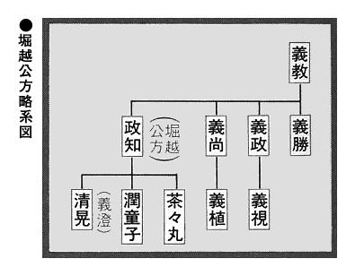

| 小和田哲男選集4 上杉vs武田vs北条 関東三国志 (歴史群像デジタルアーカイブス) | |
| 小和田哲男 | |
| (2016) | |
歴史群像デジタルアーカイブス
小和田哲男選集４
上杉vs武田vs北条 関東三国志
小和田哲男
本書は「歴史群像デジタルアーカイブス」シリーズのうち『＜上杉謙信と戦国時代＞謙信上洛の秘密』『＜武田信玄と戦国時代＞諏訪・佐久・北信濃 三地域侵攻』『＜武田信玄と戦国時代＞成功と失敗 伊奈・小田原・駿河侵攻戦』『＜武田信玄と戦国時代＞武田信玄、手当たり次第』『＜北条早雲と戦国時代＞享年八十八の大往生』『＜北条五代と戦国時代＞真説 早雲の出自／評定衆と支城配置』『＜北条五代と戦国時代＞応仁の乱／「早雲寺殿廿一箇条」の世界』『＜北条早雲と戦国時代＞記憶に残る 新井城攻防戦』『＜北条五代と戦国時代＞七つの支城・衆編成／家康江戸入りの真相』『＜北条五代と戦国時代＞父が氏康に遺した軍略・民政手法』『＜武田信玄 上杉謙信 北条氏康と戦国時代＞徹底比較！三英雄統治ノウハウ』を合本したものです。
＜上杉謙信と戦国時代＞謙信上洛の秘密
領国支配に利用した〝京の権威〟
将軍不在の京都
すでに権力は将軍の手になく
洛中は荒廃していた
謙信が栃尾城から春日山城に入り、守護代長尾家を相続したのは、天文十七年（一五四八）十二月三十日のことで、このとき、謙信は十九歳だった。その二年前、足利義輝（はじめの名は義藤）が第十三代の将軍となっている。謙信と義輝は、出発点をほぼ同じくしているのである。
ところで、義輝が将軍になったころの京都は混乱のまっただ中にあった。実権を握っていたのは管領の細川晴元で、これに三好長慶が対立し、義輝自身、京都にいられず、しばしば近江に逃がれるといったありさまだったのである。
天文十九年（一五五〇）十二月、義輝は居城としていた中尾城を三好長慶の軍勢に攻められ、晴元らと近江の朽木谷に退いたが、その後、同二十一年（一五五二）正月には、義輝と長慶が講和し、京都の二条御所に迎えられている。
ところが、翌二十二年（一五五三）二月、細川晴元の軍勢が態勢をたてなおして京都に侵入し、三好勢との間に小競合いがはじまると、義輝は、いきなり洛外の霊山城に入り、長慶と絶っているのである。長慶よりも、やはり晴元の方が頼りがいがあると判断したものであろう。ところが、この情勢判断は誤まりで、結局、長慶が八月、河内・和泉などから二万五〇〇〇といわれる大軍を動員し、京都を占領したため、義輝はまた朽木谷へ逃がれていくしかなかった。
謙信が最初に上洛した、天文二十二年というのは、このような年だったのである。いかに越後とはいえ、細川晴元と三好長慶が戦い、将軍義輝は近江に流寓をくりかえしているという情報は、謙信の耳にも届いていたはずである。
そうした情報を承知の上で、謙信が上洛したのはなぜだったのだろうか。
天文二十二年の初上洛
二〇〇〇の大軍を率いた謙信の目的は
幕府権威の回復だけではなかった
ふつうは、天文二十二年に謙信が上洛したのは、前年で、従五位下、弾正少弼に叙任されたお礼を言上するためであったといわれている。たしかに、上洛した謙信が後奈良天皇に拝謁し、天盃と剣を与えられていることからすれば、これが目的であったことはいうまでもない。
しかし、果たしてこれだけだったのだろうか。他の戦国大名にしても、朝廷から官途・受領をもらっているケースは多いが、わざわざ国を留守にしてまでお礼言上のために上洛するというのは稀である。戦前ならば、「それだけ勤皇精神があつかったのだ」と評されるところだが、もう少し別な理由を考えなければいけないのではなかろうか。
ここで注目されるのは、このとき、謙信が二〇〇〇という大軍を率いて上洛しているという事実である。ただ、叙位任官のお礼言上ということであるならば、このように多勢をつれていく必要はない。
謙信は、二〇〇〇の大軍で、将軍義輝の警固にあたり、将軍の復権、すなわち、幕府の権威の回復をはかろうとしたのではないかと考えられる。
天文二十二年の上洛が何月何日のことかわからないが、九月のことといわれているので、謙信が上洛しようとしたときには、まだ、義輝が京都を逐われたという情報が春日山に届いていなかったと考えられる。
それともう一つ注目しておかなければいけないのは、この年八月中旬から下旬にかけて、信濃の川中島で、謙信と信玄との戦いがあったことである。第一回目の川中島の戦いの直後に謙信が上洛しているという事実をどう考えるかである。
第一回目の川中島の戦いは、のちの第四回目の戦いのような本格的なものではなかったが、謙信にしてみれば、信玄の実力を知る機会となったことはまちがいない。「信濃を侵す信玄を退けるためには、それなりの名分が必要である」と考えるようになったのではなかろうか。「直接、将軍にお会いして、戦いの名分を得よう」という思いが、上洛行動へ駆りたてたとみることもできよう。
しかし、すでにみたように、謙信が上洛する直前、義輝は三好長慶に逐われ、京都を落ち、近江の朽木谷に逃がれていってしまったのである。
そこで仕方なく、上洛目的としては副次的な理由にすぎない叙位任官のお礼言上のため、後奈良天皇に拝謁をしたとみることができる。
謙信という武将は、戦国武将の中では、やはり古いタイプに属す。天皇および将軍、つまり京の権威というものを認めていたことが、これら一連の行動からうかがわれる。
ところで、天文二十二年の上洛の目的は他にもあった。宗教界への接近である。
このとき、謙信は自ら高野山に上り、金剛峯寺に参詣し、そこの無量光院の清胤から、真言の教義を授けられている。比叡山にも上り、延暦寺に参詣している。
のち、弘治二年（一五五六）のことになるが、突然、謙信が出家するといいはじめる出発点はここにあったとみてよいであろう。
毘沙門天をあつく信仰する謙信にしてみれば、真言宗の聖地に参詣することは、たしかに一つの目的であったことが考えられる。
高野山・比叡山だけではなく、このとき、京都の大徳寺にも入っている。そこで、徹岫宗九に参禅し、宗心という法号ももらっているのである。
もう一つ忘れてはならないのが本願寺との関係である。大坂の石山本願寺に自ら参詣するということはなかったが、使者を遣わし、贈り物を届けさせ、好を通じているのである。
それまで謙信は本願寺とは敵対していたので、大きな路線変更とみてよいが、これは、信玄との戦い、また、関東へ出陣するため、一向一揆を敵とし続けることが不利と判断したためであった。
謙信はこの天文二十二年の上洛のとき、和泉の堺にも足を運んでいる。堺は自由都市とか自治都市といわれ、いわば世界に開かれた貿易港であったが、謙信の目的は鉄砲だったと思われる。
永禄二年の再上洛
主力五〇〇〇を率いて再び京に上り
関東管領職の内諾を得る
将軍義輝は天文二十二年（一五五三）から五年間、将軍とは名ばかりの朽木谷での浪々生活を送っていた。
ところが、永禄元年（一五五八）五月三日、細川晴元に擁され、坂本に移り、さらに六月九日には、三好長慶軍と白川口において戦いとなっている。結局、近江の六角義賢の斡旋で、両軍の間に和議が結ばれ、義輝は京都にもどることができたのである。この年、義輝は謙信に対し、信玄と講和を結び、上洛することを促している。義輝にしてみれば、細川晴元・三好長慶らよりも、謙信に期待したかったのかもしれない。
あるいは、さらに一歩進めて、晴元・長慶らを牽制させようと、謙信の上洛を求めたとみるのが真相だったのかもしれない。
「一回目の謙信の上洛時には、あいにく自分は不在だったが、今度こそ」という思いがあったであろう。
謙信と他の戦国武将のちがう点が、ここにおいてより明瞭となる。このころ、他の戦国武将たちは、室町幕府─守護体制というシステムそのものが、もう機能を果たさなくなったという認識をもっていたのである。幕府の定めた幕府法ではなく、自分たちが独自に制定した分国法、すなわち、戦国家法が一人歩きをしはじめたことにも、その変化は明らかである。
しかし、謙信はちがっていた。義輝を助け、幕府─守護体制の立て直しを行うことが自分の使命と考えていたのである。つまり、「自ら天下をとってやろう」とは考えず、あくまで、将軍の権威、ひいては、将軍を任命する天皇の権威、総じて京の権威のために戦うべく自らを位置づけていたことがうかがわれる。
のち、足利義昭を擁して上洛した織田信長が、義昭から管領職を与えられようとして断わり、副将軍も蹴ったことは有名である。仮に、このとき、謙信が義輝から「管領になってほしい」といわれれば、「身に余る光栄」とかいってそれを引き受けていたのではないかと思われる。
それはさておき、義輝からの上洛要請をうけた謙信は、早速十一月に、家臣の神余親綱を京都に派遣し、明年、すなわち、永禄二年（一五五九）に上洛する予定であることを告げさせている。
そして予定通り、永禄二年四月三日、謙信は、直江景綱・柿崎景家といった重臣たちを筆頭に、総勢五〇〇〇の大軍で春日山城を発し、上洛の途についたのである。
五〇〇〇という大軍と、主だった重臣たちをつれていっているというところに、謙信の並々ならぬ決意のほどがうかがわれるわけであるが、隣国信濃をめぐって甲斐の信玄と争っているまっただ中に、五〇〇〇もの主力部隊を謙信自らが率いて、越後を留守にするということは、戦国武将一般の常識からは逸脱している行動といわなければならない。こんなところにも、京の権威を信奉していた謙信の真骨頂がかいま見られるわけであるが、極論すれば、時代錯誤といってもよい。
四月二十日、謙信の一行は近江の坂本についた。坂本の陣営に三好長慶・松永久秀らが出迎えの挨拶におもむいている。すでに、義輝を傀儡将軍にまつりあげていた長慶・久秀らにしてみれば、「お手やわらかに......」といったところであろうが、正義感しかもたない謙信は、長慶・久秀らの狡猾さには気づいていない。
四月二十七日、いよいよ威儀を調えて入洛し、義輝に謁見。大刀・馬・黄金などを献上している。そして五月一日には、宮中で天皇にも謁見している。このときの天皇は、第一回目に上洛したときの後奈良天皇から正親町天皇に代がかわっていたが、このときも、天皇から天盃と剣を与えられている。
ところで、第二回目の上洛の目的は何だったのだろうか。すでに述べたところからも明らかなように、最大の、しかも公表された形の目的は、将軍義輝の要請をうけて、義輝の身辺を警固することであった。晴元と長慶・久秀との争いから義輝を守り、義輝を本来の将軍らしく、文字通り「守護」することがねらいであったことは異論がない。
警固ということで、将軍の近くにいたということもあり、将軍義輝の周囲の人々との交流もあった。
特に注目されるのは近衛稙家の子前嗣（前久）とのつながりである。前嗣はこの時点での関白であり、正親町天皇との謁見などはこの前嗣がセットしたものと思われる。
また、前嗣はよく義輝の酒宴に招かれ、それに謙信も同席する機会が何度かあり、将軍義輝・関白前嗣、それに謙信、この三者の人間くさい交流が深まっていったのである。謙信は前嗣に隼を贈り、歌集『三智抄』を所望したりしていた。翌年、前嗣は謙信を頼って越後に下ることになるが、その原点はここにあったわけである。
在京中の六月二十六日、謙信は、義輝から一通の御内書を受けとっている。それは、「上杉憲政から関東管領の職を譲られることを認めよう」という内容の御内書であった。
上洛して、将軍の身辺の警固をすることが目的だった点についてはすでにみた通りであるが、この内容をみると、もしかしたら、永禄二年の上洛の目的は、関東管領になることの内諾を将軍から得ることにあったのかもしれない。
もちろん、将軍警固の褒美という意味も考えられるが、謙信のねらいがはじめからそこにあったことも否定できないように思われる。
戦国時代のまっただ中、一国の戦国大名当主が何か月も本国を留守にすることはどう考えても尋常の沙汰ではない。隣国同士不可侵条約が結ばれていれば別であるが、謙信の場合、信玄という大敵を控えての上洛であり、綱渡りのような上洛であった。
案の定、信玄が信濃に動きはじめた。「甲越一和」をはかるべく、義輝からの御内書が下されたが、信玄はこれを無視している。京の権威を重視しない信玄の立場からすれば、これはきわめて当然の行動であり、信玄が従わない以上、謙信としてもそのまま手をこまねいているわけにもいかず、一旦越後に帰り、信玄に対して備えなければならなくなった。
では、謙信はいつ越後に帰ったのだろうか。
どうしたわけか、上洛したときの月日は判明するのに、越後に帰るため、いつ京都を離れたのか、いつ越後にもどったのかが不明なのである。
ただ、前後の状況などから考えて、その年の八月中だったことはまちがいないところだと思われる。
謙信と京の権威
実力時代に京の権威を必要とした
越後の国守の秘密
二度にわたる上洛は、謙信にとって何だったのだろうか。京の権威とは何だったのかについて最後にまとめておこう。
戦国時代は、実力時代、力の時代だといわれる。しかし、だからといって、権威が全く否定しさられていたわけではない。たとえば、伊達稙宗などは、先例のない陸奥守護に任じられることによって、他の領主たちを凌駕していき、戦国大名としての地歩を固めている。謙信の場合も、領国支配の場面に、権威を導入しようとしていたことがうかがわれるのである。
周知のように、長尾家は越後守護代の家柄であった。その点、はじめから甲斐の守護だった武田氏とはちがっている。家柄の〝負い目〟を打ち消すためには京の権威が必要だったのではなかろうか。
「守護代が越後を支配する」というのでは、越後の人びとがついてこないと謙信は考えたのであろう。だからこそ、将軍義輝から白傘袋と毛氈の鞍覆の使用を許されたり、塗輿の使用を許されるたびに感激したものと思われる。
京の権威は、謙信にとって、領国支配に必要な論理だったのである。
＜武田信玄と戦国時代＞諏訪・佐久・北信濃 三地域侵攻
諏訪侵攻戦
天文十一年（一五四二）六月～九月
信濃攻略への突破口を開く
諏訪惣領家を滅亡させる
天文十年（一五四一）六月十四日のクーデターにより、実力で武田家の家督の座をつかんだ信玄は、翌十一年六月、諏訪への侵攻作戦を開始した。
諏訪平の領主は諏訪氏で、諏訪上社の大祝として勢力を扶植し、祠官でもあり、武将でもあるという立場で、諏訪郡を統一していたのである。そのころ、諏訪氏の惣領家の当主は諏訪頼重で、頼重は武田信虎の娘（信玄の妹）禰々と結婚しており、武田氏と諏訪氏は同盟関係にあった。そのため、信虎のときには、諏訪氏の力を借りて信濃経略に取り組んでいたのである。
信玄の代になって諏訪氏とは対立関係になるわけであるが、その要因については、全く相異なる二つの考え方が提起されている。一つは、諏訪頼重側が、家督を奪って自立したばかりの信玄に先制攻撃を仕掛けたとするもので、信玄が信虎を追放してわずか五日後の天文十年六月十九日に、甲斐の混乱状況をみてとった小笠原長時・村上義清らが、諏訪頼重と語らって、三将連合して甲斐に侵入しようとしたため、信玄がこれを韮崎付近で迎え撃ち、その報復として翌年三月、信玄が諏訪に侵攻し、そこで戦いがあったとする。この戦いが、瀬沢の戦いと呼ばれているもので、はじめ、不意を衝かれた形の武田軍に相当の犠牲者が出たが、やがて信玄自らが出陣したことによって小笠原・村上・諏訪三将の信州連合軍を破ったという。
しかし、この瀬沢の戦いそのものについては、良質の史料にみえないことから、信玄の諏訪侵攻を正当化するため、諏訪頼重らがはじめに信玄に対して手を出したように描き出すために創作された戦いのようにも思われ、瀬沢の戦いの存在が確実ではないという弱点がみられる。
それに対し、もう一つの考え方というのは全く逆である。攻められたからその報復として攻めこんだというのではなく、はじめから、信玄が領国を拡大する意図のもと、積極的に諏訪に攻めこんだとするものである。
戦国武将が対外侵略の戦いに踏み出す論理はいくつかあるが、その一つは、内の矛盾を外に転化することであった。このときの信玄の諏訪侵攻にはこの傾向がみられる。というのは、父信虎を国外追放という異常な形で家督を相続したことからも明らかなように、甲斐国内は混乱しており、しかも、信玄の支配に不満をもつ家臣たちも少なくなかったのである。信玄は、そうした状況を的確につかみ、甲斐国をまとめるための手段として諏訪への侵攻をもくろんだということになる。
つまり、バラバラになっている家臣団を統合する方策として一丸になって侵略戦争につき進もうというもので、侵略の対象として諏訪が選ばれたのは、この地が甲斐と地続きの地域だったことと、諏訪氏そのものに矛盾を抱えこんだ弱点があったことが指摘されている。
信玄が諏訪に攻めこむ直前の様子をみると、諏訪頼重は、諏訪下社の大祝家である金刺氏と争い、また、同じ諏訪一族の伊奈郡高遠の高遠頼継がこの金刺氏と結んで惣領家の諏訪頼重と対立していたのである。信玄は、こうした状況をみて、信濃への侵攻を決意するに至った。
天文十一年六月二十四日、信玄は、甲・信国境の境川を越えて諏訪領に侵入した。信玄は、金刺氏および高遠頼継と結んで、東西呼応する形での出陣であり、結局、諏訪頼重の方は、本拠の城である上原城（茅野市茅野上原）を支えることができず、もう一つの城、桑原城（諏訪市四賀桑原）に籠って最後の一戦を考えたが、完全に周囲を包囲されてしまい、落城は時間の問題であった。
ところが、何を思ったのか、信玄は桑原城を力攻めにすることをやめ、頼重に講和を申し入れているのである。七月五日のことであった。
諸書に、信玄の方から和議を申し出たということになっているが、実際は、あるいは頼重のほうから降伏してきたのかもしれない。そのいずれであったにせよ、頼重は「これで一命が助かる。あわよくば信玄の妹婿なのだから本領を安堵してもらえるかもしれない」という思いを抱いたのであろう。実は、そこが信玄の用意した落とし穴だったのである。
何の疑念も抱かず、講和の御礼言上のためという軽い気持ちで甲府へ身柄を移された頼重は、七月二十一日甲府の東光寺（甲府市東光寺町）で切腹させられてしまった。このとき、頼重だけではなく、頼重の弟で大祝であった頼高も切腹させられたため、ここにおいて、諏訪惣領家は滅亡してしまったことになる。
＊祠官＝神主。
「軍神」諏訪社を手中にする
諏訪惣領家を滅亡させたことにより、信玄はその遺領分配に取り組んだ。結局、それまでの諏訪領を二つに分け、宮川を境として、それより西の地域を高遠頼継に与え、自らは宮川より東の地を領することになった。信玄としてみれば、東西呼応して頼重を挾撃した同盟軍として、高遠頼継に対する最大限の論功行賞のつもりだったと思われるが、頼継はその恩賞に不満だったのである。
頼継には、諏訪一族であるという思いがあった。そのため、「惣領家を滅ぼし、自らが惣領家になりたいために、信玄に味方したのだ」という意識があったようで、せっかく惣領家を滅ぼしたのに、自分がその惣領家を継ぐことができないばかりか「諏訪領の半分しかもらえない」ということで、次第に不満をつのらせていたのである。
そして、とうとうその不満が爆発した。頼継は、諏訪上社の禰宜矢島満清や、伊奈郡福与城（長野県上伊那郡箕輪町福与）の藤沢頼親らと結び、その年の九月十日、武田軍が駐屯していた上原城を急襲し、下諏訪に火を放ち、さらに、諏訪上社と下社を占領するという挙に出た。
「高遠頼継挙兵！」の報はただちに躑躅ヶ崎館の信玄のもとに届けられ、信玄は翌十一日、板垣信方に命じて出陣させたが、このとき信玄は、さきに切腹に追いこんだ諏訪頼重の遺児虎王を前面にたてて諏訪に攻め入らせているのである。
このあたり、いかにも〝策士〟というべきか〝謀略家〟というべきか、信玄の面目躍如たるものがあるわけである。というのは、諏訪の人びとにとってみれば、「旧主頼重殿の遺児に弓を引くわけにはいかない」という思いがあり、頼重の叔父満隆をはじめ、一族の矢崎・千野・矢島といった諸氏や社家の守矢頼真らが、高遠頼継の〝反乱軍〟には加わらず、虎王のもとに集まり、結局、九月二十五日の宮川河畔の戦い（安国寺の戦い）で武田軍が圧勝し、頼継らは高遠に敗走してしまったのである。
もっとも、政争の道具にされた虎王は、それから間もなく死んでしまったので、諏訪惣領家の再興は実現しなかった。
ところで、信玄が諏訪を手中にしたことはいろいろな面で意味があった。一つは、信濃攻略のための突破口が開けられたという点である。だからこそ、自分の妹婿さえも犠牲にすることができたといえる。
そしてもう一つ、歴史的な意味としてはこちらのほうが重要と思われるが、信濃一の宮としての諏訪社を手中にしたという点である。よくいわれるように、諏訪社は〝軍神〟としての側面があった。武田家でも信玄の祖父信縄あるいはその先代である信昌のころから諏訪信仰があったといわれるが、それを直接手中にしたことの意味は大きい。また、信玄が諏訪社を保護することによって、信濃の人びとの人心把握を容易にしたという面も指摘されるのである。
佐久侵攻戦
天文十二年（一五四三）九月～天文十七年（一五四八）九月
上野・北信濃への要衝を確保する
見せしめにされた志賀城
佐久が武田氏の攻撃目標となったのは、諏訪・伊奈より先である。すでに、信玄の父信虎の段階で天文九年（一五四〇）五月には、信虎は板垣信方を大将として佐久に侵入させている。『妙法寺記』によれば、このとき武田軍は一日に三六の城を落としたという。
もちろん、武田軍が破竹の快進撃をしたことをたたえてこのように記されたのであるが、逆にみれば、佐久地方には信虎の前に立ちはだかる有力な在地領主がほとんどいなかったことを意味しているともいえよう。
この地で力のある在地領主といえば大井氏であったが、大井氏は早くに信虎に屈服しており、武田軍はあたかも無人の野を行くような状況で佐久に侵攻していったことがうかがわれる。
しかし、翌天文十年（一五四一）にクーデターによって家督を奪った信玄は、どうしたわけか父信虎が推進していた佐久への侵攻路線を捨て、諏訪へ侵攻していったため、佐久はしばらくの間は安泰であった。ところが、天文十二年（一五四三）九月九日、長窪城（長野県小県郡長和町古町）の大井貞隆が村上義清の支援を得て信玄に反旗をひるがえしたことから、信玄は大井討伐の軍を組織し、信玄自ら五〇〇〇の兵を率いて長窪城を攻め、貞隆は甲斐へ送られ、殺されてしまったのである。
そして天文十五年（一五四六）五月、今度は貞隆の子貞清が内山城（佐久市内山）に籠って反武田の色をはっきりさせたため、信玄による佐久侵攻となった。もっとも、このとき内山城は武田の大軍に包囲され、兵糧攻めにあって貞清は信玄に降伏している。
大井氏は同じ佐久でも南佐久といわれる地域の領主であったが、北佐久に大きな勢力をもっていたのが笠原新三郎清繁という武将であった。大井貞清が信玄に恭順の意を表したのをしりめに、笠原清繁のほうは志賀城（佐久市志賀）に拠って、信玄に徹底抗戦する構えをみせたのである。
地図を広げれば一目瞭然であるが、佐久は上野国と国境を接している。したがって国は信濃国であっても、いろいろなつながりは上野国との関係を無視することができない。事実、翌天文十六年（一五四七）閏七月から八月にかけて、信玄が志賀城を攻めたとき、城主笠原清繁は、後詰めを、上野国平井城（群馬県藤岡市西平井）の上杉憲政に要請しているのである。
上杉憲政は家臣の金井秀景を総大将とする三〇〇〇の大軍を後詰めとして送ってきた。その情報をいち早くキャッチした信玄は、籠城兵と後詰めの軍勢によって挾み撃ちされる前に後詰めの上杉憲政軍を倒すのが先決と考え、二〇〇〇の兵で志賀城を包囲させたまま、残る五〇〇〇の兵を上杉軍迎撃に向かわせたのである。
戦いは、八月六日、浅間山麓の小田井原（長野県北佐久郡御代田町）というところで繰り広げられた。五〇〇〇対三〇〇〇という兵力の差がものをいい、武田軍の圧勝で終わっている。
しかも信玄は、討ち取った三〇〇の首を志賀城に運ばせ、生首を城のまわりに架けさせ威嚇しているのである。後詰めの兵がそのようになってしまった以上、志賀城兵が助かる道はなく、男たちは狂気のように城外に討って出て、皆討ち取られてしまった。志賀城の戦いは、しかしそれだけでは終わらなかったのである。城内に取り残された女・子供はすべて生け捕りにされ、甲府へ運ばれ、安い者で二貫文、高い者で一〇貫文程度で売られているのである。
信玄の戦いぶりからみて、このときの小田井原の戦いといい、志賀城の戦いといい、どこか常軌を逸しているような感じをうけるが、これから本格的に信濃の諸城を攻めるにあたり、「抵抗すればこうなるぞ」という脅しのために使われたと考えることができる。志賀城攻めは、その意味では見せしめ的な意味をもたせた戦いだったということだろう。

〝片腕〟板垣信方を失い大敗北
信玄が佐久にまで版図をひろげてきたとき、最も警戒の念を抱いたのは村上義清であった。義清は、葛尾城（長野県埴科郡坂城町）を本拠とし、埴科・更級・高井・小県・水内の諸郡のほか、佐久郡にも一部勢力を伸ばしてきており、佐久へ侵攻してきた信玄との一戦は避けられない事態となってきたからである。
天文十七年（一五四八）一月十八日、義清は兵を率いて佐久へ進み、佐久を占領した武田軍を追い出しにかかったのである。いっぽう、信玄の方も、志賀城を落とした勢いで、さらにその北をうかがおうとしていたときであり、ややおくれて二月一日、七〇〇〇の兵を率いて躑躅ヶ崎館を出陣している。
このとき、信玄はいったん諏訪に出、諏訪から小県郡の長窪にぬける大門峠を越えて小県に出ている。義清の方は千曲川べりを南下してきており、両軍は上田原（上田市上田原）で衝突した。これが上田原の戦いである。
信玄は七〇〇〇の軍勢を率いていたが、義清の方はそれと同じか、やや少ない数だったといわれており、力はほぼ互角であった。しかし、二月の信州は一番寒いときであり、そのうえ、武田軍は長途の遠征ということで疲れがあり、しかも、地形は村上軍のほうがよく知り尽くしているという利点があった。
戦いは二月十四日にくりひろげられた。緒戦は武田軍が有利に展開し、信玄の先鋒板垣信方隊は、村上軍の第一陣を突破している。ところが、結果的にはこの第一陣突破がかえって裏目に出てしまった。板垣信方は敵の第一陣を突破したのに気をよくして、さらに突き進んでしまったのである。つまり、村上軍を深追いしすぎたため、かえって包囲され、討死してしまうという結果をもたらした。
板垣信方討死の報は、村上軍を勇気づけることになり、逆襲に転じた村上軍によって武田軍は押される形となり、乱戦の中で甘利虎泰・初鹿野伝右衛門といった錚々たる部将をはじめ、七百余人を失うという事態となった。この戦いの最中に、信玄自身も槍で左腕を負傷しており、信玄は生まれてはじめての大敗北を喫しているのである。
信玄にとっては、自分の左腕の傷よりも、右腕とも頼む補佐役の板垣信方を失ったことのほうがよほど痛手であったろう。
しかし、信玄はすぐには兵を撤退させなかった。へたに撤退すれば、村上軍につけ入られて、本国甲斐も危険な状況になることを考えたからであろうが、村上軍にも犠牲が多く、信玄を力で押し戻すだけの余力がなかったとみることもできる。
なお、信玄は三月五日になってようやく諏訪の上原城まで兵を引き、二十六日に甲府へ帰っているが、武田軍が去った佐久では、四月から義清の策動がはじまり、四月二十五日には、武田軍の佐久における拠点である内山城に放火したりしてその攪乱をはじめている。
信玄が再び佐久の奪還にかかるのは、その年、塩尻峠・勝弦峠の戦いで小笠原長時を打ち破って以後である。はじめ、家臣の小山田信有を大将として田口城（長野市臼田町田口）を攻めさせたりしたうえで、九月に入って信玄自ら佐久に出陣し、村上軍によって奪い取られた城を取りかえしている。一三の城がまたたく間に「自落」したことで明らかなように、このときの侵攻は信玄にしてもかなり力を入れたものであったことがわかる。
その意味では、塩尻峠・勝弦峠の勝利が信玄による完全な佐久侵攻を保障したともいえるわけで、決定的な意味をもっていたことになる。
北信濃侵攻戦
天文二十二年（一五五三）四月～永禄七年（一五六四）八月
決着を見ずに終わった龍虎の激闘
勇将・村上義清を逐う
天文十七年（一五四八）二月の上田原の戦いで、信玄は村上義清に手痛い敗北を喫しているが、そののち、もう一度、信玄は村上義清に煮え湯を飲まされている。俗に「戸石崩れ」とよばれている戸石城の戦いである。
戸石城は砥石城とも書かれるが、義清の葛尾城の支城で、現在、上田市上野字伊勢山にある山城である。村上氏の小県方面への拠点として重視されていた。
上田原の敗戦の汚名をそそごうと、その機会をねらっていた信玄のもとに、「村上軍が戸石城に集結している」という情報がもたらされ、信玄は天文十九年（一五五〇）八月二十八日に戸石城近くまで出陣した。
武田軍が戸石城に突入したのは九月九日のことといわれているが、はげしい攻防戦が八日間にわたって繰り広げられた。
ところがここで信玄にとって全く予想外のできごとが起こった。城内で戦っているはずの村上義清がいつの間にか城を脱出し、こともあろうに武田軍の背後から攻めたててきたのである。城内の兵と城外の兵とによって、文字通り腹背に敵の攻撃をうける形となり、武田軍は総崩れになり、ついに十月一日、信玄は全軍に撤退を命じている。
二度にわたる敗北により、北信濃に進出しようとする信玄にしてみれば、村上義清は厚い壁となってたちはだかっていた。
しかし、状況は翌二十年（一五五一）五月二十六日に大きく変わった。この日、信玄の家臣である真田幸隆によって戸石城が落とされたのである。戸石城を信玄が得たことの意味は大きく、以来、信玄は戸石城を北信濃侵攻のための前進基地として位置づけることになった。義清にしてみれば、それだけ追いつめられることになり、さきの上田原の戦い、戸石城の戦いで家臣にかなりの犠牲者を出していることも手伝って、戸石城を奪還する力はなくなっていた。
信玄は次第に北信濃に力を伸ばし、ついに天文二十二年（一五五三）四月九日、村上氏の本拠である葛尾城を攻め、結局、城は戦わずして落ち、義清は一度、小県郡にある支城の塩田城（上田市前山）に入って抵抗を試みたが、そこも武田軍に攻められ、ついに八月五日信濃を放棄し、越後春日山城の上杉謙信を頼って落ちて行ってしまった。
この前年には、中信濃に勢力をもっていた小笠原長時も信玄に逐われて上杉謙信を頼っており、この二人の武将の国外逃亡により、それ以外の北信濃の豪族たち、たとえば、高梨氏や島津氏・須田氏などは大いに動揺し、やはり謙信を頼って越後に落ちていくありさまであった。
一二年間におよんだ川中島の戦い
さきに小笠原長時、そしていままた村上義清に亡命され、頼られた形の上杉謙信は、それまでの沈黙を破り、北信濃へ出陣することになる。もっとも、この謙信の出陣を、ただ「義憤にかられて」とか、「男気を出して」とかいうレベルで考えてしまうと、謙信の北信濃進出の意味を正しくとらえることができないように思われる。謙信にしても、信玄の北信濃侵攻は脅威だったわけで、信濃全土が信玄によって統一されることを、何とか未然に防ごうとしていたのである。
ところが、信玄と謙信の、川中島を舞台とする戦いは、永禄四年（一五六一）九月十日の戦いがよく知られているが、実は、これを含めて、五回戦っていることが明らかである。
第一回戦 天文二十二年（一五五三）八月
第二回戦 弘治元年（一五五五）七月
第三回戦 弘治三年（一五五七）八月
第四回戦 永禄四年（一五六一）九月
第五回戦 永禄七年（一五六四）八月
の五回であり、ほとんど川中島（長野市小島田町田中その他周辺）でくりひろげられている。信玄は足かけ一二年間にわたり、ほぼ同じところを戦場として謙信と戦ったことになる。
たしかに、謙信からの圧迫をはねのけなければ信玄による信濃征圧は不可能であるし、また、謙信にしてみれば、川中島付近は、本拠である春日山城にも近く、何とか確保しておきたい土地だったのである。両雄が、川中島で一二年間にわたって戦わなければならない必然性はそれなりにあったということになる。
第一次川中島の戦いは、布施というところが戦場になっているが、信玄の感状は残されているものの、具体的にどういう戦いがあったかはよくわかっていない。布施の地が広い意味で川中島とよばれる範囲に含まれているので、これを第一回戦としているのである。
第二次川中島の戦いは、弘治元年七月の衝突で、このとき、四月二十三日から閏十月十五日まで、二百余日の長期対峙が特徴で、一番はげしい戦いがあったのが七月十九日であった。これは信玄の感状によって明らかとなる。
なお、このとき、信玄が三〇〇挺の鉄砲を用意していたことは注目されるところである。この戦いは、今川義元の講和斡旋によって、両軍兵を引いて終結している。この間、八月には雨飾城（長野市松代町）をめぐる攻防もあった。
第三次川中島の戦いは、弘治三年八月で、その前哨戦として同年二月十五日に、水内郡の葛山城（長野市茂菅）をめぐる攻防戦もあった。この城は、信玄の旭山城（長野市安茂里）に対抗して謙信側が築かせた城であるが、武田軍の猛攻によって落ちている。
しかし、雪解けを待って謙信が四月になって軍勢を動かして善光寺平に出陣し、旭山城を奪って修復し、信玄との戦いに備えている。川中島に含まれる上野原というところで合戦があったことが確実なので、実際に戦闘があったことはまちがいないが、詳細についてはよくわからない。
そして、第四次の戦いが、永禄四年九月の戦いである。このときの戦いが最も激戦になったわけであるが、八月十四日、謙信は川中島へ出陣した。軍勢は一万八〇〇〇（一説に一万三〇〇〇）といわれている。
謙信が善光寺平に出てきたという報は、前年に完成したばかりの海津城（長野市松代町）を守る高坂弾正昌信から烽火によって信玄のもとに伝えられ、信玄は八月十八日、自ら一万六〇〇〇の軍勢を率いて出陣した。
謙信の方は十五日に善光寺に到着し、十六日には妻女山にのぼり、そこを本陣として信玄の到着を待っている。いっぽう信玄は、十八日に躑躅ヶ崎館を出発し、二十四日に茶臼山にのぼり、翌二十五日、山をおりて、妻女山とは千曲川をはさんで対岸にあたるところに布陣し、さらに二十九日には全軍海津城に集結させている。
それからしばらく対峙が続き、動きがあったのは九月九日の夜であった。武田軍は、いわゆる「啄木鳥の戦法」をとることを決め、高坂昌信を別働隊の大将として、これに一万二〇〇〇の兵をつけて妻女山の背後から攻めさせ、信玄自らは八〇〇〇の本隊を率いて妻女山の前面、八幡原と呼ばれるあたりに布陣し、妻女山から出てくる謙信を待ちかまえていた。
ところが、実際は、謙信軍が夜中に妻女山をおりて八幡原に布陣していたため、武田軍の目論見は破れ、翌十日の早朝、八幡原での決戦となり、はじめ謙信が有利で、のち、別働隊が戻ってきた時点で、武田軍がもりかえし、勝敗はつかず、両軍兵を引いている。
なお、第五次の戦いは永禄七年八月であるが、このときは対陣六〇日におよびながら、両軍本格的に戦う意思はなく、小競合いだった。
こうして、一二年間に及ぶ信玄・謙信の直接対決は決着を見ずに終わったのである。
＜武田信玄と戦国時代＞成功と失敗 伊奈・小田原・駿河侵攻戦
伊奈侵攻戦
天文十一年（一五四二）九月～天文二十三年（一五五四）八月
甲斐の騎兵が伊奈谷を走る
武田軍、杖突峠を越える
諏訪と伊奈（のちに伊那と書かれる）の境が杖突峠である。武田軍が、諏訪から伊奈へ駒を進めるためには、どうしても越さなければならない峠であった。
武田の軍勢がはじめて杖突峠を越えたのは、諏訪侵攻戦のときと同じ天文十一年（一五四二）のことであった。その年九月二十五日、諏訪の宮川河畔で、安国寺の戦いと呼ばれる激しい戦いがあり、高遠頼継が武田軍と戦って完膚なきまでにうちのめされ、ほうほうの態で杖突峠を越えて高遠に逃れていったが、それをみすみす見のがす武田軍ではなかった。
安国寺の戦いでは、頼継の側に七、八百の犠牲者が出たといわれ、頼継の弟頼宗、さらには矢島満清の子なども討死するという状況で、高遠軍はかろうじて杖突峠を越えるといった状態だったのである。武田軍を率いてきていた板垣信方は、そのまま追撃することを命じられ、安国寺の戦いのあった翌二十六日には武田軍の一部は杖突峠を越えていた。
このとき、武田軍の先鋒として伊奈に侵攻していったのは駒井政武（高白斎と号す、『高白斎記』の筆者）で、高白斎は守矢頼真に手引きされて藤沢口に進んだ。そこに、高遠頼継に呼応して挙兵した藤沢頼親の居城福与城（長野県上伊那郡箕輪町福与）があったからである。高白斎率いる武田の軍勢は、まわりに火を放って進み、ついに福与城を囲んで攻めたて、藤沢頼親を降伏させている。
一方、板垣信方の方は、上伊奈口、すなわち有賀峠に進み、高遠軍の残兵を一掃し、諏訪へ凱旋した。
ここにおいて、信玄は、板垣信方を諏訪郡代に任命し、上原城に在城させて諏訪の支配にあたらせるとともに、伊奈への侵攻の足場とさせたのである。しかし、藤沢頼親を降伏させたとはいっても、武田氏による伊奈侵攻は、この時点では、まだ緒についたばかりという状況だった。本格的な伊奈侵攻は、皮肉な結果ではあるが、むしろ、高遠頼継の逆襲を契機としてはじまったといってよい。
たしかに、頼継にしてみれば、それまでの経過はおもしろくないことばかりであった。信玄と手を結んで惣領家の諏訪頼重を討ったのも、頼重さえ倒せば、惣領家の座には当然自分がつけるものと思っていたわけであるし、戦いのあと、諏訪領の半分しか与えられなかったことも不満であった。その不満が昂じてついに信玄と一戦を交えたが、かえって敗れて高遠に追い籠められてしまったのもおもしろくない。この思いは、頼継の同族藤沢頼親にしても同じだった。頼親の場合には、駒井高白斎に城を囲まれ、降伏させられているだけに、よけいであったと思われる。
天文十三年（一五四四）九月、信玄が諏訪・伊奈方面にのみ力を投入できる状況でないと判断した藤沢頼親は、信玄に反旗をひるがえし、再び高遠頼継と結んで武田の支配に抵抗をはじめた。
信玄はすぐに伊奈侵攻の軍を組織し、十月十六日、自ら先頭にたって杖突峠を越えて伊奈に攻め入ったのである。信玄は藤沢頼親の福与城を攻めるべく駒を進めたが、その支城であり、前衛ともいうべき荒神山城（長野県上伊那郡辰野町）を攻め落とすのに手まどってしまったのである。荒神山城は容易に落ちなかった。かといって、落とさないまま進めば背後を衝かれる危険があり、城を包囲したわけであるが、事態は思わぬ展開をみせた。
荒神山城藤沢頼親方の後詰めとして、高遠頼継が信玄の背後に迫ってきたのである。城攻めをしている場合、攻める側にとって最も警戒をすべきはこの後詰めであった。信玄は荒神山城内の藤沢頼親勢と、背後から迫ってくる高遠頼継勢とによって挾み撃ちにされるおそれが出てきたのである。しかも信玄にとって一番ショックだったのは、高遠頼継軍には、小笠原長時からの援軍も加わっているという情報がもたらされたことであった。
結局、信玄は、「これ以上、荒神山城を攻め続けるのは危険である」と判断し、十一月一日、城の周囲を放火しただけで撤退命令を下し、挾み撃ちにあう前に伊奈から脱出し、三日には全軍を上原城に戻し、信玄自身、九日には躑躅ヶ崎に戻っている。このときの伊奈侵攻は全くの失敗に終わった。
高遠城・福与城を落とす
引きあげる信玄軍を追う形で高遠軍が諏訪へ乱入し、十二月八日には諏訪上社の神長官守矢頼真の屋敷に放火するなど荒らしまわったが、当時は雪が深く、信玄は援軍を送ることすらできない状態だった。
信玄が動きはじめたのは、年が改まった天文十四年（一五四五）の四月であった。信玄は、雪解けを待って伊奈への侵攻を命じたのである。
四月十一日、七〇〇〇の軍勢を率いて信玄は躑躅ヶ崎館を出陣し、十四日に上原城に到着。そして息つくまもなく十五日未明に杖突峠にのぼり、そこに布陣した。その日、すでに先鋒は高遠城に攻めかかり、頼継は籠城して藤沢頼親・小笠原長時が赴援して後詰めにくることを待ったが、それも間にあわず、十七日、頼継は城を捨てて逃げてしまったのである。
高遠城を落とした勢いで、四月二十日から信玄は藤沢頼親の拠る福与城攻めを開始した。しかし、福与城は天竜川に臨む天嶮に築かれていたことと、城兵がよく守ったということもあり、武田軍の猛攻にもなかなか落ちず、かなり長期の戦いになってしまった。
信玄は、このときの伊奈侵攻に際しては、単独では困難と判断し、同盟軍である今川義元に援軍を申し入れていた。その今川義元の援軍と武田軍の板垣信方隊が福与城の支城龍ヶ崎城（長野県上伊那郡辰野町）を攻め、六月一日に落城させている。
龍ヶ崎城は頼親と小笠原長時とをつなぐ連絡・補給のルートにあたっており、龍ヶ崎城の落城によって、福与城の城兵たちの戦意は著しく低下した。
そして、その戦意喪失を見透かすかのように、武田方から頼親へ降伏勧告が送りつけられたのである。形の上では和議ということになっているが、実質的に頼親の降伏勧告だったことはまちがいない。六月十一日、頼親は弟の藤沢権次郎を信玄のもとに人質として差し出している。福与城はその日のうちに焼かれてしまった。
ここにおいて、伊奈の大半は信玄の領有するところとなったわけである。しかし、高遠城・福与城・龍ヶ崎城といった城の位置からも明らかなように、伊奈とはいっても、のちの上伊那郡の範囲であり、信玄の力が下伊那郡のほうにまで及ぶようになるためには、さらに一〇年近くの歳月を必要としたのである。
というのは、のちの上伊那郡の地に勢力をもっていたのは以上みてきたように高遠氏・藤沢氏であったが、下伊那郡の地には松尾城（飯田市松尾古城）に拠る小笠原氏が勢力をもっており、信玄としても、その小笠原氏を攻略することは容易ではなかったからである。
信玄が伊奈の南半部（のちの下伊那郡）まで勢力下に治め、文字通り完全に伊奈一円を手にするのは天文二十三年（一五五四）のことであった。
この年七月二十四日、信玄は、神之峰城（飯田市上久堅）に知久頼元を攻め、さらにその勢いで八月上旬に松尾城の小笠原信定（長時の弟）を攻め、さらに吉岡城（長野県下伊那郡下條村陽皐吉岡）の下条一族を屈伏させ、伊奈南半部も押さえることに成功している。
信玄は秋山信友を伊奈郡代に任じ、伊奈の支配に当たらせているのである。
小田原攻撃・駿河侵攻戦
永禄十一年（一五六八）十二月～元亀二年（一五七一）正月
今川氏と断絶し南進策を展開する
嫡男・義信を自刃に追い込む
武田氏と駿河の今川氏とは同盟関係にあった。信玄の姉が今川義元に嫁いでおり、また、甲相駿三国同盟の締結にあたっては、今川義元の娘が信玄の嫡男義信に嫁いでおり、両者の関係はゆるぎないものとなっていた。この同盟があったからこそ、信玄は背後を心配することなく、北信濃や西上野に駒を進めることができ、また、今川義元からの援軍を得て、戦いを有利に展開しえていたのである。
ところが、永禄三年（一五六〇）五月十九日の桶狭間の戦いで義元が織田信長に討ち取られたことにより、武田・今川の甲駿同盟は微妙になってきた。というのは、義元のあとを継いだ氏真が、広大な今川領を維持できなかったからである。特に、三河で松平元康（のちの徳川家康）が自立し、遠江を保つことも困難になった情勢のもとで、信玄は、ついに甲相駿三国同盟の破棄を決意するに至った。
もっとも、今川氏との断絶についてはさまざまな紆余曲折があり、特に、嫡男義信は信玄の南進論に最後まで反対を唱えていた。たしかに義信にしてみれば、今川氏と断絶し、それを攻めるということになれば、妻の実家を攻めることになり、承服できなかったことであろう。
しかし、信玄の頭には、「このまま手をこまねいていれば、早晩、今川領国は家康に奪いさられてしまう」という焦りにも似た気持ちがあった。ここに、嫡男義信を自刃に追いこんでも駿河に進出したいとする信玄の決意があったのである。
永禄十年（一五六七）十月十九日、義信は幽閉先の東光寺で自刃する。その少し前に、義信の妻、すなわち義元の娘は駿河に送り返されている。
それがいつのころであるかはわからないが、駿河側に、その年の八月十七日付で、駿河湾産の塩を甲斐に送るのを禁止している文書があるので、八月十七日以前であったことがうかがわれる。つまり、武田側からの一方的同盟破棄を怒った今川氏真が、「塩留」を断行したということになる。
ところで、従来、信玄の南進論は、「海を希求していた信玄の必然的帰結である」というふうに考えられていた。たしかに、海をもたない信玄にとって、駿河は魅力ある土地であった。しかし、信玄が嫡男を自刃に追いこんでまで駿河を欲したのは、ただそれだけの理由ではなかったのである。
信玄の路線が、この時期、それまでの親今川・親後北条から親織田路線に転換しつつあったことをみのがすことができない。具体的な動きとしては二つあり、一つは、南進論に強く反対する義信が東光寺に幽閉された永禄八年（一五六五）、その同年に、義信の弟勝頼が、美濃の苗木城主遠山友勝の娘を娶っていることである。
遠山友勝の妻は織田信長の妹であり、信長は、その娘をいったん自分の養女とした上で、つまり、「信長の娘」という形にして勝頼に嫁がせているのである。ここにおいて、甲斐と尾張との「甲尾同盟」ともいうべき同盟が成立したことが明らかである。
おそらく、この信玄・信長との同盟関係が基底にあったものと思われるが、信長が信玄に、駿河攻めを勧めている。これが具体的な動きの二番目ということになる。信長は美濃からさらに足利義昭を擁して上洛を果そうという重要な時期であった。その時期、「できることなら信玄に邪魔されたくない」という思いがあったであろう。信玄に駿河攻めを勧め、関心をそちらにそらしておいた上で、上洛のための軍事行動を起こそうという腹だったのである。
駿河・今川館を攻撃する
このようにみてくると、信玄の駿河侵攻戦は、信長の天下統一のためのプログラムに踊らされてしまったという印象をうける。結果論になるが、甲相駿三国同盟の破棄は、それからはじまる後北条氏との戦い、さらには徳川家康との戦いという、信玄が、それこそ展望のない戦いの泥沼に足をつっこむ大きな要因となってしまったことになる。
永禄十一年（一五六八）十二月六日、信玄は大軍を率いて躑躅ヶ崎館を出陣した。駿州往還（河内路・身延路とも）を南下し、由井口・八幡坂の左を通って十二日には早くも内房（静岡県富士宮市内房）に陣を敷いている。
「武田軍来たる！」の報をうけた今川氏真は、同盟者である北条氏康・氏政父子に急を告げる一方、重臣の庵原安房守を大将として、一万五〇〇〇の兵で薩埵山に布陣させた。そこで、武田の大軍を迎え撃とうという計算である。
ところが、信玄は、出陣の前に、あらかじめ今川氏の重臣たちから内応の約束をとりつけていた。そのため、一族の瀬名信輝をはじめ、重臣中の筆頭ともいうべき朝比奈信置・三浦義鏡・葛山氏元といった主だった武将たちが武田軍と一戦も交えることなく後退してしまい、薩埵山で迎え撃つという氏真の作戦はもののみごとに失敗してしまうのである。
あとは、敗走する今川軍を武田軍が追う形となり、翌十三日に、武田軍は山県昌景・馬場信房を先鋒として、江尻から宇和原（静岡市清水区上原）に陣を進め、駿府への乱入を開始している。
氏真は駿府の今川館を本拠としていた。駿府館とか駿府今川館などと呼ばれているように、軍事施設としての城というよりは、日常生活の場としての居館であった。そのため、背後の賤機山を戦時の詰めの城として準備していたのである。
ところが、あっという間に薩埵峠の防衛線が突破されてしまったため、氏真はこの詰めの城である賤機山城に入って戦う余裕がなく、かえって信玄の軍勢によって占拠されてしまったのである。それだけではなく、今川館をとりまき、いざというときに軍事的拠点となるべきはずの八幡山城・愛宕山砦などもいち早く武田軍の手に落ちてしまい、今川館で武田の大軍を迎え撃つしかない状況であった。
武田軍は、駿府の町に火を放って今川館めざして進撃した。このときの武田軍が放った火によって、浅間神社や臨済寺など古くからの神社仏閣が焼かれている。
ただ、信玄は今川館攻めの先鋒馬場信房に対して、「今川館には火をかけるな」と命じている。これは、今川氏の代々が文化人としても知られており、有名な古典籍をはじめ、茶道具や絵画・刀剣などの文化財をたくさんもっており、そのまま焼いてしまうのは惜しいと判断したからである。
ところが、実際には、馬場信房は、信玄の命令にもかかわらず、まっさきに今川館に焼き討ちをかけている。氏真はそこを支えることができず逃げだし、間道を通って遠江の掛川城に落ちていった。掛川城に、重臣中の筆頭である朝比奈泰朝がいたからである。
このときの逃避行がいかに急なものであったかは、氏真夫人（北条氏康の娘）が、乗り物を得られず、徒歩で今川館を脱出していることによってもうかがうことができる。
今川館が落ちたあと、信玄は馬場信房を呼びつけて、命令に反して今川館に火を放ったことを責めているが、そのとき馬場信房は、「火をかけずに、今川の財宝を手に入れれば、信玄は、今川の財宝ほしさに氏真を滅ぼしたといわれましょう」といって、逆に信玄に対して諫言をしているのである。
「氏真が信玄に攻められる」というわけで、氏真と同盟関係を保ち続けている北条氏康・氏政父子が武田軍を討とうと出撃してきた。信玄はそれを迎え撃とうと、全軍を薩埵峠に戻し、そこで北条軍を防ごうとした。
年が改まって永禄十二年（一五六九）一月十八日に、薩埵峠をはさんで両軍の対陣がはじまったのである。
この攻防戦は四月二十四日まで続き、容易に決着がつかなかったが、このころ、北条氏康と同盟関係にあった上杉謙信が、北から、駿河侵攻戦で全軍出払い手薄になった甲斐を衝く動きをみせたため、信玄は兵を撤収せざるをえないはめにおちいった。いうまでもなく、これは北条氏康の作戦であった。結局、信玄は、氏真を駿河から逐ったという成果をあげただけで、逃げ帰るように甲斐へ戻るしかなかったのである。
三増峠で後北条軍を撃破
一度、甲斐へ戻った信玄は、「当面の敵は北条氏康・氏政父子である」と思うようになった。たしかに、北条をたたいておかないと、駿河を円滑に自己の領国とすることはむずかしい情勢である。
そこでその年の六月十六日、御坂峠・籠坂峠越えで伊豆の三島を攻めている。このときの軍事目的が何であったのか、よくつかめないが、その帰途、富士大宮（富士宮）で大宮城を攻め、氏真の遺臣富士兵部少輔を降服させているのである。これが第二回の駿河侵攻ということになる。
再び躑躅ヶ崎館に戻った信玄は、ほとんど休む間もなく、九月には西上野に出撃した。しかし、このときは、西上野侵攻が目的ではなく、北条との戦いがねらいであり、上野側から武蔵に兵を進め、北条氏邦の守る鉢形城を攻め、さらに北条氏照の守る滝山城を攻め、ついに十月一日には、後北条氏の本城である小田原城を包囲しているのである。
信玄は駿河侵攻を邪魔されたうらみを一気に晴らそうとしたのであろうが、武田軍が長期の城攻めに耐えられるだけの軍隊でなかったことも事実である。
北条氏康・氏政父子もそのことは十分承知していた。「籠城していれば、兵糧につまった武田軍の方が自壊する」とふんでいたのである。しかも、小田原城は、長期の籠城にも耐えうるように設計されており、信玄は小田原城を攻めあぐね、ついに十月四日、力攻めをあきらめて撤退しはじめている。
実は、この撤退は、信玄の作戦であり、それはつぎの三増峠の戦いに連動するのである。その意味では、信玄の方が一枚上手であったといえよう。
信玄の軍勢は小田原から平塚に出、そこから相模川右岸を通って津久井を経て甲斐に戻るコースをとった。
撤退していく武田軍をみて、さきに自分の居城を荒らしまわられた鉢形城の北条氏邦、滝山城の北条氏照が、「そのまま甲斐に帰してしまう手はない」と主張。結局、氏邦・氏照が連合して、退路にあたる三増峠（神奈川県愛甲郡愛川町・相模原市津久井町）で待ち伏せし、一矢むくいようと計画をした。
十月六日、武田の大軍が三増峠にさしかかったとき、待ち伏せしていた後北条軍が武田軍に対して一斉攻撃をはじめたのである。ところが、いかにも、小田原城攻めに失敗して敗走するかにみせながら、このときの武田軍の撤退は敗走ではなかった。そればかりか、あらかじめ、三増峠付近に後北条氏の軍勢がひそんでいるということを察知しており、軍勢を二手に分け、それへの備えをしていたのである。
つまり、三増峠で奇襲をかけたつもりの北条軍が、かえって武田軍の伏兵に襲われるという結果になり、このとき、北条軍二万の軍勢の内、三二〇〇人の犠牲者を出したといわれている。いかにはげしい戦いがくりひろげられたかがうかがわれる。
城攻めに失敗して、いかにも逃げるかのようにみせかけ、小田原城の城兵を城外におびき出しているわけで、この戦法は、のちの三方ヶ原の戦いにもある面で共通しており、信玄が得意とした手の内の一つであったことが明らかである。信玄は、城攻めよりも、こうした野戦にもちこむ方を得意としたのであろう。
北条軍二万という数は、単に支城主である北条氏邦や北条氏照の軍勢ではなく、小田原本城の主力、つまり、御馬廻衆・旗本なども含んだ全力動員との感が強いが、北条氏康・氏政父子は、あわよくば、三増峠で信玄を倒そうと考えていたのであろう。
ところが、どうしたわけか、信玄は、三増峠では北条軍との決戦を避けているのである。あたかも、追いすがる敵をふり払うように甲府をめざして去って行った。
二度目の駿河侵攻も失敗
その年の十一月二十八日、信玄の大軍が甲駿の国境を越えて駿河になだれこんできた。三度目の駿河侵攻である。この流れを考えると、九月から十月の関東出陣は、北条氏康・氏政父子を牽制するのが目的であったと解釈することができる。そう考えれば、本格的に小田原城を攻めることなく撤退し、また、三増峠で雌雄を決することなく兵を引いたことも納得がいく。つまり、このころの信玄の真のねらいは、あくまで駿河の確保、領国化だったということになる。
しばしば戦場となった薩埵峠には、そのころ後北条方が薩埵砦というものを築いていた。
駿河に乱入した武田軍は、まず、この薩埵峠を簡単に手に入れた。
これに勢いを得た武田軍は、続いて蒲原城（静岡市清水区蒲原町蒲原）に攻めかかった。このころ、蒲原城には北条の軍勢が駐屯していた。城主は北条一族の北条綱重（北条幻庵の子）で、城兵はわずか一〇〇〇ほどであったが、城そのものが天嶮の山城であったため、武田軍の攻撃をよく支えていた。
十二月五日より、武田軍は城下の蒲原宿に火を放ち、翌六日未明、総攻撃をかけている。総大将は武田勝頼であった。城兵はよく守ったが、ついに支えきれず、城主北条綱重は討死し、城は落ちてしまった。
信玄のつぎの目標は駿府であった。氏真は掛川城に逃がれたあと、今度は掛川城を徳川家康に攻められたため、その年の五月十七日に降伏開城し、妻の実家である北条氏を頼って伊豆に落ちのびていたが、今川館は、信玄が甲斐にもどっていたという関係もあり、今川氏の遺臣岡部正綱がこれを占拠し、武田の支配に抗していたのである。信玄は、再び今川館を奪いかえそうと駿府に攻め入っている。
このとき、信玄は今川館を直接攻めず、近くの臨済寺の住持鉄山宗鈍を使いとして、今川館に籠り、あくまで信玄に抵抗しようとする岡部正綱を説得させている。この説得が功を奏し、今川館は、このときは無血開城となった。
年が改まって元亀元年（一五七〇）正月、信玄は、はじめて駿府から西に駒を進めている。正月四日からはじまった花沢城（焼津市高崎）攻めがこれである。城は今川の遺臣大原資良が守り、信玄に対して抵抗を続けていたため、駿河の完全な統一のために落とす必要があると判断して、このたびの城攻めになったものである。
花沢城もさきの蒲原城と同様、天嶮を利用した山城であり、武田軍が五日間にわたって猛攻を加え、やっと落としている。
このあと、いったん兵を甲斐に戻した信玄は、四月にまた駿河に侵攻してきた。このときは五月十四日に吉原および沼津で北条軍との間で戦いとなっているが、両軍とも本格的な戦いは回避していたようである。沼津の千本松原が戦場になったのはこのときである。
同じ年の八月三日、信玄は黄瀬川に本陣を置き、軍勢を二手に分け、一手は北条氏の支城の一つ、伊豆韮山城を攻めさせている。
八月九日の戦いが特に知られ、武田軍の武田勝頼・山県昌景・小山田信茂らが、韮山城外の町庭口で韮山城主北条氏規の軍と戦っている。しかし、それを突破することができず、武田軍は城攻めをあきらめて撤退しているのである。
もう一手は興国寺城（沼津市根古屋）攻めにあたらせている。興国寺城は後北条氏の初代早雲が居城としていた城で、「早雲旗上げの城」として知られ、このころは重臣の一人垪和氏続が守っていた。
信玄は、馬場信房・高坂昌信らに城攻めを命じているが、八月十日から三日間猛攻を加えたが落ちず、このときの出陣は、韮山城にしても、興国寺城にしても失敗に終わっている。
信玄は甲斐へ戻ったが、兵を少し休ませただけで、十月二十日、今度は西上野に出撃した。これは、信濃に侵攻しようとする上杉軍を牽制威嚇するのがねらいだったため、本格的な戦いをしかけることはなく、十一月二日には躑躅ヶ崎館に帰陣している。
なお、このころ、武田軍の一部は駿河の深沢城（御殿場市深沢）を攻めていた。当時、深沢城は北条一族北条綱成が守将として守っていたが、信玄はその年、つまり元亀元年（一五七〇）の暮れから城攻めをしているのである。
今日、『続群書類従』および『改定史籍集覧』に収められているので、広く知られているが、「深沢城矢文─」というものがある。これは、元亀二年（一五七一）正月三日付で、信玄が、深沢城に籠城している北条綱成に出した開城勧告の文章である。
もっとも、城兵たちは、この信玄の開城勧告を蹴ってさらに戦いを継続させているが、十六日、ついに開城している。
このとき、信玄が中山金山の金掘り衆を呼びよせ、城に穴をあけて攻めたこともよく知られている。
こうして、永禄十一年から元亀二年まで、信玄の軍勢は関東そして駿河を戦場として戦っているが、駿河を完全に自分のものとすることはまだできなかったのである。
＜武田信玄と戦国時代＞武田信玄、手当たり次第
中信濃・南信濃侵攻戦
天文十七年（一五四八）七月～弘治元年（一五五五）八月
美濃・尾張をもうかがう大構想
塩尻峠・勝弦峠の戦い
戦国信濃を代表する武将としては、村上義清のほかに小笠原長時がいた。そのルーツをたどれば、甲斐源氏で、加賀美遠光の二男長清が甲斐国巨摩郡小笠原村に住んで小笠原氏を称したので、もとは武田氏と同族ということになる。南北朝・室町期に信濃の守護となり、信濃における大勢力となっていた。しかし、信濃一国を一円支配するには至らなかったのである。
この小笠原長時は、信玄の伊奈侵攻のときにも、高遠頼継・藤沢頼親らと結んで信玄の背後を衝こうとしていたし、上田原の戦いで信玄が村上義清に大敗を喫したあと、公然と信玄に対する戦いを組織しはじめたのである。たしかに、上田原の戦いにおける信玄の敗北は信濃の豪族たちをふるいたたせ、「いま信濃の豪族が結束すれば、信玄を信濃から追い出すことができる」と考えたとしても不思議ではない。
上田原の戦いがあったのは天文十七年（一五四八）二月であるが、早くもその年の四月五日、小笠原長時・村上義清らは、安曇郡の仁科氏や、さきに信玄に降伏した藤沢頼親らと語らって諏訪に乱入し、放火をしている。七月には、諏訪西方衆とよばれる諏訪湖西岸の矢島氏・花岡氏といった神家一族が反乱を起こしはじめた。彼らの背後には小笠原長時がおり、長時があやつっていたことはいうまでもない。事実、信玄のもとには、その反乱に呼応するように、小笠原軍が、塩尻峠に集結しているという情報がもたらされていた。
七月十一日、信玄は躑躅ヶ崎館を出陣し、信濃との国境に近い大井ノ森（山梨県北杜市今井）まで進んだ。ところが、そこから先へはなかなか動こうとはしなかった。大井ノ森で六日間も足踏みをしていたのである。
小笠原長時には、信玄が大井ノ森から先に進まない理由が理解できなかった。戦備に時間がかかっているのか、あるいは、上田原の敗戦ショックがこたえているのかぐらいに考えていたようである。ところが、実は、これは信玄の作戦だった。戦備に手まどっているようにみせかけ、また、動きが緩慢であるというようにみせておいて、一つの奇策を考えていたのである。
七月十八日夕刻、信玄は騎馬隊だけを率いて大井ノ森を出発した。もちろん、行動は隠密裡に進められた。翌十九日の午前零時か、二時ごろには、まっ暗の中、塩尻峠にさしかかっている計算になる。
武田騎馬隊は音もなく小笠原長時の本隊に近づいていき、夜が白みかけるのを待った。武田軍は明るくなると同時に、軍装を解いて寝入っている小笠原軍に急襲をかけたのである。典型的な「朝懸け」の戦法であった。夜討ちだと味方の犠牲も多くなるが、この戦法だと、敵が鎧・兜などをぬいでいるので、夜討ちと同じ効果を上げることができた。
狼狽した小笠原軍は、われがちに敗走をはじめ、塩尻峠の西にある勝弦峠を越えて逃げようとするところを、武田騎馬隊に追いつかれ、そこでも戦いとなり、結局、長時は、わずかの軍勢に守られて本拠地の林城（松本市里山辺）に逃げ帰ったのである。戦いのあった場所の名をとって塩尻峠の戦い、あるいは勝弦峠の戦いと呼んでいるが、信玄と長時の力関係を変える決定的な意味をもつ戦いであった。
信玄は引き続いて駒を進め、その年の十月四日には、林城の南八キロほどのところにある村井城（松本市村井）を占拠し、そこを小笠原氏攻略のための前線基地としている。信玄の中信濃侵攻により、長時は追い詰められる形となった。
信濃守護小笠原氏を逐う
しかし、信玄はすぐには長時と雌雄を決しようとはしなかった。まだそれだけの条件が整わなかったからである。本格的に長時との決戦を実行に移したのは、さきの塩尻峠・勝弦峠の戦いから二年たった天文十九年（一五五〇）七月のことであった。
信玄は小笠原討伐の機が熟したと判断し、七月三日に躑躅ヶ崎館を出陣し、十日に、小笠原氏の本城である林城の「対の城」である村井城に入り、ついに十五日夕方、林城の支城を攻撃した。
このときも武田軍による奇襲で、支城はあっけなく落ち、それを聞いた長時はじめ小笠原軍は戦意を喪失し、林城をはじめ、深志城・桐原城などの主要な城を捨て、平瀬城（松本市島内下平瀬）に落ち、さらに、村上義清を頼って落ちていってしまったのである。武田軍は、ほとんど血を流すことなく筑摩郡を平定することに成功した。
その後、村上義清が長時を助けて平瀬城まで出陣し、深志城の奪還をはかったりしたが、中信濃における武田軍の優位は動かなかった。
さて、こうなると、北信濃を除き、信濃では南信濃だけが残る形となる。南信濃のうち、伊奈の南半部、すなわち、のちの下伊那郡の範囲は天文二十三年（一五五四）の段階で、神之峰城の戦い・松尾城の戦い・吉岡城の戦いによってほぼ制圧に成功していたので、残るは木曽谷であった。
木曽谷を押さえていたのは木曽氏である。木曽氏は源平争乱期の木曽義仲の末裔として鎌倉以来、木曽谷の有力な在地領主で、戦国期には義康が木曽一郡を支配し、次第に筑摩郡・安曇郡に進出する勢いで、福島城（長野県木曽郡木曽町）を本拠に独自の世界を作っていた。
武田軍の南下により、木曽氏と武田氏は境を接するようになり、木曽氏もいつまでも独自の世界を保っているわけにはいかなくなった。すでに、天文十四年（一五四五）ごろから、両者の衝突がみられるようになり、鳥居峠口あるいは伊奈口から武田軍の木曽谷への侵攻もみられていたのである。
信玄が南信濃へ駒を進めたのは、一つには信濃全土の統一のために南信濃の制圧が不可欠だったこともあるが、もう一つ、木曽谷が尾張・美濃への要路にあたっていたことを忘れることができない。信濃統一後の信玄の構想の中に、美濃さらには尾張への進出がプログラムに組みこまれていたことを示すものである。
弘治元年（一五五五）、この年は第二次川中島の戦いがあった年であるが、一月下旬、信玄は雪の木曽谷に軍勢を送りこんだ。福島城に木曽義康を攻めたが、城は容易に落ちず、結局、信玄は力攻めをあきらめて兵を引いている。
川中島のほうでは今川義元の斡旋によって講和交渉がはじまった。信玄はこのとき思いきった二面作戦をとっている。つまり、川中島で和議を進めながら、そのいっぽうで大軍を木曽谷に投入しているのである。
一月のときの失敗にこりて、力攻めでは福島城を落とすことはむずかしいと判断した信玄は、八月十日、木曽谷に攻め入るとともに周囲の糧道を封鎖し、完全な兵糧攻めの作戦をとった。木曽義康の方では、「武田軍は川中島に釘づけになっているはず」と思っていたため、急襲をうけて、籠城の準備が不完全なまま城攻めをうける形となり、二〇日ほど籠城したが、結局、城を守りぬくことは困難な情勢となった。
義康の方から和議の申し出があり、信玄も福島城攻めに時間をかけていられないという事情もあり、その申し入れをうけることになった。義康の娘が人質として提出され、信玄は自分の三女を義康の嫡子義昌に嫁がせ、親族衆として本領を安堵した。こうして木曽谷も武田領に組みこまれたのである。
西上野侵攻戦
弘治三年（一五五七）四月～永禄九年（一五六六）九月
関東の拠点・箕輪城を掌握する
信玄、関東侵攻に転じる
北信濃侵攻は信玄にとって、信濃の統一のためには不可欠な軍事行動であったが、上杉謙信との戦いに精力を費やし、みるべき成果をなかなかあげることができないでいた。そのことは、当然、信玄自身にも焦りの気持ちを生ずることにもなり、何らかの打開策を講じなければならない状況となっていったのである。打開策として考え出されたのが、関東侵攻、具体的には、それまでの北信濃一辺倒であった路線を転換し、西上野に駒を進めることであった。
信玄が北信濃一辺倒でなく、関東侵攻に転ずることを決心した要因はいくつか考えられるが、一つは、天文二十三年（一五五四）十二月に、信玄の娘黄梅院殿が、北条氏康の嫡子氏政に嫁ぎ、後北条との間に同盟を結んでいたことであり、上杉謙信の関東進出を、信玄・氏康の連合で阻止しようと考えた点である。
もう一つは、謙信が正式に関東管領を継ぎ、関東経略の拠点として上野国を重視しはじめたことであり、上野は信濃と境を接し、信玄としてはできるだけ、先制攻撃をしかけておく必要があったという点である。
史料的にはっきりしているものとしては、信玄が西上野を侵略した最初は弘治三年（一五五七）四月で、長野業正（業政とも書く）の拠る箕輪城（高崎市箕郷町西明屋）を攻めたときである。武田軍による西上野侵攻は、このときが最初と思われる。
長野業正というのは、上杉憲政より前からの上杉氏の重臣の一人で、箕輪城を本拠に西上野にかなりの力をもつ有力な在地領主であった。信玄は嫡子の義信に箕輪城を攻めさせているが、城を落とすことができず、兵を引いてしまっている。それ以来何度か箕輸城を攻めているが、その都度、撃退されていたのである。
なお、信玄が本格的に西上野侵攻に踏み切ったのは永禄四年（一五六一）からであった。信玄はこの年十一月二日、佐久郡松原神社に願文を捧げているが、その文中で、上野出兵の戦勝を祈願しているのは特に注目され、しかも、そのころ、上野の武士たちに対し、「北条氏康に加勢するため、上野に出兵する」と決意のほどを示していた。
信玄は碓氷峠を越えて上野に侵入し、十一月十九日には高田城（群馬県富岡市妙義町下高田）を落とし、上杉方の一つの拠点であった倉賀野城（高崎市倉賀野町）を包囲している。倉賀野城の防備が固く、城を落とすまでには至らなかったが、西上野における武田勢の優勢のさまはうかがうことができる。
翌永禄五年（一五六二）九月にも信玄は西上野に侵攻し、箕輪城・惣社城（前橋市総社町植野）・倉賀野城などを攻めた。もっとも、どうしたわけか、このときは徹底して攻めるというのではなく、火を放ち、また刈り働きをした程度で、兵を信濃に戻している。
十一月には再び西上野へ出馬し、このときは西上野の諸城を攻めただけではなく、北条氏康に呼応して武蔵松山城攻めに力を入れている。
永禄六年（一五六三）の動きとして注目されるのは、この年十月、信玄がまた西上野に侵入し、倉賀野城などの上杉方諸城を攻め、その帰途、上杉方の斎藤越前入道（憲広）の守る岩櫃城（群馬県吾妻郡東吾妻町原町平沢）に奇襲をかけて落としたことである。岩櫃城を落とすことによって、吾妻郡の領国化が進んだことと、この城が、以後の信玄による西上野侵攻の重要な拠点となったことをみておく必要がある。
なお、信玄は、岩櫃城攻略の最大の功労者である真田幸隆を同城に在城させている。
西上野随一の堅城を攻略
倉賀野城や岩櫃城などを攻めながらも、信玄の脳裏を常に離れなかったのは箕輪城であったと思われる。「いかに西上野の城を落とそうとも、箕輪城を落とさないかぎり、何にもならない」という思いがあったのではなかろうか。
ところが、信玄にとって好都合なことが起こった。頑強に信玄に対して抵抗していた城主の長野業正が死んでしまったのである。死没の年月については諸説があり確定することはむずかしいが、永禄三年（一五六〇年）六月説、永禄四年（一五六一）六月説、同年十一月説などがあるが、そのいずれであったにせよ、永禄四年中には死んでおり、武田方には死去の事実は伝えられていなかったが、信玄は、その後も箕輪城をたびたび攻めていたので、その反応から、やがて業正の死を確信するに至っている。しかし、すぐには手を出せずにいた。
信玄が、それまで数回にわたって箕輪城攻めを試みながら、果たせずにきたそのうらみを晴らすかのように、大量の軍勢動員によって箕輪城の総攻撃に踏み切ったのは永禄九年（一五六六）九月のことであった。
このとき、信玄は二万の大軍を率いて躑躅ヶ崎館を出陣しているが、途中、松井田城（群馬県安中市松井田町）・安中城（安中市安中）を落として箕輪城にせまった。九月十日のことという。
長野業正の死後、城を守っていたのは業正の子業盛で、長野勢ははじめ板鼻の東まで兵を出し、信玄の大軍に対し攻撃をしかけたりしていたが、二万の大軍を相手では全く歯がたたず、すぐ兵を引いて籠城戦に切りかえている。
箕輪城は西上野随一の堅城といわれるだけあって、自然の地形をうまく利用した天嶮の要害で、容易に落ちる城ではなかった。
しかも、長野氏の家臣団の結束力が固く、数は一五〇〇と少なく、二万の武田軍の比ではなかったが、上泉伊勢守信綱・白川満勝・大道寺信方・岸信保ら、いわゆる「長野十六槍」とうたわれた勇将が城を固めており、信玄の二万の大軍をもって、数にものをいわせて猛攻しても、なかなか落とすことができなかったのである。
しかし、信玄は、このときばかりは一歩も引かないという不退転の決意をもって城攻めに臨んでおり、今までの失敗の反省の上に立ち、総力をあげて次第に城の包囲網を縮めていったため、各所で小競合いがおき、城兵に多数の犠牲者が出て、とうとう城兵は二〇〇ぐらいになってしまった。
信玄による箕輪城総攻撃は九月二十七日からはじめられたが、ついに三日目の二十九日、全員討って出て、武田軍の反攻にあったあと、再び城中の御前曲輪に戻り、城主・長野業盛は辞世の歌をよんで切腹して果て、城は落城した。父業正の遺命を守り、最後まで武田方に降伏することを拒み通したのである。
信玄は長いこと西上野の最大の攻撃目標としていた箕輪城を落とすことによって、群馬郡を手中にすることができた。つまり、西上野の掌握に成功したわけである。
信玄は箕輪城の軍事的価値を重視し、また政治的にも西上野支配の拠点になりうると判断し、内藤修理亮昌豊を箕輪城に置き、西上野七郡の郡代にも任じている。
ところで、この箕輪城の戦いについては不明な部分も少なくなく、特に、落城の年次については以上みた永禄九年説のほかに、永禄六年説もあり、混乱しているのが実情である。なかでも、『甲陽軍鑑』や『箕輪軍記』が永禄六年説をとっていることから、それを支持する声もあるが、その時点の西上野の状況、さらに、信玄の軍事行動のあり方と、その後の西上野支配の様子からすれば、永禄六年とするには、無理があるように思われる。
『長年寺古書筆録』に、「永禄九年九月廿九日箕輪落居」とあることからしても、永禄九年説が正しいといえよう。
西上作戦
元亀二年（一五七一）十月～天正元年（一五七三）四月
瀬田にはためく〝孫子の旗〟
遠江・三河・美濃へ同時侵攻
元亀二年（一五七一）十月三日、小田原城の北条氏康が死んだが、死に際し、「上杉謙信と絶ち、武田信玄と手を結ぶように」と、子の氏政に遺言したといわれている。事実、その年の冬、氏政は信玄と同盟を結び、甲相同盟が復活した。
この同盟締結で、信玄は後北条、上杉を敵とする泥沼のような状態から脱することができた。ところが同時に、今度は、急速に台頭してきた織田信長を相手とする方向に転換がはかられているのである。
周知のように信玄と信長は、信長の養女と勝頼の結婚、さらに、信玄の娘松姫と信長の嫡男信忠との婚約により、甲尾同盟ともいうべきものができていた。つまり信玄と家康は両者とも信長の同盟者だったのである。
中央政局も微妙にからまっており、信長と将軍義昭との不仲、義昭から信玄らへの御内書発給などがあり、信玄は次第に「打倒信長」路線へ腹を固めていった。もう一つの背景として、信玄が熱心な仏教信者であったこともあげられよう。特に、石山本願寺との連絡は密で、いつしか、将軍義昭─石山本願寺─浅井・朝倉─毛利といった、「反信長統一戦線」の中核に信玄が位置づけられていったのである。
具体的に信玄が西上作戦に動きはじめたのは元亀三年（一五七二）十月三日である。この日、信長と対戦中の浅井長政・朝倉義景に書状を送り、自身の出馬を伝えるとともに、共同で信長を倒すことを申し入れている。
信玄はこのとき二万五〇〇〇の大軍を率いて出陣したといわれている。まず信濃に入り、伊奈谷を南下して信濃・遠江の国境である青崩峠および兵越峠を十月十日に越え、ついに遠江に侵攻している。
このとき、別働隊として、山県昌景を大将とする一隊は、伊奈谷から東三河に攻めこみ、もう一つの、秋山信友を大将とする別働隊は東美濃に攻めこんでおり、武田軍はほぼ同時に、遠江・三河・美濃に攻め入っているのである。十一月十四日には、秋山信友が美濃岩村城を落としている。
遠江に入った信玄本隊は、犬居城（浜松市春野町犬居）の天野景貫を案内者として、遠江における徳川方の諸城をつぎつぎに落とし、家康の本拠である浜松城に迫った。
途中、浜松城の有力な支城である二俣城（浜松市二俣）というのがあり、信玄としてみれば、それを落とさないまま前進することは危険だと判断し、勝頼を大将として攻めさせたが、案に相違して、城は容易に落ちなかったのである。二俣城は、たしかに天竜川べりの天嶮の要害をうまく用いた堅固な城であるが、規模そのものはそう大きくはない。浜松城の一支城にすぎない小さな城を落とすのに、武田軍の本隊は二か月もかかってしまった。
三方ヶ原で徳川軍を撃破
水の手を断たれた二俣城兵が降伏してきたのは十二月十九日である。信玄はすぐ、浜松城攻めに向かったが、「一支城にすぎない二俣城を落とすのに二か月かかったのでは、本城である浜松城を落とすのは容易でない」という判断があったと思われる。
信玄の軍勢は浜松城に向かいながら、途中で方向をかえ、城下を素通りする形で三方ヶ原の台地にのぼり、さらに、三河へ通ずる街道を西上していったのである。
これは浜松城の家康にしてみれば、全く予想外の信玄の動きであった。このころ、家康は全力で動員しても八〇〇〇の軍勢しか集まらない状態で、信長からの援軍三〇〇〇を加えても、一万一〇〇〇にしかすぎなかった。浜松城での軍議では「籠城して戦い、信長からの後詰めを待つ」というように決まっていた。
信玄が浜松城を攻めてこないというのは、家康にしてみれば大誤算であり、「そのまま西上するのだろうか」という疑念が生じた。少なくともその時点では、家康は、信玄の〝家康おびきだし〟作戦の意図には気がついていない。
信長との連絡で、「信玄の大軍をしばらく釘づけにしておく」という家康なりの作戦があったと思われるが、信玄がそのまま西上してしまっては、その時間稼ぎにもならないわけで、それまでの籠城方針を捨て、追撃にかかった。
結果的には、家康が信玄の作戦にまんまとはまってしまったわけである。城攻めでは時間がかかりすぎるので、できたら、敵を城からおびき出し、野戦にもちこんで戦おうという信玄のシナリオ通りに動かされてしまったことになる。
もっとも、家康にも作戦が全くなかったわけではない。三方ヶ原を突っ切れば祝田の坂という下り坂になる。つまり、武田軍が坂にかかったところをみはからって上から追い落とすように戦えば勝算が全くないわけではないと考えたのである。ところが、作戦の点では信玄の方が一枚も二枚も上手であった。下り坂にかかる前に全軍をストップさせ、しかもうしろ向きになり、隊伍を整えて、家康軍を待ちかまえる態勢を作っていた。要するに、家康は、信玄率いる二万五〇〇〇の大軍が待ちうけるところに飛び込んでいく形になってしまったのである。
戦いは十二月二十二日の夕方、三方ヶ原の台地の上で繰り広げられた。戦いがはじまったのは申の刻、あるいは酉の刻といわれているので、午後四時ないし六時で、旧暦の十二月二十二日は、新暦では二月四日であり、薄暮から夜戦になったとみてよい。
数の上でまさる武田軍が圧倒的に有利で、家康は何度も危ない目にあいながら、その都度、家臣が身代わりになって死んでいき、ようやく浜松城に逃げ帰ることができた。
命からがら逃げ帰った家康は、城門を開けっぱなしにし、篝火をたかせ、太鼓を打たせたという。城門を開けっぱなしにしたのは、ただ、敗走してくる将兵のためだったのかもしれないが、世にこれを「空城の計」といって、家康の頭脳的な作戦の一つに数えている。武田軍は、城のすぐそばまで追いこんでいきながら、どうしたわけか城を攻めず、武田軍は兵を引いてそのまま三河をめざして進軍していったのである。
信玄が、そのまま浜松城につけ入らなかったのはなぜであろうか。この問題は、元亀三年の遠江侵攻が何を目的にしていたのかということともからんできて、信玄の西上作戦そのものの目的にも関係してくる。
西上作戦のねらいは何か
浜松をそのままにして、信玄は遠江の刑部（浜松市細江町）というところで年を越し三河に入って、天正元年（一五七三）一月十一日から、野田城（新城市豊島字本城）攻めにかかっている。この城が徳川方に奪われていたため、その奪還をはかったのである。
ところが、ここでも意外と手まどっている。城兵は城将菅沼定盈が率いる四〇〇名ほどといわれているので、二万五〇〇〇の武田軍とは比べものにならないが、城はなかなか落ちなかったのである。
そこで、信玄は金掘り人夫をよんで、城に穴をあけ、井戸水を抜くという、いつもの方法をとり、水の手を断たれた定盈は、二月十日、自らの切腹を条件に降伏してきた。もっとも信玄は、この定盈を切腹させず、徳川方に人質となっていた者との人質交換に使っている。
ところで、さきに、二俣城攻めに二か月を費やし、いままた野田城攻めに一か月を費やしたことからも明らかなように、この西上作戦のときの信玄の戦いぶりは、それ以前とはかなりちがっているという印象をうける。もちろん、二俣城なり野田城が、それぞれ小さいながら堅城であったという事情があったかもしれない。しかし、それにしても、それまでの破竹の進撃ぶりからみて尋常ではない。あるいは、すでに信玄の病状が相当悪化していたのかもしれない。
結局三月になって、本格的に療養することが必要だということになり、信濃を経て甲斐に戻ろうとして、途中の駒場（長野県下伊那郡阿智村駒場）というところで、四月十二日、息を引きとってしまったのである。
なお、このときの西上作戦については、「そのまま上洛しようとした」とする説と、「遠江、あるいは三河・尾張あたりの奪取が目的で、上洛のための足場固めだった」とする説などもあるが、結論としては、上洛のための軍事行動とみてよいのではなかろうか。
その一つの論拠は、信玄が、浅井長政・朝倉義景らとの連携のもとに今回の西上作戦に取り組んでいるという点であり、特に、朝倉義景に対し、元亀三年（一五七二）十一月十九日付の書状（「徳川義親氏所蔵文書」）で、「来年五月に至り御張陣の事」と、「五月に出陣してほしい」旨を要請していることは特に注目しなければならない。おそらく、遠江・三河・尾張・美濃と平定していき、信長と直接対決するのが五月ごろになるという判断があったからであろう。
それともう一つは、信玄を絶対的に信頼していた足利義昭が、天正元年七月三日に、公然と信長に反旗をひるがえしたことである。
義昭の頭の中に、
「もうすぐ信玄が上洛してくる。もう信長にぺこぺこする必要はない」という気持ちが生じていたことを示す。
つまり、信玄が、上洛を考え、この西上作戦にふみ切った状況証拠になると考えられる。
＜北条早雲と戦国時代＞享年八十八の大往生
今川家の軍師、西関東に覇を唱える
足利義尚と将軍職を争った義視に近侍し、伊勢へ下向
ひと口に「歴史」というが、「歴」と「史」はちがう。「歴」は経歴とか履歴などの語が示すように、過ぎ去った昔のできごとのことをいう。「史」は記録である。つまり、過去のできごとも、記録がないことには「歴史」とはなりえないのである。
北条早雲の場合、永正十六年（一五一九）に八十八歳で歿したという歿年齢から逆算して永享四年（一四三二）の生まれということになっているが、寛正五年（一四六四）ごろ、足利義視の近士となっていることが、「史」の上ではじめて登場してきたことになり、その意味では、寛正五年までの早雲は、「歴史以前」ということになる。永享四年の生まれということに誤りがないとすれば、その年、早雲は三十三歳になっていた計算である。
さて、早雲が仕えた足利義視は、八代将軍足利義政の実の弟で、義政が政治にやる気をなくしたとき、それまで浄土寺門跡で、義尋といっていたのを還俗させられ、次期将軍候補として迎えられていた人物である。
ところが、義政夫人富子に義尚が生まれたことから、義視と義尚の後継者争いとなり、この争いが応仁の乱の一つの引き金になったことは事実である。
応仁元年（一四六七）正月十七日、管領を解任され、屋敷を畠山義就に明け渡すように命令された畠山政長が、自分の屋敷に火をかけ、上御霊社の森にたてこもって挙兵し、畠山政長と結んでいた足利義視は、そのまま京都にとどまることができず、伊勢へと逃れている。
義視の近士として仕えていた早雲（そのころは伊勢新九郎）も、義視に従って伊勢に落ちている。そのとき、義視・早雲主従がどこにいたのかはわからないが、翌二年、状況が好転し、義視は京にもどれることになった。
しかし、どうしたわけか、京にもどる義視一行の中に早雲の姿はなかった。義視が京にもどることになったとき致仕し、そのまま伊勢にとどまる道を選んだわけである。「致仕」とか「伊勢にとどまる」などと表現すれば聞こえはいいが、つまりは浪人となってしまったことになる。
よく、早雲の出自を論ずる際、「伊勢の素浪人」などといわれることがあるが、この瞬間に限ってみては、たしかに早雲は「伊勢の素浪人」ではあった。
＊致仕＝官職を辞し、隠居すること。
妹の嫁ぎ先駿河今川家に仕え、家督争いを収める
早雲がなぜ義視と袂を分かったかについては不明の部分も多い。義視の将来性に見切りをつけていたのかもしれないし、それ以上に、同族相争う状況についていけないと考えていたのかもしれない。しかし、私は、もう一つ別の要因があったのではないかと考えている。伊勢に滞在中の早雲のもとに、妹から「駿河にこないか」という誘いかけがあったものとみている。
早雲の妹は、駿河の守護大名今川義忠に嫁いでいた。駿府を流れる安倍川の支流北川のほとりに屋敷があったことから、彼女を北川殿とよんでいるが、その北川殿から誘いかけがあったものと思われる。
つまり、早雲は、義視が京にもどることになった時点で義視と袂を分かち、駿府へ下向することになったわけである。正確な年月は不明であるが、応仁二年（一四六八）ないし三年のことであったろう。応仁二年とすれば、早雲三十七歳である。
当主夫人の兄ということで、早雲は今川家中で重要なポストを与えられたと思われるが、残念ながら、早雲がどのような待遇をうけていたかを記す史料がなく不明である。その後数年間は早雲の名前は駿河の史料にも登場してこない。
ところが、文明八年（一四七六）になって、早雲が登場する──むしろ、登場せざるをえないと表現する方が適切な──きっかけとなった大事件がおきている。今川義忠が不慮の死をとげてしまったのである。
応仁の乱にあたって、駿河守護だった今川義忠は東軍、すなわち、細川勝元側に属して戦い、京都での戦乱が一段落したところで、勝元から、「西軍斯波氏の本拠地の一つ遠江国を攪乱するように」との命をうけ、駿府にもどり、遠江にたびたび兵をくり出していた。
この年、すなわち文明八年も、今川軍による遠江攪乱の軍事行動がみられ、義忠自身も出陣し、遠江の国人領主である横地氏・勝間田氏を討つことに成功している。そして、その凱旋の途中、遠江の塩買坂というところで、横地・勝間田両氏の残党に襲われ、そこで非業の最期をとげてしまったのである。
これは、今川氏としてみれば全く予期していなかったできごとであり、危急存亡の岐路にたたされることになった。というのは、跡取りと目されていた義忠の唯一の男子が、まだ六歳という幼さだったからである。この一男子こそ、義忠と北川殿との間に生まれた龍王丸であった。
太平のときであれば、六歳の幼児でも家督はつとまったであろうが、世はまさにこれから戦国争乱の時代に突入していこうというときである。当然、家臣たちの中からも、「六歳の幼君では心もとない。しかるべき人物を家督にたてなければ」と主張する者もあらわれてきた。
まさにこのとき、早雲が歴史の表舞台に華々しく登場したのである。「六歳の幼君では家中をまとめられない」と主張するグループは、義忠の従兄弟にある小鹿新五郎範満を擁立しはじめた。いっぽう、「六歳の幼君でも、まわりが龍王丸を盛りたてれば危機は乗りこえられる」と主張するグループもあり、両者による家督争いの戦いへとエスカレートしてしまったのである。
今川の家督が誰になるかは、近隣の諸勢力にとっても注目の的で、関東の扇谷上杉定正は家宰の太田道灌に兵三〇〇をつけて駿府に派遣し、圧力をかけてきたし、伊豆の堀越公方足利政知も上杉政憲に同じく兵三〇〇をつけて駿府に派遣してきた。
外部の干渉は何とか避けたいというのが龍王丸擁立派、小鹿範満擁立派に共通する考えであった。その空気を察した早雲は、対立している二つのグループに割って入り、「龍王丸が元服するまでの間、小鹿範満に家督を代行してもらったらどうだろう」という折衷案を提示し、それが受け容れられたのである。
早雲の活躍によって、決定的武力衝突になる前に、家督争いは収まった。
京にもどり、建仁寺・大徳寺で禅を修行する
ふつうに考えれば、早雲はそのまま今川氏の重臣に迎えられたということになるが、実際はそうではなかったのである。「自分のやるべきことは終わった」とばかり、再び京に上っているのである。事実、『長禄二年以来申次記』・『親長卿記』などによると、早雲は、文明十五年（一四八三）から長享元年（一四八七）まで、幕府内の役職の一つである申次衆をつとめていたことが明らかである。
京に上ったのがいつのことなのか、はっきりしたことはわからないが、私は、文明十一年（一四七九）ではないかと考えている。では、それから申次衆になるまでの四年間、早雲はどこで何をしていたのだろうか。私は、禅寺に入って修行をしていたのではないかと推測している。そのように推測した根拠は二つある。
一つは、早雲が永正十六年（一五一九）八月十五日に死んでちょうど一か月後の九月十五日、無遮会というものが開かれたが、そのとき、禅僧の芳琳乾幢が祭文を読んでおり、その中に、「東山優游、参得祖意、南浦宗猷」という言葉がみえることである（『玉隠和尚語録』）。東山は、京都東山にある臨済宗の名刹、建仁寺のことであり、そこで南浦紹明の法脈をつけ嗣ぐ禅の祖意を参得したことがうかがわれる。建仁寺に「優游」したことは事実である。
そして、もう一つは、東渓宗牧の「道号頌」といわれるもので、そこには、「東海路有武勇之禅人、諱曰宗瑞、自称早雲庵主......」という書き出しで、以下、正続大師禅師の教えうけたことなどを記している（『活套』）。正続大師禅師というのは大徳寺の春浦宗熈のことなので、早雲は大徳寺でも修行していたことが明らかである。ちなみに、早雲は宗瑞と号しているが、大徳寺系の僧に「宗」の字がつく者が多く、宗瑞の名も大徳寺の法脈と無関係ではないであろう。
＊申次衆＝将軍に会いにきたものの名、用件を取り次ぐ役。奏者ともいう。
●七人のさむらい
早雲のように野からおこって一国の主になった人物にとって、特に大切なのは資金よりも人＝良き協力者に違いない。
『北条記』・『名将言行録』等には、そうした早雲のエピソードが語られている。
まだ伊勢新九郎と名乗っていた頃、早雲がかねてから志を通じていた友人を集め、「名を成すには今が良い時期だ。関八州は古来武士の割拠した土地柄で、ここを押えれば天下も取れよう。共に彼の地へ赴こう」と誘ったところ皆賛同したので、彼は財を投げうって東へ向かった。この時の仲間が荒木兵庫頭・山中才四郎・多目権兵衛・荒川又次郎・在竹兵衛尉・大道寺太郎の六人であった。途中伊勢神宮に詣でた一行は、そこで神水を飲み誓いを立てた。「この七人いかなることありとも不和のことあるべからざること。たがいに助けをなして軍功を励まし、高名をきわむべし。また一人も勝れて大名ともならば、残る人々家人となりてその一人を取立て、国をあまた治むべし」
七人のうちで一人、早雲が国持ちの身に出世したので、誓いの通り他の六人はその家臣になって早雲を支え、盛り立てた。
戦国の世を生き抜き、北条家磐石の礎を築いた早雲の、これが一番の原動力であったのかもしれない。
再び駿河へ。今川家代行小鹿範満を討ち、氏親の補佐役となる
さて、そのままであれば、禅知識を身につけた幕府の一官吏として終わってしまったであろう。早雲のその後の生涯を方向づける決定的なできごとが長享元年（一四八七）におきている。
すでにみたように、「龍王丸が元服するまで小鹿範満が家督を代行する」という約束になっていた。ふつう、元服は十五歳なので、龍王丸が十五歳になった文明十七年（一四八五）ごろから、龍王丸擁立派のメンバーたちが、「そろそろ龍王丸殿に家督を返していただきたい」と小鹿範満に働きはじめたものと思われる。しかし、龍王丸が十六歳になっても、十七歳になっても、小鹿範満からは「家督をもどそう」という返事はなかった。
早雲の妹北川殿は、以前の約束が反故にされてしまうことを心配し、兄早雲にそのあたりの実情を訴え、それをうけた早雲は、急遽駿府に下り、ひそかに石脇城に入り、そこで小鹿範満打倒の時期をねらうことになった。
早雲率いる龍王丸擁立派の軍勢が小鹿範満を駿府今川館に急襲したのは長享元年十一月九日のことであった。小鹿範満は討たれ、実力で龍王丸を今川氏第七代の家督の座にすえている。この龍王丸が元服し氏親と名乗り、氏親によって今川氏は戦国大名に転化していったのである。氏親は十七歳、早雲は五十六歳となっていた。
このあと、早雲としては、再び京にもどって申次衆に再就職するという道もあったが、今度は京にもどらず、そのまま駿府にのこる道を選んだ。若い今川家の当主氏親の後見役として残るよう、妹の北川殿から説得されたものであろう。
『今川記』によれば、このときの恩賞として、駿河の駿東郡興国寺城と、富士下方十二か郷を与えられている。
ところで、この時期のこととして一つ注目されるのは早雲の位置である。熊野那智大社の『米良文書』に、長享二年（一四八八）九月二十八日付の打渡状の写しが収められており、その署名が「盛時」になっている。
私は、この「盛時」こそ伊勢新九郎盛時、すなわち早雲であり、打渡状は守護代が出すのが通例なので、この時期、早雲は駿河守護代の地位にあったと考えている（拙著『後北条氏研究』）。実質的にも、また、名目的にも、早雲は今川氏親の後見、補佐役となったわけである。
その後、氏親を補佐して、今川領国を遠江、さらに三河に拡大する戦いにおいては、早雲は自ら先鋒として出陣し、また、作戦計画を遂行しており、あたかも軍師のような働きぶりであった。当時の史料に、早雲のことを軍師と表現したものはないが、自らは軍師として位置づけていたのではないかと思われる。
すでにみたように、建仁寺なり大徳寺で禅の修行をしたことが、ここにきて活かされたのではなかろうか。早雲は、建仁寺・大徳寺で修行中、多くの兵書を読む機会があったものであろう。読書によって得た兵学の知識を、実戦の場面で思う存分に発揮してみせたのではなかったか。
内紛に乗じて伊豆へ侵入、暗主堀越公方足利茶々丸を滅ぼす
早雲が入った城が興国寺城だったことは、その後の早雲の生涯にとって決定的な意味をもっていた。とはいえ、早雲が興国寺城の城主となったときは、すでに五十六歳であった。寿命が大幅にのびた現在ですら「定年」の年齢である。ましてや、「人間五十年」などといわれた時代の五十六歳であり、ふつうの常識ならば隠居生活に入る歳である。早雲の場合、極端ないい方をすれば、興国寺城に入った五十六歳からもう一つの新しい人生がはじまったとみることもできる。
では、興国寺城に入ったことが、どのような決定的な意味をもっていたのだろうか。一つは、興国寺城の場所というか、位置である。沼津は伊豆半島のつけ根に位置し、ちょうど伊豆半島ののどもとを押さえる場所に興国寺城があった点である。
氏親が論功行賞として早雲を興国寺城の城主に任命したときの発想は、ただ、「今川の力が弱い駿河東部をしっかり支配させるため」といった程度だったと思われるが、伊豆の混乱状況を的確につかむ好適地だったのである。
このことと関係するが、もう一つは時代である。早雲が興国寺城に入ったころ、伊豆は乱れはじめていた。
伊豆にはそのころ、堀越公方と称された足利政知がいた。本当は、鎌倉に入って鎌倉公方になるように、兄の将軍足利義政によって送りこまれてきたが、当時、扇谷上杉氏と山内上杉氏の対立がはげしく、鎌倉に入ることができず、結局、鎌倉公方の管下十二か国の中では一番京都寄りの伊豆に入るのがせいぜいで、その堀越という所に腰を落ち着けてしまったのである。
早雲が興国寺城主となって四年後の延徳三年（一四九一）四月三日、その足利政知が死んだことにより、事態は大きく動くことになった。「豆州騒動」と表現される事態がはじまったのである。
堀越公方足利政知には、先妻との間に生まれた茶々丸という長男と、後妻円満院との間に生まれた潤童子という二男、清晃という三男の三人の男子があった。ところが、円満院は二男の潤童子をかわいがったため、先妻の子茶々丸をうとんじ、ついに、狂乱を理由に土牢に押し籠めてしまったのである。
その茶々丸が、父政知の死の混乱に際し、土牢を脱出し、継母円満院と、異母弟潤童子を殺し、自ら堀越公方二代目の座についた。しかし、継母殺し、弟殺しの茶々丸の評判は悪く、重臣の外山豊前守・秋山蔵人らと対立しはじめたのである。
この内紛を興国寺城からさぐっていたのが早雲であった。そして、好機到来とばかり、今川氏親から兵をかりて、堀越御所を急襲し、足利茶々丸を殺し、伊豆を奪取したのである。

伊豆平定一日にしてはならず。反早雲派の諸氏が抵抗
これまで、早雲の伊豆討ち入りの年は、政知が死んだ年、すなわち延徳三年のこととされてきた。たとえば、各種年表等の典拠としてよく利用されている『史料綜覧』では、延徳三年是歳として、
伊勢宗瑞、伊豆堀越ニ足利茶々丸ヲ攻メテ、自殺セシメ、伊豆ヲ取リ、北条ニ居ル、
という綱文をたて、関係する史料名を列挙している。しかし、私は、早雲が延徳三年に伊豆に攻め入ったという通説には疑問をもっている。延徳三年は足利政知が死んだ年であって、早雲が攻め込んで足利茶々丸を殺したのは、もっと後ではないだろうか。
史料としての信憑性が高いことで定評がある『妙法寺記』では、延徳三年のところで「北条御所御遷化」と記し、明応二年（一四九三）のところで、「駿河国ヨリ伊豆ヘ打込也」と記している。つまり、政知の死は延徳三年でよいが、早雲による堀越公方足利茶々丸の誅滅は明応二年のできごとだったと考えられるのである。
なお、早雲の伊豆討ち入りを記す『鎌倉九代後記』には、「或日、伊勢新九郎長氏、駿州ニアリテ、定正ト通謀シテ伊豆ノ国ヲ取ル、豆州ハ顕定ノ領国タルニヨリテナリ」という注目すべき部分がある。早雲は、扇谷上杉定正と「通謀」し、定正と敵対する山内上杉顕定の領国である伊豆を攻めたというものである。堀越公方家の内紛だけではなく、このような、扇谷上杉定正の手引きというものも、早雲の鮮やかな伊豆奪取の背景にはあったことが明らかである。
『北条五代記』によると、早雲が伊豆に攻め込んだとき、ちょうど、扇谷上杉定正と山内上杉顕定の争いがあり、顕定の領国であった伊豆からは武士たちがほとんど上野に参陣していたため、早雲の作戦が成功したこともあげており、これらを総合してみると、両上杉氏の抗争が、早雲に漁夫の利を得させたといえる。ただ、同書に、「三十日の中、伊豆一国治りぬ」とある点は再検討が必要ではないかと考えている。
というのは、通説でいう延徳三年からだと四年後、私の主張する明応二年からでも二年後になるが、早雲から伊東伊賀入道に宛てて、狩野道一との戦い後の知行宛行状が出されている（「伊東文書」）のをどう理解するかという問題が残されているからである。
狩野城に拠る狩野氏ら反早雲派の武士たちは、早雲が伊豆に討ち入ったあともゲリラ的な抵抗戦を続けていたのではなかろうか。この点で注目されるのは伊豆の柏久保城の遺構である。
柏久保城は大きく三つの曲輪からなるが、本曲輪・二の曲輪・三の曲輪のいずれも、土塁は西側と南側にしかみられない。つまり、築城者早雲が柏久保城より西側および南側にいる敵を意識してこの城を築いたことが明らかである。柏久保城より南西の方角に狩野城を中心とする狩野氏の勢力圏があった。柏久保城は狩野氏を攻めるための城として築かれたことが確実であり、『北条五代記』がいうように、「伊豆一国は三十日の中に相違なくおさめられたり」というのが正しいとすれば、柏久保城のような堅固な城の存在はおかしいものとなる。
『伊東文書』にある通り、狩野氏は明応四年（一四九五）まで早雲に抵抗しており、また、大見三人衆の居城で知られる早雲側の大見城に至っては、明応六年（一四九七）の時点でも普請が命ぜられており（『佐藤文書』）、早雲が完全に伊豆一国を平定するまで、かなりの年月を要したことが明らかである。
ところで、早雲の伊豆平定過程においてよく知られているのは撫民策といわれているものである。これは、風病の治療、年貢軽減策などとして有名で、新しいタイプの戦国大名の登場を強烈に印象づけている。しかし、撫民策だけで早雲の伊豆平定をみてしまうのは誤りで、深根城の関戸播磨守吉信攻めなどは、早雲のもうひと一つの顔をわれわれにみせてくれる。
関戸播磨守は足利茶々丸の重臣の一人であった。領民も合わせおよそ一〇〇〇で深根城に籠もり、「味方すれば本領を安堵しよう」という早雲からの誘いかけも蹴って、徹底抗争の態勢に入った。
早雲としてみれば、「味方しなければこうなるぞ」というみせしめの意味もあり、二〇〇〇の兵で深根城を取り囲み、城中にいた兵だけでなく、女・子供・法師まで一人残らず首を切り、およそ一〇〇〇ほどの首を深根城のまわりにさらしている。硬軟両様の戦術で臨んでいたことがうかがわれる。
山内上杉氏家臣大森藤頼の守る小田原城を攻略、西相模へ進出
伊豆の平定にある程度成功した早雲は、引き続いて西相模への進出を具体化しはじめた。西相模の要衝は小田原城であるが、そのころ、小田原城を守っていたのは山内上杉顕定の重臣大森氏頼であった。早雲の意識の底には、「西相模も伊豆と同じく山内上杉顕定の領国である」といった考えがあったものと思われる。つまり、扇谷上杉氏と「通謀」している形の早雲にしてみれば、伊豆を奪取するも、西相模に進出するも、そう大きなちがいはなかったのである。
とはいっても、大森氏頼はなかなかの人物だったらしく、さしもの早雲も、氏頼が生きている内は、西相模への進出を具体化できないでいた。氏頼が死んだところで、あとをついだ藤頼に接近し、手紙のやりとり、さらには珍しい品物を贈ったりして好を通じていたのである。
いうまでもなく、これは早雲の計略で、そのことに気がつかない大森藤頼は早雲に全く気を許していた。「ころあいよし」と判断した早雲は、「伊豆で鹿狩りをやっていたら、鹿が皆小田原城の裏山に逃げてしまった。伊豆に追い返すため、勢子を入れさせてほしい」という手紙を藤頼のもとに届けさせた。早雲を信用しきっていた藤頼は、それが早雲の策略であることに気づかず、「御自由に」と返事をしている。
そして、勢子に化けた早雲の一隊が、小田原城の裏山から一気に小田原城を攻め、藤頼は城を支えることができず、落ちてしまったのである。
あまりに鮮やかすぎ、また、あまりに物語的なので、すべてがこの通りであったかといえば疑問とすべき点もあるが、大筋としてはだいたいこのようなものだったものと考えてよいであろう。
ただ、それがいつのことなのかについては、さきの伊豆討ち入りのときと同様、いくつかの説があり、一番早く理解するものとしては明応三年説、同四年二月説、同年九月説などがある。私は、明応四年九月でよいのではないかと考えている。
小田原城を奪取したあと、「早雲は韮山城からすぐに小田原城に移った」と書かれたりすることもあるが、それは明らかにまちがっている。早雲自身は、死ぬまで韮山城を本拠としているのである。早雲は、自分が小田原城に入るかわりに弟の弥次郎という者を入れている。
もっとも、明応五年（一四九六）七月、山内上杉顕定の大軍が逆襲に転じ、小田原城で戦いがあり、この戦いで弥次郎は戦死してしまっている。伊豆のときとはちがい、山内上杉顕定としても、相模は何とか死守したいと考えていたのである。
ところで、このように、伊豆・西相模をみてくると、早雲の軍事行動は常に東にしか向いていなかったとの印象をうけてしまう。しかし、現実には、早雲は今川軍の先鋒として、西、すなわち、遠江、さらに三河にかけてしばしば軍事行動をくりかえしているのである。
つまり、早雲が伊豆を奪取し、伊豆一国を支配する戦国大名となったあとも、今川氏親の軍師的性格をもち、今川軍と北条軍は一体的な動きをしていたのである。早雲は、永正五年（一五〇八）ごろまでは、氏親のことを「屋形様」とよんでいる。
●早雲の小田原奪り
北条早雲の生涯のうちでドラマになりそうなシーンのひとつに、小田原攻めがある。
『北条記』・『名将言行録』等により、その名場面を詳しく再現してみると─
早雲はかねてから小田原の大森藤頼のもとへ使者を往復させ、早雲への警戒心を緩めるよう図っていた。そして、
「当国で鹿狩りをしたところ、こちらの山の鹿が箱根に集まってしまいました。恐れ多いことながら、勢子をそちらへ入れて鹿を当国に追い込んでもよろしいでしょうか」と願い出たところ、藤頼はあっさりとこれを許した。
そこで早雲は精兵数百人を勢子に仕立てて湯本などに潜ませ、夜を待って千頭の牛の角に松明を付け、箱根山や石垣山へ追い上げた。石橋・米神村では法螺貝を吹き、板橋村の民家に火を放って、敵に大軍が来襲したかのごとく錯覚させた。
折しも上杉氏の合戦に出兵中で大森方は手薄だったから、
「これはいかにして防げようか。一体敵は何十万いるのだ」
と慌てて、成田市之丞の進言で城から落ちてしまった。
明応４年（１４９５）、早雲64歳の時である。これ以後小田原は、北条氏の拠点として京に劣らぬ賑わいを見せていった。
扇谷上杉氏の猛将三浦義同・義意を新井城に滅ぼし相模を平定
早雲が西相模の要衝小田原城を手に入れたころ、関東では山内上杉顕定と、扇谷上杉朝良（定正の養子）が争っていた。両上杉が抗争しあっている間隙をぬって伊豆を奪い、西相模への進出も果たすことができたわけで、そのまま相模全体を平定するのも時間の問題と思われた。
ところが、ようやくそのころになって、両上杉の側が、「このまま対立を続けるのは、早雲を利するだけだ」と気がつきはじめたのである。
永正七年（一五一〇）六月、早雲が扇谷上杉朝良の家臣上田政盛を味方に寝返らせたところで、ついに、それまで早雲に好意的だった朝良も山内上杉顕定の養子憲房と結び、早雲の城として取り立てられたばかりの権現山城（横浜市神奈川区幸ケ谷）に襲いかかってきたのである。
はじめての山内・扇谷両上杉氏の大連合軍によって早雲の軍は大敗北を喫し、それまで順調に進んできた領土拡大の動きは、そこでストップせざるをえなくなったのである。両上杉の壁がいかに厚く高いかを思い知らされる形となった。
「両上杉を直接相手にしたのでは勝ち目はない」と判断した早雲は、扇谷上杉氏の重臣で、しかも相模国最大の勢力をもつ三浦氏の討滅に的をしぼった。そのころの三浦氏の当主は義同で、法名を道寸といっていた。岡崎城（平塚市岡崎・伊勢原市大句）を本拠に、相模国中央部から東部にかけて勢力をもっていた武将である。
永正九年（一五一二）八月、早雲の軍勢はこの岡崎城を急襲した。城はかなり大きく、周囲は深田となっていて攻めにくい城であったが、早雲は猛攻をくりかえし、ついに三浦道寸は城を支えることができず、三浦郡の住吉城（逗子市小坪）に逃れて、そこも支えきれないとみて新井城（三浦市三崎町小網代）に逃げこんでいった。ここにおいて、早雲の勢力圏は相模の中央部にまで伸びていったことになる。
家臣たちの中には、「このまま新井城を攻めて三浦氏の息の根をとめるべし」と主張するものもあったが、早雲はそれをとどめている。「果断速攻」が売りものの早雲ではあるが、三浦氏の実力の程は知りつくしており、慎重にならざるをえなかったことがうかがわれる。情勢把握と判断力、慎重さが早雲の身上であった。
岡崎城を落としたあと、早雲は鎌倉に入っている。これはきわめて注目される点で、しかも、
枯るる樹にまた花の木を植ゑそへて
もとの都になしてこそみめ
という即興の和歌を詠んでいることは無視できないものをもっている。
鎌倉は、周知のように鎌倉時代には幕府が置かれ、室町時代には鎌倉府が置かれ、鎌倉公方がいて、関東の政治の中心であった。それが、古河公方と堀越公方に分裂してしまい、早雲が入ったころには、すでに「古都」になってしまっていた。早雲は「古都」鎌倉の復活をはかろうとしたわけで、あるいは、早雲自身は、相模全土を平定した暁には、城を鎌倉に置こうとしていたのかもしれない。
このときの早雲の思いと、その後の北条氏が進んだ方向とは密接に関係していたのではなかろうか。「関八州国家」の構想、早雲の子氏綱がはじめて北条と称すること、いずれも、このときの「古都」鎌倉再生の思いにつながっているものと考えられる。
鎌倉まで手に入れたものの、鎌倉は政治都市であって、城を築く適地ではない。そこで早雲は、三浦半島を押さえるための城として玉縄城（鎌倉市城廻）を築かせ、新井城を圧迫した。
結局、早雲の軍勢は永正十三年（一五一六）七月、新井城を攻め、ここにおいて三浦道寸・義意父子は自刃し、新井城を落とすことができた。明応四年に、小田原城を奪取し西相模に進出してから、実に足かけ二〇余年にして、ようやく相模全土を平定することができたことになる。

韮山城にて大往生をとげる。享年八十八、法名早雲寺殿天岳宗瑞
早雲が永正三年（一五〇六）に検地を行ったことは、「延命寺文書」や『小田原衆所領役帳』によって確実である。この、永正三年検地施行ということは、数ある戦国大名検地の事例の中で一番早いものであり、早雲が単に軍略的にではなく、領国経営の面においてもすぐれた資質と識見をもっていたことがうかがわれる。
すでにみたように、『北条五代記』によれば、早雲が伊豆に攻め入ったとき、年貢を四公六民にしたことがうかがわれるが、この、年貢率四〇パーセントというのは、その後の北条氏関係文書によっても確かめられ、そうした税制の基礎がすでに早雲の時代に形作られていたことを物語っている。
ところで、永正十三年（一五一六）、早雲が三浦氏を滅ぼし、相模の大半を手中にしたとき、早雲は八十五歳の高齢であった。その二年後、家督を子の氏綱に譲っている。八十七歳で家督を譲るなど異例のことといえるが、早雲は晩婚だったため、家督を譲られたときの氏綱はまだ三十二歳だった。ある意味では、子どもが小さかったため、その分、早雲ががんばらざるをえなかったとみることもできよう。
家督を譲って安心したということもあったであろう。また、相模を平定し、「自分の仕事はこれで終わった」という気持ちもあったためであろう。家督を譲った翌年永正十六年（一五一九）。早雲は八十八歳の高齢で、韮山城で息を引きとった。法名は早雲寺殿天岳宗瑞である。遺命によって、子の氏綱が箱根湯本の地に早雲寺を建て、以天宗清を招き、その開山としている。
では、なぜ、韮山城で没した早雲が、わざわざ牌所を別な場所である箱根湯本の地に設けさせたのであろうか。
この点について、岩崎宗純氏は、早雲が没する以前、箱根湯本の地、つまり、のちに早雲寺が建てられた場所に、早雲庵と称せられる堂宇があったのではないかと推測している（「後北条氏と宗教」『小田原地方史研究』二号）。卓見である。
●晩年も健康だった早雲
戦国時代の先駆者北条早雲が永眠したのは、永正16年（１５１９）８月15日、実に88歳であった。
長命なことからもわかるように、早雲という人は歳をとってからも大変健康だったのである。
『鎌倉九代記』には、
「生年すでに88歳、これまでもなお、まなこにかげりなく、耳もさだかに、歯牙も損せず、ただ、白髪たるばかりにして、精神の正しきこと、さながら壮年の時にかわらず。誠に布衣白屋の下より立て（布衣＝官位のない人、白屋＝庶民・貧乏人）、一家を起せしほどの果報ありける故なりと、人みな感じ思わぬはなし...」
と記されている。肖像画に見られるような、眼光鋭い頑健な早雲の姿がはっきりと浮かび上がってくる。
これは生来の体質に加えて、早雲自身が規則正しい、節制した生活を送っていたことにも大いに起因している。
有名な『早雲寺殿廿一箇条』には、「朝は早く起きること」「夜は五ツ（午後八時）前に寝て、寅の刻（午前四時）に起きて行水し、六ツ（午前六時）には出仕すること」などとあり、これらを率先した早雲が、質実剛健で長生きしたのは当然といえよう。
＜北条五代と戦国時代＞真説 早雲の出自／評定衆と支城配置
真説 早雲の出自
北条早雲は伊勢の素浪人ではなかった
出自をめぐる五つの説
北条早雲は、下剋上大名の典型のようにいわれている。油売りから身を起こしたという斎藤道三とともに、一介の素浪人が、またたく間に伊豆・相模二国の戦国大名にのしあがったということで、「確たる出自をもたない者でも戦国大名にまでなった」というイメージを作りあげている。
しかし、下剋上の典型とされる斎藤道三も、最近の研究によれば、道三自身が油売りだったのではなく、父親だったことが明らかにされてきており、早雲についても、従来の通説のように、伊勢の素浪人だったとする考え方には強い異論が出されているのである。
まず、順序として、早雲はどこの生まれなのか、どのような階層の出身だったのかについて、これまでの諸説を整理しておこう。江戸時代以来現在まで、
⑴山城宇治説
⑵大和在原説
⑶伊勢素浪人説
⑷京都伊勢氏説
⑸備中伊勢氏説
の五つが提起されている。
このうち、⑴山城宇治説と⑵大和在原説は慶長十九年（一六一四）に成立した『北条五代記』が典拠となっている。すなわち、同書の「伊豆早雲平氏茂由来之事」のところで、「新九郎、後は北条早雲宗瑞と改号す。住国は山城宇治の人也。又一説には大和在原ともあり」と記され、大和在原説の方は異説という形で紹介されているにすぎない。
しかし、この⑴山城宇治説、⑵大和在原説を継承するものは寛文十二年（一六七二）刊行の『北条盛衰記』ぐらいなもので、たしかに、早雲に従って関東に下った荒木・多目・荒川・大道寺といった名字が山城の宇治郡に比較的多いという特徴はあるが、それだけでは決定的な理由になりにくい。
⑶伊勢素浪人説は、近世の段階では、「伊勢国住人」と記された程度だったものが、明治以後、伊勢の素浪人というように拡大解釈されていった。
たとえば、近世の家譜・軍記物の一つ『相州兵乱記』には、「伊勢国住人新九郎宗瑞伊沢ト云所ノ人也」という書き方をしており、他の『北条記』にしても『今川記』にしても素浪人だったというニュアンスはどこにもみえない。
むしろ『北条記』は、「伊勢平氏葛原親王的々の令孫伊勢新九郎入道宗瑞」といった書き方となっている。ここに「的々」とみえるのは「嫡々」の意で、由緒正しい家柄であったことを伝えている。
では、なぜ、伊勢平氏の「嫡々」であった早雲が素浪人ということになってしまったのであろうか。これは、明治の中ごろに発見された『小笠原文書』（越前勝山藩主伝来、現在、早雲寺所蔵）が大きく関係している。
『小笠原文書』の中に、永正三年（一五○六）と推定される九月二十一日付の小笠原定基宛の早雲書状があり、そこに、「関右馬允方事、名字我等一躰候、伊勢国関与申所依 在国、関与名乗候、根本従兄弟相分名字候」という部分があり、これを根拠に、「早雲の先祖は、伊勢国の関氏から分かれたもので、伊勢の関の野武士のせがれ」と解釈し、これが定説となってしまったのである。
在国、関与名乗候、根本従兄弟相分名字候」という部分があり、これを根拠に、「早雲の先祖は、伊勢国の関氏から分かれたもので、伊勢の関の野武士のせがれ」と解釈し、これが定説となってしまったのである。
しかし、『小笠原文書』のこの部分をこういう風に解釈してよいかどうかは問題である。あとで検討することにしよう。
続いて⑷京都伊勢氏説であるが、これについては『沢阿弥覚書』をはじめ、『寛政重修諸家譜』所収北条系図など、近世成立の系図などにみえている。
この説は、早雲の出自を室町幕府の政所執事を務めた京都の伊勢氏とするもので、各種伊勢氏系図の記載から、伊勢貞親の弟貞藤の子が早雲であるとする解釈である。戦後になって、渡辺世祐・稲垣泰彦・杉山博氏らによって唱えられ、早雲が、「どこの馬の骨かもわからない一介の素浪人」などではなく、京都の名族伊勢氏につながる者であることを明らかにしてきた意義は大きい。
そして、もう一つが⑸備中伊勢氏説ということになる。
備中伊勢氏説の登場
備中伊勢氏説が戦後になって急速にクローズ・アップされてきたため、「江戸時代の文献には出てきていないのではないか」と思っている人も多いが、実は、量的には、⑴から⑷までの諸説よりも、はるかに多いのである。ただ、伊勢素浪人説が主流となっていたため、隅に追いやられていただけである。
たとえば、『別本今川記』には、「伊勢新九郎長氏と申人、其此備中国より京へのぼり、今出川殿へ付申されしか、今出川殿伊勢へ御下向の時、御供に下り、それより、あね君をたつねて、駿河国へ下向ありしが......」とみえ、また、小瀬甫庵の『甫庵太閤記』にはつぎのように興味深い記述がある。
抑北条左京大夫氏政か由来を委く尋ぬるに、平相国之八男助盛の末裔、伊勢新九郎と云し人是其元祖也。於備中国本知三百貫之領主にて有しか、立身之励み尽思惟観侍れ共、事之行へき道もなし、其国之守護を可 犯ハ理に非す、隣国を謀りみんハ力乏しとて、三百貫之地を同姓の富家に売授け、路次のあしなとを求め、武略且備し士、三十余人召具し、康正三年之春、関東さして武者修行に出かけるが......
犯ハ理に非す、隣国を謀りみんハ力乏しとて、三百貫之地を同姓の富家に売授け、路次のあしなとを求め、武略且備し士、三十余人召具し、康正三年之春、関東さして武者修行に出かけるが......
早雲が備中において三〇〇貫の地を領する領主だったことがみえる。
ただ、『別本今川記』・『甫庵太閤記』・『中国兵乱記』などだけからは、備中伊勢氏の出身だということはわかっても、備中伊勢氏が、京都伊勢氏とどう関係していたのか、また、具体的に早雲はどういう系譜関係から出てきたのかということまではわからない。
これらの点を具体的に解明しようとしたのが藤井駿氏である。
藤井氏は「北条早雲と備中荏原荘」（『岡山大学法文学部学術紀要』第五号）という論文で、荏原荘（岡山県井原市）と伊勢氏とのかかわりを、井原市西江原の法泉寺関係の古文書と、『蔭涼軒日録』などの京都側史料を駆使し、荏原荘半分の領主であった伊勢新九郎盛時こそ、のちの北条早雲であるとしたのである。
早雲出身の研究、とりわけ、備中出身説にとって、この藤井論文は画期的な意味をもった。何よりも、備中国荏原荘に、伊勢新九郎盛時という名の武士がいたことを実証的に明らかにしたことである。
そしてもう一つ、その伊勢新九郎盛時が、『長禄二年以来申次記』に、
伊勢新九郎盛時 文明十五年十月十一日 被召加之。備前守貞定息也。
とあるように、京都において、室町幕府の申次衆に抜擢されていたことを明らかにしたことである。
さらに、この藤井論文をうけて、立木望隆氏は、早雲を、備中高越山城主伊勢盛定の子としている（『北条早雲素生考』）。『長禄二年以来申次記』にみえる「備前守貞定息也」というのを「備前守盛定息也」の誤記であると考えるのは容易であろう。
伊勢新九郎盛時は早雲か
以上、これまでの研究によって、備中高越山城主伊勢盛定の子に伊勢新九郎盛時という子がおり、京にのぼり、室町幕府の申次衆をつとめていたということまでは判明した。問題は、この伊勢新九郎盛時が、関東で活躍する北条早雲の伊勢新九郎と同一人なのかどうかという点である。伊勢という名字は多く、新九郎という仮名も決して珍しいものではない。同名異人ということも考えられるからである。
この問題を考えていく上で、私が注目している史料は三つある。
まず一つは、早雲没後一か月後の永正十六年（一五一九）九月十五日に開かれた無遮会において、禅僧芳琳乾幢が読んだ祭文に、「外収汗馬、内牧心牛、出入相府、東山優游、参得祖意、南浦宗猷」（『玉隠和尚語録』）とある点である。特に「出入相府」という一文に注目したい。
「相府に出入りする」というのを、相模の府、すなわち、小田原に出入りすると解釈されることもあるが、早雲自身が小田原に出入りするといういい方は不自然で、ここはやはり、相府を幕府と解し、「幕府に出入りしていた」と解すべきであろう。
となると、伊勢素浪人説その他がいうような、足利義視の近士になっていたという程度の履歴とは明らかに矛盾してくる。足利義視の近士になっていたぐらいでは「出入相府」といういい方はしないであろう。やはり、文明十五年から幕府の申次衆になっていたという、備中出自説の伊勢新九郎盛時の履歴と符合してくるのである。
二つ目の史料は『続群書類従』所収の「伊勢系図」である。それを簡略化して示すと図「伊勢氏略系図」のごとくなる。
盛時の註記によって、盛時が貞高（貞道）の養子となって氏茂と改名したこと、氏茂の註記によって、はじめ盛時と称していたことがわかる。つまり、いつのことかは不明であるが、備中伊勢氏の盛時は、京都伊勢氏の貞高（貞道）の養子となったことが判明するのである。京都伊勢氏の養子になってから足利義視の近士となったものであろう。
そして、三つ目の史料は、『北野社家日記』延徳三年（一四九一）八月十日条に所収されている今川龍王丸宛幕府奉行人奉書である。この最末尾に、「此御下知者伊勢新九郎方へ同名右京亮以調法下之也」という一行が書き加えられている。
つまり、この史料によって、今川氏のもとにいた伊勢新九郎、すなわち早雲が、守護今川氏親を動かして幕府奉書の遵行に便宜をはかれる地位にいたことが明らかとなり、また、同名右京亮というのは、京都伊勢氏の伊勢右京亮貞遠のことなので、京都で申次衆として活躍していた伊勢新九郎盛時と、今川氏のもとにいた伊勢新九郎、すなわち早雲とは同一人であったことが確実となる。
従来、応仁二年（一四六八）ないし三年に駿河に下向した早雲が、そのままずっと駿河にいたと考えられていたため、伊勢新九郎盛時という人物が『長禄二年以来申次記』や『親長卿記』に申次衆とみえても、早雲の伊勢新九郎とは同名異人とみなされていたわけである。
しかし、文明八年（一四七六）に、今川義忠死後の家督争いに際し、「龍王丸の成人まで小鹿範満に家督を代行させる」という折衷案を提示し、争いを収めて以後、駿河側の史料に伊勢新九郎の名はみえなくなる。
そして前述のように、文明十五年（一四八三）から申次衆として出てくるわけであるが、『親長卿記』の文明十九年四月十四日の条に、「申次伊勢新九郎」とあるのを最後に、京都側の史料から消えるのである。
文明十九年は途中で長享元年に改元されるが、その十一月九日に、早雲による駿河今川館の小鹿範満襲撃がある。このことも、備中生まれの伊勢新九郎盛時が早雲の伊勢新九郎と同一人であることを証明する材料の一つとなる。
真説 合意形成の場として機能した〝民主的〟な組織
小田原評定衆と奉行人の実態
合意形成の場としての評定
戦国武将を専制君主ととらえる〝神話〟が依然として横行している。確かに、家臣たちをぐいぐいと引っぱっていく個性的なキャラクターの持ち主な多いが、実際のところ、戦国武将は有力家臣たちとの合意のもと、政策を遂行し、合戦にも臨んでいたのである。合意形成の場、それが評定であった。
北条氏で評定というと、連想ゲームではないが、どうしても「小田原評定」という言葉が浮かび上がってきてしまう。国語辞典や百科事典にも、「小田原評定」は必ずといってよいほど立項されており、「広く衆議が一致せず、物事の決定が長びくこと」といった説明となっている。つまり、「小田原評定」は、「いつになっても決まらない会議」のたとえとして、マイナス・イメージとして語られているのである。
いうまでもなく、こうしたマイナス・イメージのもととして、「天正十八年（一五九〇）の秀吉による小田原征伐のとき、籠城か出撃かで議論があってなかなかまとまらず、また、降伏か徹底抗戦かの議論のときもなかなか意見がまとまらず、いたずらに日を送ってしまったため滅ぼされた」とする意識があったわけである。
籠城か出撃か、また、降伏か徹底抗戦かで議論が闘わされたことは事実と思われる。これは軍評定、つまり軍議で、基本的な作戦計画策定にとっては不可欠なものであった。諸種の史料を総合すると、前者、すなわち、籠城して戦うか出撃して戦うかの軍評定は、天正十八年（一五九〇）正月に開かれている。結果は、その後の経過からも明らかなように、籠城を主張する側が勝っている。
後者、すなわち、降伏するか、あくまで徹底的に玉砕するまで戦うかの軍評定が開かれたのは、小田原城を完全に包囲されたあとの六月のことであった。
諺としての「小田原評定」があまりにも有名なため、北条氏の評定は、この軍評定しかなかったかのように受けとられている。ところが、実は、北条氏は合意形成の場として、また、政策遂行の場として、さらに、訴訟裁決の場として、評定を重視していたのである。
「議論がまとまらず家を滅ぼした」というマイナス・イメージとはまったく逆な、合意を重んじた〝民主的〟な戦国大名の姿が浮かび上がってくるのである。
軍評定とは区別して、このような評定を式日評定と呼んでいる。原則として月二回、小田原城において式日評定が開かれていた。
輪番で評定衆となった奉行人
では、式日評定に出席できるのはどのような人だったのだろうか。この点で参考になるのは『北条五代記』の記述である。そこには、
聞しはむかし、北条氏直時代、小田原にをいて、毎月二度づゝ、奉行衆関八州の掟を沙汰せらるる。寄合人々、伊勢備中守・大和兵部少輔・小笠原播摩（磨）守・松田尾張守・同肥後守・山角上野守（介）・同紀伊守・塀賀（垪和）伯耆守・安藤豊前守・板部岡江雪入道等也（後略）。
とみえ、毎月二度ずつ小田原城において式日評定が開かれたことと、伊勢備中守ら「奉行衆」がそのメンバーであったことを伝えている。
ここに「奉行衆」とあるのは評定衆のことであるが、メンバーの名前については史料によって若干の違いがある。たとえば、『関八州古戦録』では、山角上野守（介）のかわりに福島伊賀入道道睟の名を入れ、『改正三河後風土記』では『北条五代記』とまったく同じになっている。北条氏直の時代の評定衆がこれら一〇人で構成されていた可能性は高い。
式日評定は、訴訟関係、すなわち司法権の問題だけでなく、立法権、行政権にもおよんでいたが、評定衆のメンバーが史料的にはっきりしてくるのは、訴訟関係で裁決を文書にした、裁許印判状である。この裁許印判状の末尾のところに「評定衆誰々」と名前が出てくるのである。
裁許印判状に「評定衆 誰々」と出てくるのを列挙してみると、狩野大膳亮（のち飛驒守）泰光・石巻下野守家種・同勘解由左衛門尉（のち下野守）康保・同下総守康信・笠原美作守・同藤左衛門尉・清水太郎左衛門尉康英・垪和伯耆守康忠・山角修理亮康豊・同四郎左衛門尉（のち上野守・上野介）康定といった名があがってくる。
ところで、『小田原編年録』附録七所収の「小田原役名」には、家老・奉行・旗奉行・槍奉行・弓奉行・鉄炮奉行・町奉行・馬廻衆・船大将・使番・代官・小番・小代官といった役職名がみえる。
このうち、旗奉行などの軍事関係の奉行は軍制の関係であるが、北条氏の場合、それら以外にも民政関係の奉行が存在していた。北条氏発給の文書の上からは検地奉行・公方奉行といった奉行の存在が明らかになり、そのほか、御蔵奉行・普請奉行・寺社奉行・台所奉行といった奉行人が推定される。
では、こうした奉行人と評定衆との関係はどうなっていたのだろうか。この点で注目されるのは、先に引用した『北条五代記』で、評定衆のことを「奉行衆」と表現していたことである。つまり、何人かいる奉行人が輪番で評定衆となったことが考えられる。
裁許印判状に「評定衆誰々」と署名をしているのは、輪番のチームの中の責任者だったのではなかろうか。

街道の峠と舌状台地の突端に立地する
北条支城の地勢学
天正十八年（一五九〇）、豊臣秀吉が小田原征伐を行う直前、秀吉は敵情調査をして、北条氏側の兵力を徹底的に明らかにしている。それが「関東八州城之覚」として、現在、毛利家文書に伝えられている。
それをみると、実に九一の城が書きあげられ、誰が何人で守っているかがこと細かに記されている。もちろん、情況把握のちがいと情勢認識の誤りがあったりして、完全には北条方とみなせない常陸の佐竹氏関係、下野の宇都宮氏関係の城が書きあげられたりしており、九一という数が絶対的なものでなかったことはまちがいない。しかし、北条氏の支城が相当な数、関東平野にちらばっていたことはたしかである。
では、北条氏は、支城をどのようなところに置いたのだろうか。支城配置に北条氏独自の理念といったものはあったのだろうか。
北条氏の支城配置をみていて一つ気がつくことは、街道と城をセットに考えていたのではないかという点である。しかも、街道の要衝に城を築くというだけではなく、街道そのものを城に取り込んでいる点が指摘される。
たとえば、天正十年（一五八二）三月、武田氏が滅亡したあと甲斐に侵攻した時点で北条氏直は御坂城を築いているが、御坂城は、鎌倉街道の一つとして知られる御坂路の御坂峠を取り込んで設計されていたのである。御坂路を通ろうとすれば、いやおうなく御坂城の中を突っきらなければならなかった。
同様な例は足柄峠に築かれた足柄城、東海道（箱根路）を取り込んだ山中城の場合にもあてはまり、このような峠という地勢をフルに使った城造りが北条氏支城の一つのパターンであったことを物語っている。
地勢の点でもう一つ注目されるのは、比高、すなわち、麓からの高さが一〇〇メートルを越す山城が極端に少ないという点である。
街道を扼する前記の御坂城・足柄城・山中城などを別とすれば、比高二四〇メートルの八王子城、一八〇メートルの津久井城、一三〇メートルの松井田城ぐらいが典型的な山城といえるぐらいで、あとは比高が二〇～三〇メートルぐらいの丘陵城郭である。
たしかに、関東は平野が多く、山城になるような地勢のところが少ないことはまちがいないが、それでも、山城を築こうとすれば適地は全くないわけではない。やはり、そこには北条氏なりの理念があったものと思われる。
その場合、平地の中の独立した丘陵を利用したケースもあるが、目立つのは、山地が平野に出たところ、つまり、舌状台地の先端に城が築かれるという例がかなりみられる。舌状台地を空堀で区切り、突端を独立させてそれを城に使うというもので、これは、初代・早雲がはじめて居城した興国寺城がその方式であり、その理念が歴代当主にうけつがれたものとみてよいであろう。
＜北条五代と戦国時代＞応仁の乱／「早雲寺殿廿一箇条」の世界
応仁の乱と関東の騒擾
花の都、狐狼の伏土と化す
下剋上の到来
戦国時代がいつからはじまるかについては、人によって考え方のちがいがあり一様ではないが、大体、応仁の乱が京都においては終息しはじめ、戦乱そのものが地方化していったころという点では一致している。これでは少し漠然としすぎているが、もう少ししぼっていくと、いくつかの動きが画期として指摘できる。
一つは、長享二年（一四八八）の加賀国における一向一揆である。このとき、およそ二〇万の一向一揆の大軍に高尾城（金沢市高尾町）を包囲された富樫政親が自害している。これによって加賀国には守護大名がいなくなり、本願寺門徒が支配する「百姓持ちの国」ができあがったのである。
それともう一つは、北条早雲による伊豆奪取である。通説では延徳三年（一四九一）、私の考えでは明応二年（一四九三）、今川氏親の一部将でしかなかった早雲が、衰えたりとはいえ、室町幕府の一機関である堀越公方を誅滅したわけで、実力の時代、下剋上の時代の到来をこれほど印象づける事件はないであろう。
しかも、それらの地方におけるできごとと符節を合わせるかのように、明応二年、管領細川政元が将軍足利義材（のちの義稙）を追放している。いわゆる「細川政元のクーデター」とよばれるものであるが、これは、将軍権威の失墜を象徴的に表現するできごとであった。戦国時代は、一四九〇年代にはじまったとみてよい。
諸国守護の大軍京に上る
では、戦国前夜の畿内および関東の様子はどのようになっていたのだろうか。
まず、畿内の方からみていくが、畿内においては、応仁の乱そのものの顚末をみておかなければならない。
よくいわれるように、応仁の乱の発端はいくつかの要素がからまりあっている。三管領といわれた細川・斯波・畠山の三家のうち、細川氏を除く斯波氏・畠山氏で大がかりな家督争いがもちあがっており、それと、将軍家における足利義視と義尚の対立が複雑にからまり、しかも、細川勝元と山名宗全という、幕府内における二人の実力者の対立の構図がその根底に作用していたのである。
細川勝元側を東軍とよび、山名宗全側を西軍とよんでいるが、これは、両軍の本陣が置かれた位置関係からつけられた名称である。
将軍義政を自軍に招き入れることに成功した勝元は、将軍邸、すなわち室町亭花の御所を本陣とし、それに近接する相国寺に陣を張った。山名宗全は自分の屋敷、すなわち山名邸に本陣を置いた。その位置関係が、将軍邸・相国寺は山名邸の東側ということで、細川勝元側が東軍、山名宗全側が西軍となったのである。西軍の陣地があったところが、現在、西陣織で有名な西陣ということになる。
それぞれの陣営が、諸国の守護大名に自軍への参陣を求めているので、諸国の守護大名たちは、東軍に属すか、西軍に属すかの、二者択一をせまられ、結局、東軍一六万人、西軍一一万人、合計で二七万もの大軍が京都にのぼっているのである。
二七万といえば、「天下分け目」といわれた関ヶ原の戦いよりも数は多い。しかし、不思議なことに、応仁の乱では、部将級の名のある武士はほとんど死んでいないのである。
つまり、応仁の乱は、東軍と西軍の直接的な武力衝突というよりは、それぞれの陣営による陣取り合戦としての色彩が濃厚だったのである。敵の陣地である大名の屋敷や寺に放火する放火合戦で、そのため、京都は焼け野原と化してしまった。そのあたりのいきさつについては『応仁記』の描写がくわしい。すなわち、
計ラザリキ、万歳期セシ花ノ都モ今何ンゾ狐狼ノ伏土トナラントハ、適々残ル東寺北野サヘ灰土トナルヲ、古ニモ治乱興廃ノナラヒアリトイヘドモ、応仁の一変ハ仏法王法トモニ破滅シ、諸家悉ク絶エハテヌルヲ感歎ニタエズ、
と記している。
ところで、応仁の乱で特筆されることは、足軽が大活躍をしている点である。足軽そのものは、南北朝内乱期の戦いを描いた『太平記』にもみえているので、応仁の乱のときがはじめてではないが、足軽が第一線で、しかも主力戦闘部隊として活躍するようになるのはこのときが最初である。
のちの戦国合戦の主要軍事力とされる足軽が、その価値を認められたことはまちがいないところで、この意味からも、応仁の乱が戦国動乱の幕開けとして位置づけられるわけである。
中央の争乱が飛び火する
応仁の乱が戦国時代の序曲とされるもう一つの理由は、戦いの地方化の起点がこの応仁の乱にあったからである。ちなみに、応仁の乱最大の戦いといわれるのは応仁元年（一四六七）十月三日の相国寺の戦いで、それ以後は一進一退の膠着状態が続き、やがて、文明五年（一四七三）にまず山名宗全が、ついで細川勝元があいついで歿したことにより、京都での戦いがみられなくなったのである。つまり、主たる戦場を地方に移していったことになる。
これにはわけがあって、各地の守護大名たちが、何年も本国を留守にして京都に出ていたことになり、自分たちの本国の政治がおろそかになり、乱れはじめたからである。
各地の守護大名が京都にのぼり、中央政界の東西対立の渦中にはまりこんでいる間に、在地では、土豪層の台頭、有力国人領主たちの強大化という現象がみられ、こうした下剋上的風潮が時代の波となって、もろに、守護大名におしかぶさってきたのである。
それともう一つ指摘されるのは、京都における東西対立が、そのまま各地の守護大名家内部における争いとしてもちこまれた点である。東軍に属した守護大名家と、西軍に属した守護大名家との、応仁の乱地方版が戦われることになった。東軍に属した駿河守護今川氏が、西軍に属した遠江守護斯波氏を攻めたことなどは、この一つの典型例ということができよう。
関東に二人の公方が並立
つぎに、そのころの関東に目を転じてみよう。関東には、畿内の動向とはまた別なもう一つの複雑な要因があった。それは、幕府と鎌倉府の対立、すなわち、将軍家と鎌倉公方（関東公方）の対立である。そうした対立を背景として、十五世紀には、上杉禅秀の乱を皮切りに、永享の乱・結城合戦・享徳の乱というように、大がかりな内乱状態が続いていた。鎌倉公方と関東管領上杉氏との争いもその要因の一つであった。
享徳の乱のとき、鎌倉公方足利氏は、将軍義政と対立し、ついに幕府軍によって鎌倉を攻められ、鎌倉を支えることができず下総の古河に退き、そこを本拠とすることとなった。そのため、古河公方とよばれている。
しかし、鎌倉を逐われた古河公方が、幕府からみて幕府機構の一つである鎌倉公方として認められないものであったことは明らかである。成氏が、室町幕府という中央の国家権力を無視し、自ら古河公方を名乗ることは、幕府からみれば僭称のそしりをまぬかれないことはいうまでもない。そこで、将軍義政は、自分の弟を還俗させて鎌倉公方として鎌倉に下すことになった。これが足利政知である。
ところが、義政の思惑とは裏腹に、政知は鎌倉に入ることができず、長禄二年（一四五八）五月二十日以降、八月十三日までの間に伊豆堀越に居を構えることになり、堀越公方とよばれるようになる。結果論ではあるが、結局、古河公方と堀越公方という二人の公方が並立する、かえって複雑な事態を迎えてしまったのである。
扇谷・山内両上杉氏の抗争
もっとも、古河公方や堀越公方よりも、実質的に関東の騒擾をプロデュースしたのは上杉氏であった。上杉氏は、山内・扇谷・犬懸・詫間の四家に分かれ、この四家で関東管領に交互に就任し、名実ともに関東の実力者となっていたが、やがて犬懸・詫間の二家は衰え、山内・扇谷が栄え、「両上杉」と称されるようになる。
特に扇谷上杉氏は定正のとき、家宰太田道灌の働きによって勢力を拡大し、関東を代表する勢力となったが、山内上杉顕定に謀られ、道灌を誘殺してからはかげりがみられるようになった。
それまで、古河公方足利成氏との戦いに対しては共同歩調をとってきた両上杉氏が、太田道灌の死後あたりから対立が深まり、ついに長享二年（一四八八）正月、定正が足利成氏および長尾景春と結ぶにおよび、それまでの均衡が破られているのである。長享二年という年は、両上杉氏の対立が一気にエスカレートした年であった。
その年二月五日、相模の実蒔原（伊勢原市西富岡・厚木市七沢）で両軍の衝突があり、このときは、山内上杉顕定が機先を制して扇谷上杉定正の本拠糟谷を攻めようと兵を出し、合戦となったものである。定正が河越から兵を出したため、定正側の勝利で終わっている。
ついで同年六月十八日、今度は武蔵の須賀谷原（埼玉県比企郡嵐山町菅谷）で戦いとなり、定正は養子朝良を出陣させ、顕定の方もやはり養子憲房を出陣させている。この須賀谷原の戦いでは、古河公方成氏の子政氏と長尾景春を味方につけた定正がまたも勝利しているのである。
同年十一月十五日に、両軍はもう一度戦っている。これが高見原（埼玉県比企郡小川町高見）の戦いで、このときも扇谷上杉方が勝っている。
このように、長享二年の戦いは扇谷上杉氏の三戦三勝で、全体としては扇谷上杉氏が優勢であった。定正は、新興勢力である北条早雲とも手を結び、山内上杉氏を圧迫していったのである。
この作戦は、一時的に扇谷上杉氏の勢力伸長となったので、たしかにプラス面はあったが、結果的には、早雲の関東進出の機会を与えてしまっただけであった。逆ないい方をすれば、この両上杉の抗争がなければ、いかに策略家の早雲であっても、そうたやすく関東に進出することはむずかしかったものと思われる。
事態がそのまま進んでいれば、山内上杉顕定・憲房父子の息の根はとめられ、扇谷上杉定正・朝良父子の勝利で終わった可能性がある。ところが、そのようにはならなかったのである。
明応三年（一四九四）十月、定正が荒川を渡ろうとして落馬し、それがもとになって死んでしまったからである。定正の死によって、両上杉の力関係は微妙に変化しはじめた。定正の養子朝良が河越城に包囲されたことなどは、そのあらわれであろう。
いっぽう、山内上杉顕定の方はその後どうなっていたのだろうか。
永正四年（一五〇七）八月のことであるが、越後守護上杉房能が、守護代の長尾為景に殺されるという事件がおこっている。為景の下剋上である。これを怒った房能の兄山内上杉顕定は、八〇〇〇の大軍を率いて越後に攻め入り、永正七年（一五一〇）、越後の各所で長尾軍との戦いをくりひろげている。そして六月二十日、越後の長森原（新潟県南魚沼市六日町）で激戦となり、乱戦の中で顕定が首をはねられてしまうという思わぬ事態となった。関東管領の思いもかけない死に方である。
そのころ、すでに早雲の力は相模に伸びていた。顕定の戦死という突発事態に驚いた両上杉が、ここに至ってそれまでの対立をやめ仲なおりしているのである。しかし、長享二年以来、十二年間の両上杉の抗争は、早雲の関東進出を許してしまうという、とりかえしのつかない高い代償となってしまったのである。
早雲寺殿廿一箇条
質素倹約を旨とした早雲
北条軍の強さの秘密は、まず何といっても北条氏の領国支配が領民に受け容れられたからである。もちろん、北条氏権力の強大化によって仕方なく、やむをえず領国支配に組み込まれたという側面もあったが、早雲からはじまり二代氏綱・三代氏康によるいわゆる「撫民策」が、それなりに功を奏したためとみることもできる。
この点で興味深い指摘が『北条五代記』にあるので、まずみておくことにしよう。早雲讃美の一文である。
......仁義をもっぱらとし、一豆の食をえても、衆と共にわけて食し、一樽の酒を請ても、ながれにそそぎて、士とひとしくいん（飲）するがごとし。よるは夜もすがらねぶりを忘れて、をこないに心をかたむけ、昼はひめもす、面をやわらげて、まじはりをむつまじくす。すすみて万人をな（撫）でん事をはかり、退きては一身の失あらん事をは（恥）づ。たのしみは諸侯の後にたのしび、うれいは万人の先にうれふ。いまだしゆゆ（須臾）の間も、心をほしいままにせず、常に慈悲の政道をとりをこなひ、天道の加護をあふぎ、民をなで道ただしくまします故、神明のまもり天道に叶ひ、敵をほろぼし国したがふ事、あたかも吹風の草木をなびかすがごとく、万民を憐み給ふ事、ふる雨の国土をふるほすに同じ。
著者・三浦浄心が北条氏の遺臣であり、その北条氏の始祖早雲に対する最大級の讃辞ということになるが、単なる〝ごますり〟でなかったことはたしかである。民政に心をくだいていたのは事実だったのではなかろうか。
領国拡大を支えた北条氏の経済政策
早雲がまたたくまに国を拡げることができた背景として、最大のものは経済政策であった。そしてその経済政策を支えていたのは彼の経済観念であった。「伊豆之相（早）雲ははりをも蔵に積べきほどの蓄仕候つる。雖然、武者辺につかふ事は、玉をも砕つべう見へたる仁に候」とは、今川氏親の連歌師として有名な宗長が、越前の朝倉宗滴に語った言葉であるが、このことは、早雲の子氏綱が、その子氏康に与えた五か条の「書置」（宇留島常造氏所蔵文書）からも確かめることができる。
氏綱は父早雲がいった言葉を、自分の子にさらに伝えようとした。第四条に、
......亡父入道殿（早雲）ハ、小身より天性の福人と、世間に申候。さこそ天道の冥加にて可在之候得共、第一ハ倹約を守り、華麗を好ミ給ハさる故也。惣別待ハ古風なるをよしとす。当世風を好ハ、多分ハ是軽薄者也と、常々申させ給ね。
とあるように、早雲・氏綱に流れるのは、質素倹約であった。この精神が、領国支配を安定化し、さらに飛躍させていった原動力だったと考えられる。そしてその精神は、「早雲寺殿廿一箇条」にあふれているのである。
「早雲寺殿廿一箇条」の世界
質素倹約の奨励については、第六条につぎのように見える。
一、刀・衣裳、人のごとく結構に有べしと思ふべからず。見苦しくなくばと心得て、無き物をかり求め、無力重なりなば、他人の嘲成べし。
刀や衣裳などは、ほうっておくと派手になっていく傾向があり、早雲はそうした華美をいましめている。
ところで、「早雲寺殿廿一箇条」をみると、早雲がいかに誠実に生きたかをうかがわせる条文がいくつかある。たとえば、第五条目であるが、
一、拝みをする事、身の行ひ也。只心を直にやはらかに持、正直・憲法にして、上たるをば敬ひ、下たるをば憐み、有るをば有るとし、無きをば無きとし、有りのまゝなる心持、仏意・冥慮にもかなふと見えたり。たとひ祈らずとも、比心持あらば、神明の加護有之べし。祈るとも心曲らば、天道に放され申さんと慎むべし。
とあり、「正直・憲法」な心が必要だと説いている。
早雲の軍略は、相手の油断をついた奇襲や、小田原城乗っ取りのときのような謀略が中心で、お世辞にも「正直」とはいえないが、軍事行動においては、早雲の頭の中において、武将の謀略は是認されていたようである。第十四条において、「上下万民に対し、一言半句にても虚言を申すべからず」といっていることと共通している。
領民に対し、誠実な心持で接することが大切なことを説いており、これは二十一か条に共通して流れる早雲の思想でもあった。
「悪逆無道な」といわれる戦国武将が多い中で、軍略的には別として、早雲のこの誠実さは異色である。
そして、このような誠実さで領内支配に臨んでいたことが、領内民衆の支持を得、富国強兵につながっていったものと思われる。
もちろん、これだけではなかった。家臣たちに対する軍事教練も奨励をしており、北条軍強さの秘密の一つであった。第十六条に
一、奉公の隙には、馬を乗習ふべし。下地を達者に乗習ひて、用の手綱以下は稽古すべき也。
とあり、最後の第二十一条目にも、
一、文武弓馬の道は常なり。記すに及ばず。文を左にし、武を右にするは古の法、兼て備へずんば有べからず。
と、文武両道の奨励を行っている。
ふだんの生活そのものを律していったところに北条軍の強さの秘密があったわけである。

「衆」にまとめられた北条軍
家臣団構成
家老と直属家臣団
北条氏家臣団の中で、トップ・クラスにランクづけされるのは家老である。家老といっても、北条氏のように大きな戦国大名ともなると、一人や二人ではなく、相当な数がいたことが推定される。では、具体的に、何人の家老がいたのであろうか。
もちろん、時代によって異なり、一定ではないが、たとえば、天正十三年（一五八五）の時点では、何と二〇人の家老がいたことが明らかである。
徳川家康の家臣・松平家忠の日記である『家忠日記』によると、同年十月二十八日の記事に、相模から家老衆二〇人の起請文が浜松の家康のもとに届けられたという記事がある。家忠は、その二〇人が誰々であるという書き方をしておらず、また、そのときの起請文も残っていないので、具体的な人名を確定することはむずかしい。
しかし、北条氏の裁許印判状や奉書式印判状などの署判者などからみると、安藤豊前入道良整・石巻下野守康敬・伊勢備中守貞運・板部岡江雪斎・小笠原播磨守康広・清水上野介康英・大道寺駿河守政繁・垪和伯耄守康忠・松田尾張守憲秀・同右兵衛大夫康長・山角紀伊守定勝・同上野介康定らが二〇人の家老に入っていたことはまちがいない。なかでも松田尾張守憲秀は重臣筆頭といわれているので、トップの中でも第一位にランクされていたことがうかがわれる。
これら家老クラスが奉行人や評定衆となり、同時に、小田原城中における直属家臣団となり、さらに多くの直属家臣団を統括する立場にあった。
『北条氏所領役帳』によると、直属家臣団は大きく二つのグループから構成されていた。「小田原衆」と「御馬廻衆」であり、「小田原衆」は、他の「江戸衆」・「松山衆」などと同様で、たまたま、小田原城が本城であるだけのちがいであり、いわば小田原城領付属の衆といった性格をもっていた。
それに対し、「御馬廻衆」の方は、その名称が示すように、北条氏の旗本で、北条氏から五〇貫文ぐらいの所領を与えられている武士が多い。三〇貫文～五〇貫文といえば中級武士で、彼らが北条氏軍事力の中核をになっていたことがうかがわれる。
支城体制と下級家臣
ところで、北条氏の家臣団構成の特徴は、支城領ごとの衆編のシステムをとっていた点である。
支城主となったのは、前述の家老衆のほか、北条氏の一族の武将たちで、氏康の子どもたち、すなわち四代氏政の弟たちや、氏政の子で、五代氏直の弟などが、一城をまかされていた。こうした重臣である家老衆や一族武将が拠る支城を第一次支城とか一級支城といったよび方をすることがある、つまり、それらの支城の下に、第二次支城とか二級支城とか呼ばれる支城が存在していたからである。
北条氏の支城分布をみると、地形などに制約されているため、均等というわけにはいかないが、かなり整然とした分布となっていたことに気がつく。第二次支城（二級支城）までを入れると、一つの支城と別の支城の間隔が大体四～五キロとなっている。実は、このことは、北条氏の家臣団構成をうかがう上で重要なポイントとなるのである。
周知のように、北条氏の家臣団は全部が全部専業武士だったわけではない。第二次支城（二級支城）の城主およびその上層家臣レベルは専業武士であるが、それ以下は、半農半士の土豪すなわち地侍であり、そのことと、支城と支城の間隔四～五キロということが密接なかかわりをもっていた。
というのは、半農半士の土豪は、平時は自分の村に住んでいて、農業経営に携わっており、合戦のときに軍装をして出陣していくというシステムになっていたからである。
『土気古城再興伝来記』に、
其時土気東金両城ハ、朝夕合戦ノ談合止事ナシ。サレハ名字ノ百姓ハ御扶持方被下、田畑ヲ耕時ハ畔疇ニ鑓リ長刀、或藤柄ノ小脇指大小ヲ伏置、城中ニテ鐘ヲ突、太鼓・貝を吹トキハ、耕地ヨリ直ニ上リ、先帳面ニ付、一番鐘ヲ突時ハ兵粮ヲ遣ヒ、二番ニ太鼓ヲ打時ハ鎧甲ヲ着シ、其外万支度ヲ調、三番ニ貝ヲ吹時ハ、御家中其外名字ノ百姓迄不残城内エ可相詰田御触出也。
とあり、城からの鐘・法螺貝・太鼓の三つによる音の合図で動いていた様子がわかる。要するに、それら、鐘・法螺貝・太鼓の音が到達する範囲が軍団編成の一つの単位となっていたのである。
北条氏の場合、支城主が寄親、半農半士の在郷家臣が寄子となるいわゆる「寄親寄子制」をとっているというケースも多く、これが家臣団構成上の特質となっていた点が注目される。
＜北条早雲と戦国時代＞記憶に残る 新井城攻防戦
相模の名族・三浦氏を滅ぼした
早雲最後の戦い
早雲一流の心理作戦
永正九年（一五一二）八月、岡崎城を早雲の軍勢に落とされた三浦義同・義意父子は、三浦郡の住吉城に逃がれ、さらにそこも支えることができないとわかると新井城に逃がれ、そこに全軍を集結させている。岡崎城・住吉城を落とした勢いからすれば、そのまま新井城を攻めることもできたであろうが、早雲は、その年の十月に、新井城を攻めるための足がかりの城として玉縄城を築いただけで、無理に攻めることはしていない。ここに、早雲の側からすれば攻城戦、三浦父子の側からすれば籠城戦が始まったことになる。
早雲が新井城の力攻めをあきらめたのには、それなりの理由があった。力攻めをしても容易に落ちそうもない要害堅固な城だったからである。『北条五代記』は、要害ぶりを、
......此城、南・西・北は入海、白波立て岸をあらひ、山高く巌けんそにして、獣もかけりがたし。城の広さは三十町四方、東一方わづか二十間程陸つゞき、是に堀を掘、門一つ立をきぬれば、百騎むかむといふ共、力ぜめには成がたし、たゞ是嶋城也。
というように表現している。
いかにも要害堅固な城だったことが伝わってくるような文章であるが、迅速果敢な攻めを得意とするさすがの早雲も、うかつに手を出せなかった。そこで、足がかりのために築いた玉縄城に多数の軍兵を入れ、新井城への兵糧移入を妨害する作戦に出た。新井城に対する兵糧攻めを開始したのである。
翌永正十年（一五一三）も過ぎた。十一年も大きな変化はなく、十二年も過ぎた。ようやく十三年（一五一六）になって、新井城の兵糧が窮乏しはじめたのである。
「新井城危し！」の報に、それまで、なりをひそめていた扇谷上杉朝興が、新井城の後詰に出てきた。後詰というのは、新井城を攻めている早雲の軍勢の背後に詰め寄り、城兵と呼応して早雲をたたこうというものである。
なかなか城攻めのきっかけがつかめないでいた早雲は、この動きを見逃がさなかった。新井城の押さえとして二〇〇〇の兵だけを残し、四〇〇〇ないし五〇〇〇の主力を率いて早雲自らが玉縄城近くに出、そこで上杉軍との間にはげしい戦いをくりひろげることになったのである。
戦いは早雲の勝利で終り、上杉軍は江戸城目ざして敗走していった。そして、早雲は間髪をいれず、反転して新井城攻めにかかっている。後詰の兵が敗走し、がっくりきているところを攻めているわけで、このあたり、早雲の敵の心理をつかんだ作戦は実にみごとである。
攻めかかられた新井城では、大森越後守、佐保田河内守ら重臣が義同の前に進み出、「一度、上総に逃がれ、再起をはかりましょう」と勧告している。しかし、義同はそれを拒絶しているのである。義同は、「運すでに尽ぬる上は、縦ひ落行たりとも、微運の我等、なに程か逃べき。犬死せんより命の限の戦して弓矢の義を専にすべし。運の通塞も軍の吉凶も非可謂処。一足も引まじ」（『北条記』巻二）と答えている。
義同・義意、よく戦えり
『北条五代記』によると、義同は、「死べき所にて死ざれば、後代の恥辱たり」ともいっている。ここが死に場所と考えたのであろう。城中では永正十三年（一五一六）七月十日の夜半から酒盛がはじまった。
翌十一日辰の剋（午後八時）、新井城の城門が開かれ、酒宴が終った城兵が一斉に打って出た。ここにおいて早雲の軍勢と本格的な戦闘となり、はげしい戦いがくりひろげられることとなった。
数にまさる早雲の軍勢が断然優勢で、まず義同が追いつめられた。最期に臨み、義同は、
うつものも討るゝ者も
かはらけよ
くだけて後はもとのつちくれ
という辞世の歌をよんで自害して果てている。
一方、父と離れて戦っていた義意の戦いぶりもすさまじいものがあり、『北条五代記』はその戦いぶりをつぎのように描写している。
......荒次郎（義意）は廿一歳、器量骨柄人にすぐれ、長七尺五寸、黒髭有て、血眼なり。手足の筋骨あら〳〵しく、八十五人が力をもてり。さいごの合戦のため、おどし立たる甲冑は、鉄をきたひ、あつさ二分にのべ、是を帯し、白樫の丸木を一丈二尺につゝぎり、八角にけづり、筋がねをわたし、此棒を引さげ、一人門外へゆるぎ出たる有様、やしゃ（夜叉）・らせつ（羅刹）のごとし。おめきさけぶこゑ、太山もつづれて海に入、こんぢく（坤軸）もおれて忽に沈がごとし。四方八方へ逃る者を、を（押）つ詰、甲の頭上をうてば一払に五人十人打ひしぐ。棒にあたりて死する者五百余人其屍は地にみちて、足のふみ所もなし。たゞ是、らせつ国の鬼王がいかりもかくやらん。此威に皆敗北して、敵もなければ、みづから首をかき落し、死たりけり。
数字に誇張はあるかもしれないが、義意の最後の戦いぶりは、おおよそこのようなものであったと思われる。
義同・義意父子の自刃により、新井城は落ち、鎌倉以来の名族三浦氏は滅亡したのである。
新井城が落ちたことによって相模における早雲の敵対勢力はすべて消えたことになる。その意味においても、新井城の戦いは、記念すべき、また、記憶に残る戦いであった。
＜北条五代と戦国時代＞七つの支城・衆編成／家康江戸入りの真相
真説 氏康の関東防衛体制
敵領域をにらむ三方面軍管区構想
七つの支城と七つの衆編成
北条氏は領内の主要な拠点に支城を置き、その支城主を中心とした軍団としての衆を編成し、それが軍事面での主要な単位となっていた。
たとえば、北条氏康の時代、永禄二年（一五五九）に作成された『北条氏所領役帳』によると、江戸衆・玉縄衆・小机衆・伊豆衆・松山衆・三浦衆・津久井衆の存在が明らかとなり、最近の研究によると、江戸衆の後半は河越衆となっているので、江戸城の江戸衆、玉縄城の玉縄衆、小机城の小机衆、韮山城の伊豆衆、松山城の松山衆、三崎城の三崎衆、津久井城の津久井衆といった七つの支城、七つの衆が編成されていたことがうかがわれる。
この、七つの支城、七つの衆編成は、『北条氏所領役帳』が作成された永禄二年の姿を示したものであり、その後の変化は『北条氏所領役帳』から読みとることはできない。
つまり、七つの支城、七つの衆編成という態勢は、北条氏康が、天文十五年（一五四六）の河越の戦いで、旧勢力である古河公方足利晴氏・山内上杉憲政・扇谷上杉朝定の連合軍を破って、武蔵の中原に討って出ていった直後の姿を示したものにすぎないという点は忘れてはならないと思われる。
河越の戦い後、関東管領山内上杉憲政が上野国平井城へ退いたことによって、関東の政治地図は大きく塗りかえられることになり、それまで上杉方の重臣だった国人級の武将が氏康の傘下に組みこまれる動きとなった。
たとえば、滝山城（八王子市）の大石定久、天神山城（埼玉県長瀞町）の藤田重利、忍城（行田市）の成田氏長らは、相ついで北条方となっているのである。
この過程で注目されるのは、氏康がこれら上杉方重臣クラスの武将たちを攻め滅ぼすことをせず、味方に組み込んでいることである。大石定久の場合には、氏康は自分の三男氏照をその女婿として送りこみ、藤田重利の場合も四男氏邦をやはり女婿として送りこみ、養子という形で、大石、藤田氏それぞれの名称を引きつがせているのである。
敵対して、戦って相手を攻め滅ぼせば、当然相方に犠牲が出るが、このような平和的な併合策だと、家臣団も城もそのままの形で北条側の手に入ることになる。のち、氏邦は城を天神山城から鉢形城に移し、ここにおいて、前掲『北条氏所領役帳』のときにはなかった氏照の滝山衆、氏邦の鉢形衆が誕生したのである。
はじめのうち、大石氏照・藤田氏邦を名乗っているが、いつしか北条氏照・北条氏邦として領域支配に乗り出している。
司令官は氏照・氏邦・氏規
ところで、氏康には系図等でみるかぎり、九人の男子がいたようである。長男新九郎は夭折してしまったので、二男氏政が家督をつぐことになるが、残りの子どもたちを巧みに配置し、文字通り〝北条一族王国〟を作りあげていった。
三男が前述の氏照、四男が氏邦、そして五男の氏規が韮山城に入って伊豆衆を率いているのである。六男氏忠は佐野宗綱の養子となり佐野氏の名称をつぎ、九男氏堯が小机城、さらに戸倉城に入っており、家督をついだ氏政にしてみれば、「主要な城を弟たちが守っていてくれる」という安心感があった。
もっとも、各地の支城主となり、各衆のキャップとなった兄弟たちが、まったく同等の位置づけだったわけではない。特に、氏照・氏邦・氏規の三人の相対的比重は重かったものと思われる。軍事的にもこの三人は重要なポストについていたのである。私は、仮称ではあるがこの体制を「氏康の三方面軍管区構想」と呼んでいる。
氏照は天文九年（一五四〇）の生まれである。前述のように大石定久の養子となって滝山城に入り、のち、対武田信玄との戦略上、城を八王子城に移しているが、さらに古河公方足利義氏の旧領も傘下に入れ、関宿・古河・栗橋・榎本城といった下総・下野方面の支城もあわせ監している。つまり、三方面軍管区といわれる内の第一軍管区として、下総・下野方面軍管区司令官となっていたのである。
第二軍管区の司令官は氏邦である。氏邦は天文十年（一五四一）ごろの生まれである。正しい生年はわかっていない。永禄七年（一五六四）以前の段階から鉢形城主となり、鉢形城の位置からもうかがわれるように、その北、すなわち上野支配に乗り出している。発給文書などでみると、上野だけでなく信濃にも多いので、第二軍管区は上野・信濃が含まれていたのであろう。
もう一人が氏康の五男氏規で、伊豆韮山城の城主であった。韮山城は北条氏の初代早雲が居城としたところで、北条氏にとっては意味のある城で、また、隣国駿河は今川氏から武田氏、さらに武田氏から徳川氏と支配者がかわっており、対駿河戦略上も重要な拠点となっていた。つまり、第三軍管区は、韮山城主氏規が司令官となり、駿河を相手にしていたことがわかる。
もちろん、この「三方面軍管区構想」の基本は、天正十八年（一五九〇）の北条氏の滅亡時点まで続くが、同盟相手の動向等により若干の軌道修正がはかられていたことはいうまでもない。
真説 家康は新領地を望んだか？
徳川家康関東移封の真相
家康は伊豆を加増される
つもりでいた
二二万もの大軍が秀吉に従軍していたのは、皆、北条氏を滅ぼしたあと、その遺領分配として恩賞に預かることができると考えていたからである。家康が三万の軍勢を率いて、その先鋒となったのも、秀吉に忠誠心をあらわし、自己の領土を拡大したいと考えていたからにほかならない。
ところで、合戦後、家康がそれまでの自分の旧領であった駿河・遠江・三河・甲斐・信濃の五か国を収公され、かわりに北条氏の遺領をそっくりそのまま与えられているため、それが秀吉の既定方針であったかのような印象をもってしまう。しかし、はじめから秀吉はそのような領土再配分を考えていたのだろうか。家康も、はじめから北条氏の遺領への転封ということを計算していたのだろうか。
秀吉は内心でそのように構想していたのかもしれないが、家康の側ではかなりちがったうけとめ方をしていた。たとえば、秀吉軍による小田原城の包囲がはじまって二〇日たった天正十八年（一五九〇）四月二十三日、家康の重臣の一人本多正信が、伊豆の土豪星屋修理亮に宛てた書状（『星谷文書』）では、「豆州の儀は、はや〴〵殿様へ遣わされ候間.........」と記している。
ここで本多正信が「殿様」と表現しているのは家康以外には考えられず、「伊豆は家康殿がもらいうける」というのが、徳川家臣の共通認識であったことが明らかである。
この『星谷文書』一通だけだと本多正信一人の思いこみという線も考えられるが、もう一通五月十五日付で、家康の家臣の一人伊奈忠次が具体的に伊豆の支配に乗り出していることを示す文書（『白田金指文書』）が残っているので、家臣たちが「戦いが終れば、伊豆は家康殿のものになる」という気持でいたことは確実である。
俗に「関八州」といわれる広大な北条氏の領国であるが、二二万の大軍がこれに加わっているので、家康が三万の軍勢を動員していることを考えあわせ、家康自らも、「伊豆一か国ぐらいわけ前に預かれるだろう」と考えても不思議ではない。それまでの五か国にプラスし、駿河とは地続きの伊豆が手に入れば、「それで上々」と考えていたのではなかろうか。
七月五日、北条氏直が降服してきた。翌六日、秀吉の部将脇坂安治・片桐直盛らが小田原城をうけとり、そして十一日、北条氏政とその弟氏照が城下で切腹し、ここにおいて完全に小田原合戦は終わりをつげた。
その翌々十三日、小田原城中で、秀吉から諸将に対し、このたびの論功行賞の発表があったわけであるが、家康およびその家臣たちにしてみれば、全く予想外の提示であった。「家康に北条氏の遺領をそっくり与える。そのかわり、旧領五か国は没収」というものであった。
それまで手塩にかけて領国支配を行ってきた駿河・遠江・三河・甲斐・信濃の五か国を取り上げられ、かわって、つい先ほどまで秀吉に徹底抗戦をしてきた北条氏の領国を与えられるということは、家康にしてみればまさに気の遠くなるようなできごとであったと思われる。
秀吉の発想には、「ライバルの一人を遠くへやってしまいたい」という思いと、「北条氏の遺領がそうたやすく支配できることもないであろう」というねらいがあった。もちろん、家康もそのあたりは承知していたはずである。本多忠勝・榊原康政・井伊直政といったいわゆる「武功派」の血気盛んな武将たちは、「そのような恩賞などつきかえせばいい」と、秀吉のやり方をなじったという。しかし、家康は、転封を承諾している。家康は、それが「恩賞」ではなく、「命令」であることを承知していたのである。
江戸城入りを勧めたのは秀吉
よく、「それまでの寒村であった江戸に白羽の矢をたてたのは家康である」ということから、家康が今日の東京の発展を先取りしていたとする解釈が通説となっている。家康の先見性を示す例証の一つにもなっているが、果たしてそうであろうか。小田原開城から江戸移転までのいきさつを詳細に追っていくと、これまでの通説とはちがう別な事実が浮かびあがってくるのである。
『徳川実紀』の「東照宮御実紀」附録六によると、秀吉は家康に対し、「このまま小田原城に居城するつもりか」と質問している。家康は、秀吉の真意をはかりかねて、「後日のことはともかく、さしあたりはこの城に拠るより仕方ありません」
と答えているのである。それを聞いた秀吉は小田原城より江戸城の方がよいと勧めている。
では、なぜ秀吉は家康に江戸城への入城を勧めたのであろうか。私なりに考えていることは三つある。
まず一つは、小田原城は落城ではなく、開城だったという事実である。北条氏最盛時の小田原城がそのまま無傷で残された。ライバルの家康が小田原城に籠城したら大変だという思いがあったものであろう。
二つ目は、やはり、ライバルをできるだけ遠くに追いやってしまいたいというねらいがあったことである。
そして、三つ目は、豊臣政権の東国支配、特に陸奥・出羽といった北方の国に対する支配の足がかり城として秀吉が江戸城を見立てたのではないかと考えている。
江戸湾という、水運の便を考えた城地の選定は、家康流ではなく明らかに秀吉流だったといってよい。
＜北条五代と戦国時代＞父が氏康に遺した軍略・民政手法
相模の獅子・北条氏康
大敵管領上杉と対決
偉大な父
北条氏康の父氏綱は、後北条氏の初代早雲の子である。ふつうには、早雲の活躍があまりにもめざましいので、その陰にかくれてしまいがちであるが、実は、後北条氏の発展にとって、氏康の父氏綱の果たした役割は大きなものがあった。氏綱の代の基礎固めがあったからこそ、その子氏康の代に、後北条氏は飛躍的に発展することができたといってもいいすぎではない。
氏綱のときに、それまで伊勢氏を称していたのをやめて北条氏を名乗っている。従来、氏綱が北条氏を名乗ったはじめを相模の寒川神社の棟札にみえる大永二年（一五二二）九月とされてきたが、最近の研究では大永三年六月十一日から翌四年十一月二十三日までの間と考えられるようになってきている。
しかも、注目されることは、この約一年半の間に、氏綱の武蔵進出と江戸城の奪取がみられるのである。ということは、伊勢氏から北条氏への改姓の背景に、当然のことながら後北条氏の武蔵進出がからんでいたことを意味する。この点で、佐藤博信氏が「その北条氏姓を襲封するということは、執権職＝関東管領職＝副将軍就任を前提とするきわめて上杉氏を意識したイデオロギー的行為であったと評価しなければならない」と指摘するのは的を射たものということができる。
鎌倉時代、北条氏が武蔵の国司を代々独占していたことも北条氏への改姓の大きなポイントであった。
さて、氏康は永正十二年（一五一五）に生まれている。その年、氏綱は二十九歳であった。仮名は祖父早雲、父氏綱も名乗っていた新九郎であり、小さいころから嫡男の扱いで育てられたことがわかる。
氏康の初陣は享禄三年（一五三〇）六月のことで、このとき十六歳である。あまり早すぎもせず、遅すぎもせず、まず、一般的な初陣ということになるが、氏康は武蔵府中に進んできた扇谷上杉朝興の軍を小沢原（川崎市多摩区菅・細山）で破り、父の期待にこたえている。以後、扇谷上杉氏だけではなく、山内上杉氏、さらには古河公方などとも戦い、戦いによって鍛えられていったという感がある。
天文四年（一五三五）、今川氏親の娘と結婚している。のちに瑞渓院といわれた女性で、彼女との間にたくさんの子を作り、その子供たちがそれぞれの要衝を守るという体制になっていくのである。
氏綱は、氏康が長ずるにしたがって国政にもタッチさせている。いわば、政務見習い期間を設けたということになるが、これが、氏康にとってみれば、相当なプラスになったものと思われる。ただ、合戦が上手だったというだけでなく、いかに領国支配を行うかの術を、父から直接に教えられたことの意味は大きなものがあった。今日知られている限りで、氏綱・氏康が連署した文書で一番早いのは、天文六年七月二十三日付けの鶴岡八幡宮に宛てた判物（『鶴岡八幡宮文書』）で、氏綱も、氏康に責任を分担させることによって、自覚を高めようとしたことがうかがわれる。
ついで、翌七年からは、氏康単独署判の文書がみえるようになり、次第に次期国守として育てあげられていったことがわかる。
氏綱は、天文十年（一五四一）の夏に病気になった。おそらく、死期の近いことをさとったのであろう。氏康に全文五か条からなる長文の「書置」、すなわち遺言状を遺しているのである。
この「北条氏綱公御書置」（『宇留島常造氏所蔵文書』）と題された遺言状は、氏綱が氏康に伝授した帝王学のエキスがつまったものといってもいい。日付は、天文十年五月二十一日となっており、氏綱が没したのはその年の七月十九日なので、文字通りの「書置」となってしまったわけである。
たとえば、第一条はつぎのようにある（原漢文、引用にあたって読み下しにした）。
一、大将によらず、諸侍とも義を専に守るべし。義に違いては、たとい一国二国切り取りたりというとも、後代の恥辱いかがわ、天運つきはて滅亡を致すとも、義理違えまじきと心得なば、末世にうしろ指をさゝるゝ恥辱はあるまじく候。昔より天下をしろしめす上とても、一度は滅亡の期あり、人の命はわずかの間なれば、むさき心底努々あるべからず。古き物語を聞きても、義を守りての滅亡と、義を捨てての栄花とは、天地各別にて候。大将の心底慥にかくのごときにおいては、諸侍義理を思わん。その上無道の働きにて利を得たる者、天罰終に遁れ難し。
名を重んじた戦国武将は、「末世にうしろ指をさされる恥辱」だけはやはりいやなものであった。そこで氏康に、「義を守りての滅亡」か「義を捨てての栄花」かの二者択一を説いているわけである。
さらに二条目においては、より実際的な帝王学の伝授となり、「その者の役に立つところを召しつかい、役にたゝざるところをつかわず候て、何れをも用に立て候をよき大将と申すなり」と述べ、人材登用のノウハウを披瀝している。
以下第三条では、「侍は驕らず諂わず、その身分限を守るをよしとす」という言葉に集約され、第四条で倹約励行を勧め、第五条は、
一、手際なる合戦にておびたゞしき勝利を得て後、驕りの心出来し、敵を侮り、あるいは不行儀なる事必ずある事也。つゝしむべし。かくのごとく候て滅亡の家、古より多し。
とある。
氏康は、このとき二十七歳である。父の遺した遺言状を真正面でうけとめることから、氏康の時代がスタートしたことはこの際、注目しておかなければならない。
熾烈な戦い
氏綱の死は、敵対勢力である扇谷上杉朝定方にビッグニュースとして伝えられた。氏綱がわが子氏康に政務見習いをさせ、帝王学を伝授していたことなど知るよしもない上杉側は、氏綱の死をよろこび、チャンス到来とばかり、武蔵の奪回に動き出した。その最大の攻防の舞台となったのが河越城（川越市郭町）であった。
戦いは、氏綱が死んでまだ三か月しかたっていない十月の末か十一月のはじめにくりひろげられている。もっとも、このときの戦いについては、『北条五代記』『北条記』をはじめ、『関八州古戦録』など、そのころの戦いをくわしく描写しているはずの軍記類には全く出てこないのである。しかし、戦いがあったことはまぎれもない事実であった。氏康が戦において戦功をあげた家臣たちに感状を与えていることが何よりの証拠である。
たとえば、篠窪出羽入道に宛てたものは、
今度河越において粉骨をつくされ、走り廻られ候、忠節の至りに候、殊に諸口への意見を加えられ、これによって城内堅固に候、御高名の至り、紙上にあらわしがたく候、恐恐謹言、
天文十年（かのとうし）
十一月二日 氏康（花押）
篠窪出羽入道殿
とあって、（「諸州古文書」）、天文十年十一月二日の少し前に河越城をめぐって戦いがあったことが明らかである。なお、同日付で、重田木工之助・大藤輿次郎・太田弾正忠・竹本源三宛の氏康の感状があり、氏康にしてみれば、氏綱なきあと、はじめての試練だったことがわかる。
このときの戦いで氏康は扇谷上杉朝定を撃退しているが、それまで、これといった動きを示してこなかった山内上杉憲政がはっきりと氏康の前に立ちはだかりはじめたのである。
天文十四年（一五四五）九月、山内上杉憲政が扇谷上杉朝定と手を結んで、河越城を包囲しはじめた。そのころ河越城には氏綱の女婿北条綱成が守っていたが、憲政・朝定は連合して河越城の奪還をはかり、後北条氏の勢力を武蔵から追っぱらう作戦に出たのである。しかも、氏康にとって致命的なことに、このとき、憲政・朝定は、古河公方の足利晴氏をも抱きこみ、しかも駿河の今川義元とも結んで背後を衝かせていたのである。
家督をついで四年目の氏康が迎えた最大のピンチであるが、このとき、氏康に救いの手をさしのべてきたのが、何と甲斐の武田信玄だったのである。信玄は今川義元との間にたって講和を斡旋し、氏康は今川義元をも敵にまわすという困難な状況は何とか回避することができたのであった。このときの氏康・信玄・義元の三将のつながりが、のちの甲相駿三国同盟の伏線になる。
さて、翌天文十五年（一五四六）四月、氏康はわずか八〇〇〇の軍勢で、扇谷上杉朝定・山内上杉憲政・古河公方足利晴氏の連合軍を一気に攻め、八万といわれる連合軍を破っている。八万という数に誇張があったにしても、この河越の戦いの勝利により、氏康の武蔵支配はゆるぎないものとなり、関東の覇権をめぐっての旧勢力両上杉・古河公方と、新勢力北条氏康の新旧の争いにようやく決着がつけられることになった。その意味では、河越の戦いは、関東戦国史における分水嶺に位置づけられる戦いといってもよいと思われる。
なお、氏康の用兵の優秀性については、すでに戦国時代から有名だったらしい。どのような点が優れていたのかについて、『北条五代記』がおもしろいエピソードを伝えているので紹介しておこう。
一つは、御咄衆に、軍法の達人たちを招いたことであった。『北条五代記』では、小笠原播磨守・伊勢備中守・大和彦三郎の三人の名をあげ、「仁義の道有て、弓法をしれる人々。氏康御自愛なゝめならず」としているが、おもしろいことに、この三人は、いずれも京都から招かれていた。つまり、氏康は、関東の戦国に、それまでとはだいぶ毛色のちがった上方の軍法を導入していたことがわかる。仮に氏康が頭の固い閉鎖的な武将であったなら、そのような芸当はできなかったであろう。
二つ目は、家臣たちに向かって、「軍陣にをいて、諸侍いくさの行を見付、思ひよる兵術是あるに至ては、貴賤上下をえらばず、推参をはゞからず、急ぎはせ参じ、直に申上べし」と、「用兵術でこれをと思ったいい案があったならば、いくら身分が低くてもかまわないから直接、氏康まで申し上げよ」と命じていたことである。
ふつうの武将であれば、このようなことはほんの一握りの軍師とか軍配（軍敗とも書く）とよばれる専門家にまかされていたが、氏康は人を限定することなく、広くいいアイデアを募っていたわけで、固定した戦法ではなく、かなり臨機応変に富んだ戦法がとられたことになる。また、家臣たちにしても、自分の提案した戦法がとり入れられ、それによって勝ったということにでもなれば、恩賞が期待できたわけであり、やや極端ないい方をすれば、氏康のもとには何万という軍師がいたということにもなる。ここらあたり、氏康の強さの秘密だったかもしれない。
『北条五代記』が伝えるもう一つのエピソードは、氏康が、常に多数決原理によって態度を決めていたことである。『北条五代記』は、氏康の言葉として、
氏康いはく「我、いくさ興ずるに至ては、あまたのものに相談し、三人いふ時はかならずふたりいふかたに付。其ゆへに、数度の合戦に利をえたり」と。
というのを紹介している。軍評定のとき、いろいろな意見が出されるわけであるが、氏康は家臣たちにできるだけ意見をいわせ、多数意見の方に従っていたことがうかがわれる。
天文二十三年（一五五四）、今川義元が三河経略に没頭し、駿河支配が手薄になったのをみてとった氏康は、突如、駿河に侵入した。今川氏と同盟関係にあった武田信玄が自ら義元支援のために富士川を南下し、まさに一大決戦の火ぶたがおとされようとしていた。
そのとき、氏康・信玄・義元の三者の間に割って入ってきたのが義元の軍師として知られる臨済寺の太原崇孚、ふなわち雪斎であった。雪斎は三大名が戦いあうことの非を説き、ここに同盟が結ばれることになったのである。すでに、信玄と義元との間には甲駿同盟が、また、氏康と信玄との間には甲相同盟が成立しており、今回、氏康の娘が義元の嫡男氏真のところに輿入れしたことによって、数ある戦国同盟の中でも珍らしい甲相駿三国同盟がなったのである。この同盟の締結により、氏康は背後を心配することなく東へ、北へ兵を進めることができるようになったわけであるが、そのことは、必然的に、上杉謙信との衝突という、新しい事態を迎えることを意味した。
民政手腕
後北条氏は、初代の早雲が永正三年（一五〇六）に相模ではじめて検地を行ってから、たびたび検地をくりかえしているが、特に「代替り検地」とよばれる検地が注目されている。これは、当主が死んで、代が替わったとき、かなり大規模な検地を行ったもので、氏康も家督を相続した天文十年（一五四一）の翌年から翌々年にかけて、相模中央部、武蔵東南部および南部、さらに伊豆の一部に大がかりな一斉検地を行っている。しかも、このときの検地は、直轄領だけではなく、給人領や寺社領にも検地の範囲がおよんでおり（佐脇栄智『後北条氏の基礎研究』）、後北条氏の権力の段階が質的に異なったものになってきたことを物語っている。
もう一つ、氏康の施策として注目されるのは、天文十九年（一五五○）に行われた税制改革である。それ以前の後北条氏の税制は諸点役とよばれる種々雑多な前時代からの系譜を引く諸役があり、それを氏康は、貫高の六パーセントの段銭と、貫高の四パーセントの懸銭とに整理統合し、すっきりとしたものに衣がえした。ほかに家屋を単位とする棟別銭があり、この段銭・懸銭・棟別銭の三つが後北条氏の三税といわれるのである。戦乱による民衆の疲弊を改善するために取りくまれたこの税制改革により、後北条氏の力はより強固なものになっていった。
そして、氏康は永禄二年（一五五九）に、『小田原衆所領役帳』を作成させている。ふつう、『小田原衆所領役帳』の名で知られているが、正しくは『北条氏所領役帳』とでも表現されるべきであるが、それぞれの衆編成の役帳の、一番最初に記された小田原衆の名が、全体の書名のごとく誤まって伝えられてしまった結果である。
『役帳』の構成は、小田原衆・御馬廻衆・玉縄衆・江戸衆・松山衆・伊豆衆・津久井衆・三浦衆・諸足軽衆・職人衆・他国衆・社領・寺領・御家門方・御家中之役之衆・半役被仰付衆・小机衆であるが、最近の研究によって、江戸衆の後半部分は河越衆として独立して記載されるべきものだということが明らかにされている。
この『役帳』というのは、氏康が、家臣に賦課する軍役や普譜役などの諸役を徴収するための基本台帳として作成したものであり、それだけ、後北条氏の家臣団統制がかなりの段階にまで到達していたことを示すものとして重要な意味をもっている。
ところで、氏康は、『役帳』ができた直後の永禄二年十二月二十三日に隠居をしている。この年、氏康は四十五歳になっていた。隠居の年としては決して早いほうではないが、上杉謙信の南下という情勢の中での引退であり、当然、あとを継いだ氏政の後見として、辣腕をふるっていたことはいうまでもない。隠居後も、小田原城の本丸にとどまり、「御本城様」などと呼ばれていた。
氏康の好学ぶりはよく知られており、たとえば、永禄三年（一五六〇）六月、下野の足利学校の庠主すなわち校長だった九華瑞璵が、庠主の職を辞し、故郷に帰る途中、小田原城に立ち寄ったところ、再び庠主としてもどるよう氏康に懇望されており、その折、宋刊の『文選』を足利学校に寄進し、『三略』の講義を受けているのである。
氏康には、系図で明らかになっているだけでも一五人の子供がいた（男子八人、女子七人）。女子はたとえば今川氏真に嫁いだり、武田勝頼に嫁いだりして、政略結婚として有効に利用され、また、男子は、氏照が大石氏をついで滝山城主（のち八王子城主）になり、氏邦が藤田氏をついで鉢形城主になり、その他の男子も各地の支城主となり、戦国大名としての後北条氏の領国を内部で固めていた。氏康は、これら一五人の子供たちによっても支えられていたのである。
＜武田信玄 上杉謙信 北条氏康と戦国時代＞徹底比較！三英雄統治ノウハウ
三英雄はいかに領国を
支配したか
武田信玄の最大のライバルといえば、誰もが越後の上杉謙信を思い浮かべるが、もう一人、忘れてならないのが相模の北条氏康だ。戦国版『三国志』ともいうべき戦いを、彼らは長年にわたって関東で繰り広げ、あらん限りの智恵を絞って、領国を統治した。そのノウハウは、驚くほど精緻にして深遠なものだった。
１ 三英雄が組織した家臣団とブレーン
北条氏康の家臣団をうかがう上で格好な史料は「小田原衆所領役帳」である。これによれば、江戸衆（含む河越衆）が一〇三人、小田原衆が三四人、御馬廻衆が九四人、御家門方が一七人、玉縄衆が一八人、他国衆が二八人、小机衆が二九人、伊豆衆が二九人、松山衆が一五人、三浦衆が三二人、諸足軽衆が二〇人、津久井衆が五七人、御家中役之衆が一七人で、その他、寺領二八人、社領一三人、職人衆が二六人で、合計五六〇人となっている。
この「役帳」に出てくる家臣たちの貫高の合計は約七万貫文であり、後北条氏の軍役負担をならしてみると平均七貫文につき一人の率になるので、「役帳」が作成された永禄二年（一五五九）の段階での氏康の最大動員兵力は約一万という数になる。事実、「役帳」が作成される少し前の河越の戦いにおける氏康の軍勢は八〇〇〇と伝えられているので、大体の察しはつく。
もっとも、五六〇人の家臣といっても、一〇〇〇貫文を越すような大身の武士はほんの数えるほどで、圧倒的大多数はせいぜい三〇貫文から五〇貫文ぐらいの下層家臣であり、彼らは、半農半士の地侍で、土豪という範疇に含まれる人々であった。この点については、あとで述べる武田信玄にしても、上杉謙信にしても同じである。
氏康は、「役帳」が作成された永禄二年以後も版図を拡大しており、氏照の滝山衆（のち八王子衆）、氏邦の鉢形衆などがあらたに衆編成されており、最大動員兵力も一万五〇〇〇から二万人に近くなったものと思われる。
なお、史料的信憑性の点では「役帳」ほど高くはないが、「小田原旧記」という史料があり、それによれば、松田尾張守・大道寺駿河守・遠山丹波守を三家老とし、さらに、河越城の北条綱成、玉縄城の北条綱高、栗橋城の富永右衛門尉、下田城の笠原能登守、平井城の多目周防守を五家老としている。しかも、北条綱成の指物の色が黄色で黄備、以下それぞれ赤備・青備・白備・黒備の「五色備」の体制になっていたという。
直属家臣団としては小田原衆および御馬廻衆で、それらのメンバーから普請奉行・検地奉行・蔵奉行など、実務を担当する奉行人が出ていた。また、後北条氏の場合、注目されるのは評定衆の制度である。訴訟の裁決だけでなく、政策立案にもたずさわっており、これら評定衆のメンバーが氏康の参謀格だったと思われる。
武田二十四将
つぎに、武田信玄の家臣団であるが、『甲陽軍鑑』に「武田法性院信玄公御代惣人数之事」といった記事があり、また、永禄十年（一五六七）の「生島足島神社起請文」、時代は下るが天正十年（一五八二）の「天正壬午甲信諸士起請文」などの史料があり、かなり詳細にうかがうことができる。
「武田法性院信玄公御代惣人数之事」によると、御親類衆一二人、御譜代家老衆一七人、信州先方衆六〇人、西上野衆一四人、駿河先方衆九人、海賊衆六人、遠州・三河先方衆八人、御旗本武者奉行二人、足軽大将衆二一人等々となっており、これらをみると、大きく三つに分けて考えることができる。
一つは直臣団で、これは寄親寄子制の寄親にあたる部分で、信玄の軍団編制の中核をなしており、たとえば武田信豊の場合には、「旗黒地に白丸」といったような旗印によって識別されていたのである。特に、御親類衆と御譜代家老衆が武田氏の重臣に位置づけられており、ふつう「武田二十四将」などと呼ばれているのがこのクラスである。
もっとも、世間に流布している「武田二十四将」というのは、江戸時代の取捨選択によって設定されたものであり、その二四人がそのとおりにブレーンだったとは限らない。古文書などによって確実な部将をあげていくと、穴山信君（梅雪）・小山田信茂・板垣信方・飯富虎昌・原虎胤・馬場信房・内藤昌豊・山県昌景・秋山信友・土屋昌恒といった一〇人ぐらいになるのではないかと思われる。ちなみに、参謀といわれる山本勘助は、最近の研究によれば、これら一〇人よりはレベルがかなり下に位置づけられている。
二つは先方衆である。これは、信玄が版図を拡大した地域の地域武士団をとりこんだもので、駿河に進出したとき、もと今川氏の家臣だった部将たちをとりこんで駿河先方衆として、その後の戦いの第一線に立たせているのである。西上野衆、信州先方衆、越中先方衆などがこれに該当する。
三つ目は国衆と呼ばれるもので、いわばこれは地域武士団というものであり、たとえば九一色衆というのは渡辺治郎左衛門以下一六騎からなり、御嶽衆も二二騎というような、小規模武士団であった。
なお、武田氏の最大動員兵力は、元亀三年（一五七二）の三方ヶ原の戦いのときを例にとれば二万五〇〇〇であり、領国の広さからみてもこれが限界だったと思われる。
国人たちの統制
上杉謙信の家臣団をみる上で史料的に注目されるのは永禄二年（一五五九）の「御太刀之次第」および天正三年（一五七五）の「御軍役張（帳）」である。
「御太刀之次第」は「直太刀之衆」・「披露太刀之衆」を一般「侍衆」と区別しているが、「直太刀之衆」というのがいわば一門の家臣で、長尾景信・桃井右馬助・山本寺伊予守定長らの名をあげ、「披露太刀之衆」というのが外様および譜代の家臣で、これには中条藤資・本庄繁長・同秀綱・石川重次・色部長資・千坂景親・長尾政景・斎藤朝信らが含まれている。謙信の初期の段階では、ここに名の出た斎藤朝信のほか直江実綱らが老臣として実権を握っていた。
謙信の最終段階の家臣団構成を物語るのが天正三年の「御軍役張（帳）」で、まず一門衆にあたる者として長尾景通・同景信・山本寺定長らの名があげられており、客将として上条上杉氏の名跡を与えられた上条政繁、能登の畠山義春、信濃から逃れてきた村上義清らが一つのグループを形成していた。つぎが、謙信自身「旗本之者共」と呼んで最も信頼をよせていた部将たちであり、譜代老臣グループで、これに、直江氏・松本氏・河田氏・吉江氏・山吉氏らの重臣が入る。直江氏は累代の重臣であるが、河田長親などは、永禄四年以降、近江の牢人だった者が抜擢されたという例もあり、謙信は、家門よりも人物本意の人材登用をしていたことがうかがわれる。河田長親は謙信の側近として、主として外交文書の発給にあたっていた。
人数的に圧倒的大多数を占めるのが国衆のグループである。これは国人領主クラスで、越後の上郡・中郡の部将たちは、比較的早くから謙信に服属していたが、奥郡の新発田氏・黒川氏・中条氏・五十公野氏ら北部の部将たちは揚北衆（阿賀北衆とも書く）の名で呼ばれ、かなり後まで自立性を強く残していた。
なお、「軍役帳」によれば、一門・客将の馬上武者が九九人、鑓・旗持など含めて一〇二九人、譜代グループは馬上が一八六人、鑓・旗持など含めて一五一九人、国衆グループは、上郡・中郡が馬上一一七人、鑓・旗持など含めて一二三八人、奥郡の揚北衆は馬上一三三人、鑓・旗持など含めて一四〇六人となっている。合計で、馬上五三五人、鑓・旗持・手明・鉄砲持などが五一九二人となり、合わせて五七二七人という数字になる。
これらは軍役として定数化された人数であるが、謙信の場合には、地下鑓といって農民を合戦につれていく制度もあり、鑓・鉈・鍬といった装備の農民軍を含みこんでおり、北条氏康や武田信玄と同じように、やはり最大動員兵力は一万八〇〇〇から二万ぐらいに到達していた。
さて、三人の部将の家臣団を比較してみると、国人統制で最も進んでいたのは氏康である。重要拠点の国人領に自分の子供を養子として送りこんで家臣化したり、また、国人たちの本領を取りあげて新しい封地を与えたりするのに成功している。この点では謙信が最も遅れをとっていて、わずかに、春日山城に登城したときの座敷の席順によって秩序が保たれるといった程度で、国人たちの本拠地における力を取りあげることはできなかった。
信玄の場合、国人たちの本貫地を取りあげて新しい土地に封ずるという政策はある程度の成功をみていたが、重臣中の重臣ともいうべき、穴山・小山田・木曾の三氏についてはそのまま本貫地に置く形となり、結果論になるが、この三人の謀叛によって武田氏が滅亡していくことになった点は興味深い。
２ 治国平定の方策 三将の領国掌握術
領国経営の観点から三将の比較をすれば、結論としては、北条氏康・武田信玄は甲乙つけがたく、上杉謙信が二、三歩劣るといった感じである。以下、具体的に中身を見ていくことにしよう。
まず北条氏康であるが、家督をついだ天文十年（一五四一）から隠居した永禄二年（一五五九）までをみると、まず、天文十年には駿河・相模国内で検地を行い、十一年にも相模・武蔵国内で検地を行い、以下、毎年のように検地を行っている。史料上、検地を行った痕跡が見られないのは、天文十三～十五年、同十七～十八年、同二十年、同二十二年の七年間だけである。これは、たまたま検地をやったことが確実視される史料が見当たらないだけで、おそらく、毎年のように領国内のどこかで検地を施行していたものであろう。それだけ氏康は、検地に力を入れていたことがうかがわれる。
この検地があったからこそ、永禄二年成立の「小田原衆所領役帳」のような基本台帳もできあがったわけである。
氏康は、信玄・謙信と比べた場合、土地をきちっと掌握するという点では抜群の功績を遺している。
また、氏康の領国経営として特筆されるのは、天文十九年（一五五〇）四月に行った税制改革である。それまで雑多な税としていろいろあった諸点役といわれていたものを整理統合し、貫高の六パーセントの段銭と、四パーセントの懸銭に改めたのである。このことが後北条氏の税収にとって相当なプラスになったことはいうまでもない。
なお、税制改革とともに、氏康は棟別銭の減額を指示している。それまで一間あたり五〇文であったものが三五文に軽減されており、これなどは、氏康の民政家としての側面を物語るものであろう。
その他、伝馬制の体系化、職人の掌握や貨幣政策においても功績を遺しており、数ある戦国武将の中でもピカ一といってよい。
名経営者信玄
つぎに武田信玄であるが、信玄といえば誰しも信玄堤と信玄家法を思い浮かべるにちがいない。特に信玄堤は、水害の常習地帯となっていた釜無川・御勅使川の合流付近に長期にわたって大土木工事をおこし、御勅使川を分流させ、釜無川に築堤をして、盆地に水が氾濫するのを防いだもので、以後、その霞堤の方式が甲州流川除として治水術の一つの権威となって確立していったくらいである。
もちろん、当時、他の戦国大名のもとでも灌漑技術・治水技術の進歩は目ざましいものがあったが、その中でも、この大工事が二〇年におよぶ長期間の工事であり、しかも、信玄の信濃経略と並行して工事が進められたという点は注目されるところである。
なお、信玄家法のほうだが、これは「甲州法度之次第」あるいは「甲州式目」などの名前でも呼ばれているが、天文十六年（一五四七）六月に五五か条の法令として定められたものである。他に、二六か条本・五七か条本もある。
信玄は、はじめに制定した二六か条本では僧侶の妻帯を禁止する条項を入れていた。ところが、現実には、妻帯する僧侶が一般的となってきたことを考え、実情にあわせ、五五か条本では、妻帯役を勤めさえすれば妻帯してもよいというふうに、文面を変化させているのである。こんなところにも、合理的な信玄の思考と、それに裏打ちされた領国経営が彷彿としてくる。
その他、直接、民政にかかわるものではないが、軍事的なものも含んだ広い意味での領国経営の一環として、棒道の普請が指摘される。棒道とは、いうまでもなく、棒のように一直線に作られた道のことで、信玄が信濃への経略にあたり、従来の曲がりくねった道ではなく、目的地へ最短距離で行けるように計画された軍用道路である。目的は軍用道路でも、それができたあとは、領民も使っているので、ある意味では地域の交通体系にも少なからず影響を与えたはずである。
また、信玄も氏康と同じように検地には力を入れており、永禄六年（一五六三）には甲斐、同十一年には信濃佐久郡などで検地を行っており、その点ではけっして氏康にひけをとらない。さきの信玄堤ともあわせ、後世、信玄の領国経営については評価が高く、たとえば近世の農学者・佐藤信淵はその著『農政本論』の中で信玄の農業政策を取りあげ、「......然レトモ国政ニ篤ク心ヲ用テ、力ヲ堤防溝洫ニ歇シテ、水利ノ法ヲ精密ニシ、能ク百姓ヲ教育シテ農政ニ懇到ヲ極メタルハ、甲州ノ武田信玄ヲ第一トス」と述べているくらいである。
信玄は甲州枡を制定しており、それを公定枡としていたことが明らかで、貨幣政策もかなり進んでおり、後北条氏と比べてみても遜色がない。
謙信の特産品奨励
現在までに遺された史料をみる限りでは、上杉謙信の領国経営はどうしてもこの二人に見劣りがする。
もちろん、謙信が、領国経営をほっぽりだして、合戦ばっかりやっていたというわけではない。あれだけの合戦に軍兵を動員できるということは、それだけ、領国経営がしっかり行われていたことを意味するからである。
謙信の領国経営として特に注目されるのは日本海海運の掌握と、越後丈布の移出管理である。当時、春日山城の外港ともいうべき直江津湊と柏崎湊は、越前の敦賀、若狭の小浜などと結んで京都へ直結する港であり、直江津湊に入港する入港税ともいうべき船道前だけでもかなり膨大な額にのぼったといわれている。
越後丈布は、越後特産の青苧の繊維で織った布で、木綿がまだ全国的に流通していない段階にあってはその需要は高く、謙信は青苧の栽培を奨励し、越後を青苧と越後丈布の特産地に押し上げることに成功している。しかも、青苧座という座を作り、商人の蔵田五郎左衛門に命じて、春日山城の城下である府内の町人たちの統制にもあたらせていたのである。
しかし、謙信の領国経営として特筆できるのはこれだけであり、さきにみた氏康の検地・税制改革のようなものも、信玄の信玄家法・信玄堤のようなものも、謙信には見られない。戦国大名としてみれば、氏康と信玄は質的にはほとんど匹敵し、謙信がそれよりかなり劣るといった感じになる。
領国経営の面で二人より確実に劣る謙信が、氏康・信玄を相手に戦い、軍事力の点でほぼ対等な立場に立てたのは、謙信が経済力の点ですぐれたものをもっていたからにほかならない。
では次に、その経済力の観点で三将を比較検討してみることにしよう。
３ 三国の経済政策 商業重視と金銀山
経済力の点で、まず比較の対象となるのは領国の広さである。氏康の段階は伊豆・相模・武蔵の三か国をほぼ確実に押さえており、それを、やや時代は下るが、「慶長三年検地目録」にみえる石高によって表示すると（一〇〇石以下切り捨て）、
伊豆 六万九〇〇〇石
相模 一九万四〇〇〇石
武蔵 六六万七〇〇〇石
となり、合計で九三万石になる。
同じく、武田信玄は、甲斐・信濃と西上野を領しているので、
甲斐 二二万七〇〇〇石
信濃 四〇万八〇〇〇石
と、上野は四九万六〇〇〇石なので、西上野の分を仮に二〇万石として計算すれば八三万五〇〇〇石となる。
上杉謙信は、越後、越中、能登なので、
越後 三九万石
越中 三八万石
能登 二一万石
合計すると九八万石となる。
もっとも、氏康は、一時、駿河の富士川以東の地域や、下総の一部にも領域を広げているので、一〇〇万石は下らなかったはずであるし、信玄も、飛驒・美濃の一部にまで版図を広げているので、仮に北信濃を謙信の方に繰り入れて計算しても、やはり一〇〇万石は下らなかったと思われる。
つまり、氏康・信玄・謙信の三武将は、江戸時代的な石高で表現すれば、いずれも「百万石大名」となり領域の広さからみた経済力にはほとんど差がなかったことが明らかである。
なお、「百万石大名」とはいっても、一〇〇万石相当の年貢がすべてそれぞれの武将の手もとに入ったわけではない。家臣たちの所領として与えられたし、寺領とか社領としても与えられているので、手もとに残ったのはせいぜい三分の一程度であったろう。それが御領所とか直領といわれた直轄地である。
氏康および信玄の場合には、この他に段銭とか棟別銭などが入った。謙信の場合にはそれがどのようになっていたのかわからないが、さきにみたように、直江津湊とか柏崎湊に出入りする青苧売買の船にかけた津料がかなりの金額におよんだと考えられるので、これらの点からみて、氏康・信玄・謙信の三武将に経済力の上では大きなちがいはなかったものと思われる。
拮抗する三国経済
つぎに経済力の点で注目されるのは、金山からの収入である。
後北条氏の金山といえば、誰しも伊豆金山の名を思い浮かべるが、実は、この伊豆金山は氏康の時代にはまだ開掘されていなかった。伊豆金山の中でも、最も早くから産金があったといわれる土肥金山（静岡県伊豆市土肥）ですら、天正五年（一五七七）の開掘といわれており、湯ヶ島金山（静岡県伊豆市持越）に至っては、後北条氏が滅びたあと、文禄元年（一五九二）ごろの開掘といわれているのである。つまり、氏康は、これといった金山をもっていなかったということになる。
それに対し、信玄はかなり多くの金山を押さえ、相当な産金を得ていたことが明らかである。甲斐の金山として最も有名なのは黒川金山（甲州市塩山）で、山の形が鶏の鶏冠に似ているというところから黒川鶏冠山とも呼ばれており、ここでは、天正五年ごろまでかなりの産金量があったといわれている。なお、黒川金山の鉱脈が武蔵の奥秩父に通じており、信玄が武蔵、とりわけ奥秩父に兵をくり出しているのは、この黒川金山につながる鉱脈の確保がねらいだったとも考えられる。
その他、甲斐では中山金山（山梨県南巨摩郡身延町）・雨畑金山（山梨県南巨摩郡早川町）などが知られており、信濃にも黄金山金山（長野県南佐久郡川上村梓山）などがあり、かなりの産金量があった。しかも、信玄は金をきわめて有効に使っているのである。
たとえば、『甲陽軍鑑』にみえるエピソードであるが、信玄は合戦のとき、皮の袋に碁石金をいっぱい詰めこんで出かけ、戦功のあった家臣に当座のほうびとして、両手で三すくいの金を与えたという。
さて、金山の経営では謙信もひけをとらない。謙信の金山として一番有名なのは鳴海金山（新潟県村上市高根）で、これは越後黄金山という異名をもつほど、産金量は莫大であった。
謙信が領内の金山・銀山からどれだけの金銀を得ていたかは不明である。ただ、謙信の場合には幸いなことに、死後、養子の景勝に遺した遺産がわかっており、いかに金を蓄えていたかがわかるのである。
天正六年三月十三日、謙信が死んだとき、養子の景勝と、同じく養子の景虎が跡目を争って戦いとなり、いわゆる「御館の乱」がひきおこされたわけであるが、そのとき、いち早く景勝が春日山城の金蔵を押さえたが、蔵にあった金の記録がある。それによると、「利平之金」、すなわち貸付金と「買金」、つまり買い入れた金、および「所々より参る金」の合計が一一二六枚一両三分余と記され、「土蔵在金」が一五八八枚四両三分余となっている。合わせて二七一四枚余となるが、この一枚は一〇両なので、二万七一四〇両という莫大な数字になる。
ややのち、慶長三年（一五九八）のデータによると、越後の金山からの産金は一一二四枚四両余、佐渡の金山からの産金は七九九枚五両余となり、この二国の産金量が、そのころの全国の総産金量の六割を占めていたことがわかる。慶長三年といえば、謙信が死んでからちょうど二〇年たっているが、謙信の生きていた時代も同じような状況であったとみてよいと思われる。
謙信はこれら金山から得た金をもとにして、「天正越座」と刻んだ金貨を鋳造しており、さきにみたように、苧船などからの船道前、さらに青苧座商人から営業税としての冥加金を取っており、氏康に遅れをとっていた段銭・棟別銭などの分に充当していたものであろう。
なお、氏康・信玄も謙信と同じように、御用商人をうまく使い、商人たちの利潤のうわまえをはねている。もっとも、ただ、うわまえをはねていたわけではなく、後北条氏の場合、領国内の社寺門前町の楽市化が天文末から永禄年間にかけてすすめられているが、その時期はちょうど氏康のときにあたっており、商業を保護していたことがうかがわれる。社寺門前町だけではなく、領内に散らばる小田原城の支城の城下町についても積極的な政策をうちだしていた。
たとえば、小田原城の支城の一つである武州松山城（埼玉県東松山市）の城下町の商人に対し、「借銭借米を負った商人でも、市の日に松山に来た者に対しては、催促をしてはならない」と規定し、商人に対する保護を通じて城下町の繁栄をはかっているのである。城下町の繁栄が商品流通を盛んにし、その商品流通過程に生ずる利潤が、領国を富ませるもとになっていたからである。
商業を重視するという点では、氏康・信玄・謙信の三人は共通していた。
４ 先を読みきる交渉力と戦略眼
氏康の外交政策はきわめて積極的であった。積極的というだけではなく、かなり冒険的でもあった。たとえば、天文十七年（一五四八）のことであるが、尾張の織田信秀に好を通じている。天文十七年といえば、信秀はまだ尾張一国をも統一してはおらず、極端ないい方をすれば、まだ海のものとも山のものともつかない段階であり、その信秀と連絡をとるなどというのは、かなりの冒険であったと思われる。
なお、氏康の外交で重要なのは、信玄の外交ともかかわってくるが、「甲相駿三国同盟」に踏みきったことである。信玄と今川義元が同盟を結んでいたのに対し、氏康はしばしば駿河の富士川以東の地域に侵入しており、義元を支援する信玄とは敵対関係にあった。
しかし、義元の軍師とも執権とも評される太原崇孚、すなわち臨済寺の雪斎の調停意見を受け入れて、三国同盟に応じており、このあたり、氏康の先見性は評価されるべきであろう。何しろ、この「甲相駿三国同盟」が締結されていたからこそ、氏康は、駿河も甲斐も気にかけることなく、東へ北へ駒を進めることができたからである。
なお、氏康の場合、系図によると七人の娘がいるが、その嫁ぎ先がわかっているのは四人で、一人は「甲相駿三国同盟」の締結にあたって今川氏真のもとへ嫁いでいった娘であり、一人は、氏康の養子となった北条綱成の子氏繋に嫁がせており、あとの二人は、千葉親胤室・武田勝頼室となっている。
つぎに信玄であるが、外交手腕としては氏康とそう大きなちがいはなかったと思われる。ただ、氏康とちがうのは、娘たちの政略的利用という点であろう。前にみたように、氏康の場合にも政略結婚はみられるが、信玄の場合にはそれにさらに輪をかけたものとなっている点が読みとられる。
信玄には系図で判明するだけでも六人の娘がいた。長女は「甲相駿三国同盟」で氏康の長男氏政のところへ嫁いだ黄梅院である。もっとも彼女は、永禄十一年（一五六八）に、信玄が今川領に攻め込んだのを怒った氏康によって甲斐に送り返されてしまい、そのときのショックがもとで半年後に死んでしまった。その少しあと、武田・北条の仲は回復しているので、甲相破談のほんの数年間における悲劇であった。
二女は、信玄の一族でもあり重臣中の重臣穴山梅雪に嫁ぎ、三女は、やはり重臣である木曾義昌に嫁いでいる。四女は四、五歳で夭折してしまっており、五女は、謙信の養子景勝に嫁いでいる。もっとも、この輿入れは信玄死後のことなので、信玄の外交とみるわけにはいかないであろう。
六女が阿松御料人（松姫ともいった）と呼ばれた人である。信玄が信長と同盟を結んでいたとき、信長の長男信忠と婚約している。しかし、婚約しただけの状態だったところが、信玄が元亀三年（一五七二）に三方ヶ原で家康と戦ったとき、信長が家康に援軍を送ったことから両者は対立し、当然、信忠と阿松との婚約は破棄されてしまったのである。
信玄は、このように、自分の娘を外交の道具として考え、事実、それを最大限に利用していたということがわかる。
この点で、子供を一人ももたなかった謙信との差は歴然としている。仮に、謙信が氏康や信玄と同じように、六、七人の娘をもっていれば、それを政略結婚させ、外交の道具として使っていたはずであり、そうなれば、関東戦国史はまた少しちがった展開を見せたものと思われる。
三武将の戦略眼
つぎに、氏康・信玄・謙信の三将を、戦略・戦術面で検討しよう。この点で一番注目に値するのは、小田原城をめぐる攻防戦であろう。
謙信は永禄四年（一五六一）三月、氏康・氏政父子を小田原城に囲んだ。このとき、氏康は籠城する作戦をとったわけであるが、謙信は一か月近くも小田原城を囲み、結局、兵糧の補給がつかなくなり、攻城をあきらめ、越後に帰っていった。
そののち、永禄十二年（一五六九）十月のことであるが、今度は、信玄が碓氷峠を越えて関東に入り、小田原城を包囲している。氏康はこのときも籠城作戦をとった。小田原城がかなり大規模な外郭土塁を有し、簡単には落ちない堅城だったからである。
ところが、信玄は、謙信のように一か月も包囲せず、たった四日で兵を引いている。しかも、敗走するとみせかけて小田原城兵を誘い出し、三増峠で氏康軍に打撃を与えているのである。したがって、この小田原城攻めについていえば、謙信よりも信玄の方が戦略・戦術の点では一枚上手だったという印象を受ける。
鉄砲の装備という点でもほぼ同じようなことがいえる。信玄はかなり早くから鉄砲の威力を研究していたらしく、弘治元年（一五五五）の時点で、川中島の近く、善光寺の西に位置する旭山要害に、弓八〇〇張、鉄砲三〇〇挺を配していたことは有名である。種子島にはじめて鉄砲がもたらされてほんの一〇年ほどしかたっていない時点で、弓八〇〇対鉄砲三〇〇という比率はきわめて高いものといわなければならない。こののち、長篠・設楽原の戦いで、信玄の子勝頼が信長・家康連合軍の鉄砲隊に敗れたということで、よく、武田氏は鉄砲を軽視していたようにみられているが、けっしてそうではない。
ちなみに、謙信の鉄砲保有の比率は、天正三年（一五七五）の時点、「御軍役張（帳）」によれば、弓の記載はなくて鑓であるが、鑓三四〇九に対し、鉄砲は三〇〇にしかすぎない。
氏康の鉄砲に対する考え方も謙信に近く、氏康の子氏政の代においても、家臣たちの貫高一〇〇貫文に対し、だいたい鉄砲一挺という比率であった。一〇〇貫文だと一〇人から一五人ぐらいの軍役を負担せねばならないが、一五人出ていっても鉄砲をもっていたのはわずか一人だったという計算であり、鉄砲保有の点では信玄が一番だったと推定される。
なお、これは、単なる戦略というより外交戦略と表現した方が正確であるが、その考え方の点において、謙信は他の二人とは少しちがっていたように思われる。頼まれればいやとはいえない性格が戦略面に出ている。「いま、この男を助ければ、誰と誰を敵にまわすことになる」と計算するよりも先に、頼りにしてきたことに感激し、合力を約束して、あとあと苦労することになるというパターンを何回も繰り返しているのである。
その点、氏康も信玄も、先のことを計算し、単に人情によって左右されるということはなかった。むしろ、信玄の場合は、人情を捨て去ったところから出発したといってもいい。
戦略・戦術面をみていく場合、三人の中で信玄の「七分勝ち」という考え方が注目される。『甲陽軍鑑』に、
一、信玄公被仰は弓矢の儀、勝負の事十分、六分・七分のかちは十分のかちなりと、御さだめ被成候。中にも大合戦は殊更右の通り肝要也。子細は八分のかちはあやうし。九分・十分のかち味方大負の下作り也との義也。
とみえる。合戦で相手に圧勝してしまうことは、かえって味方が油断することになるので、七分ぐらいの勝利が一番よいという教えである。
昔からいう、「勝って甲の緒をしめよ」の信玄版言行録ということになろう。
５ 三人三様の特徴 「国家」ビジョン
では、最後に、氏康・信玄・謙信の三将は、どのような国を作りたいと考えていたのかについて比較することにしよう。当然のことながら、この問題は、彼らが何の目的で戦いを繰り返していたのかを考えることにもなるはずである。
わかりやすさの点から、まず信玄を取りあげよう。『甲陽軍鑑』につぎのような記載がある。
......百姓は田地を耕作し国を富貴させ、大将の諸人を扶持し、弓箭（弓矢）を取て勝利を得、他国を攻め取り、能おさめ名をあぐる其もとは、民の耕作よくする故なり。
つまり、国を富貴させるもとは百姓が田地を耕作することである。百姓が耕作しやすくするためには国内が平和でなければならない。国内を平和に保つためには他国へ侵略する。こうした三段論法で、信玄の他国への侵略の論拠は、「百姓の耕作を保障するためである」ということになる。もっとも、『甲陽軍鑑』の他のところには、
......あのごとくなる兵共をあつめ、多く持候は、いくさかたんといふこと也、軍にかつは国を取ひろげんといふこと也、国をとりひろげてこそ面々かた〳〵諸人・大小・上下共に加恩をくれてよろこばせんずれ。
ともあり、ちがう論拠を披露している。こっちのほうは、いわば家臣対策であり、「国を広げて家臣たちに加恩を与えることが、他国へ侵略して合戦する目的である」といい切っている。
おそらく、この二つともが信玄の本心であったであろう。特に後者の場合、戦国の武士というものがのちの江戸時代の武士とちがって、かなり打算で動いていたことを考えあわせれば、信玄の真意をいっているものと思われる。
というのは、この時代、家臣たちは、自分の身を保障してくれる大将、能力を引き出し、能力に応じた報酬をくれる大将に仕えるという論理をもっていた。そのため、信玄としても、家臣をつなぎとめておくために、不満をもたせないよう、つぎつぎに土地を与えつづける必要があった。これが、戦国大名が他国を侵略しなければならなかった必然性であり、信玄に限らず、氏康・謙信にもこの点は共通していた。
謙信の旧秩序回復
つぎに、謙信についてみることにしよう。もちろん、信玄らと共通する部分もあるわけではあるが、独自な意識として注目しておかなければならないのは、越後国内のごたごたした状況から脱皮するために、思い切って外に侵略し、家臣たちの目をそらせるのが目的としてあったように思われるのである。この点、井上鋭夫氏が「対外進攻は国内統一事業の延長であって、〝士心〟を外に向けることは国人統制の王道である」（『上杉謙信』）と表現していることは説得力がある。
それともう一つ、謙信には、本心から関東管領になり、かつて関東公方足利氏を補佐して実権を握った上杉氏本来の姿にもどろうという意識が強くあったのではないかと考えられる。時代はすでに権威よりも実力がものをいう段階を迎えていたにもかかわらず、謙信自身は、関東管領の権威にしがみつこうとしていたことを意味する。
この権威への弱さが、将軍や朝廷への接近という形であらわれていたことも注目すべき点で、謙信は、自分が関東へ出て戦うことは、将軍のため、天皇のためと考え、関東公方──関東管領体制のたて直しが至上命題と意識していたことがわかる。
氏康の〝関東王国〟観
この謙信と対照的なのが氏康である。氏康も、関東公方の後身である古河公方に、自分の甥にあたる足利義氏（母は氏綱の娘）を据え、自らを関東管領として位置づけており、そうした関東管領の権威を梃子にして関東支配をねらっていたことはいうまでもない。
しかし、氏康にとって、関東管領を称することは、あくまで関東を支配するための手段であって、謙信のように、関東管領になることが目的だったわけではない。事実、氏康は、将軍・天皇などと積極的に交渉をもとうとはしていないのである。
このちがいはなぜなのか、ということがつぎに問題になるが、佐藤博信氏の研究によれば、後北条氏は、自らを東国の国王に位置づけたとする（「戦国期における東国国家論の一視点」──『世界史における地域と民衆』所収）。これが「関八州国家体制」という概念である。
後北条氏の発給文書において、「公儀」とか「国法」表現がみえはじめるのは永禄九年（一五六六）からであり、氏康・氏政父子が、そのころから、自らを関東の〝王〟として意識しだしたことがわかる。つまり、氏康の「国家」ビジョンは、関東独立国を成立させるということだったというわけで、これは、信玄や謙信よりも数段進んでいたことが明らかである。
天下への野望
そこで問題になるのが、元亀三年（一五七二）から翌天正元年にかけての信玄の西上をどう考えるかである。通説によれば、これは、将軍足利義昭からの御内書をうけて、義昭と仲たがいした信長を討つための軍事行動、すなわち上洛の志向をもった行動ととらえられてきた。
ところが、これにも異論が出はじめ（高柳光壽『三方原之戦』）、信玄が信長にかわって天下に号令しようという意志があったかどうかは疑問視されてきた。もっとも、染谷光廣氏は、三方ヶ原の戦いのときの出陣を、信長打倒のためととらえ、天正元年（一五七三）五月に上洛する意志をもっていたと解している（「武田信玄の西上作戦小考」──『日本歴史』三六〇号）。このあたり、信玄のねらいがどこにあったのか、確定するのがむずかしい。
なお、信玄の場合、「甲相駿三国同盟」を破棄し、親今川派であった長男の義信（妻は今川義元の娘）を殺してまで駿河に進出していった理由も考えておかなければならない。周知のごとく、信玄の領国は本領である甲斐にしても、新しく版図を拡大していった信濃・西上野にしても、いずれも海をもたないところに立地していた。おそらく、領国経営の上で、海をもたないという不利は致命的だったのであろう。海をもたないということは、塩を自給できないということであり、事実、「甲相駿三国同盟」が破綻したとき、怒った今川氏真がとった最初の政策が、甲斐への塩の移出の禁止、すなわち塩止めであったことにもそのことが表れている。
信玄は、そのために、自立できる経済圏の必要性を考えており、駿河は何としてもほしい土地であり、他人から何と非難されようとも、攻め込んでいる。
この点、謙信の場合は、かなり筋目を重んじていたようで、信玄のような戦いぶりはあまり目につかない。しかし、信玄が死んだときには、武田軍の隙をついて越中に軍事行動を起こしている。謙信もやはり戦国の武将であった。
小和田哲男（おわだてつお）
１９４４年、静岡県静岡市に生まれる。72年、早稲田大学大学院文学研究科博士課程修了。静岡大学名誉教授。専攻は日本中世史。ＮＨＫ大河ドラマの時代考証も手掛けるなど、戦国史研究の第一人者として知られる。『戦国の群像』（学研）、『戦国武将の実力－１１１人の通信簿』（中央公論新社）など著書多数。
歴史群像デジタルアーカイブス
小和田哲男選集４
上杉vs武田vs北条 関東三国志
２０１６年１月 version1.0発行
著者 小和田哲男
発行人 鈴木昌子
編集人 吉岡勇
発行 株式会社 学研プラス
〒１４１－８４１５ 東京都品川区西五反田２－11－８
【お問い合わせ】http://ebook.gakken.jp/contact/（電子出版専用）
©Tetsuo Owada 2016
この商品は歴史群像デジタルアーカイブスとして、オリジナル版刊行当時の表現、表記で電子化されています。また、一部の漢字は電子書籍の特性上、旧字体で表記されていない部分があります。
本書の無断転載、複製、頒布、公衆送信、翻訳、翻案等を禁じます。
学研グループの書籍・雑誌についての新刊情報・詳細情報は、以下をご覧ください。
学研出版サイト http://hon.gakken.jp/